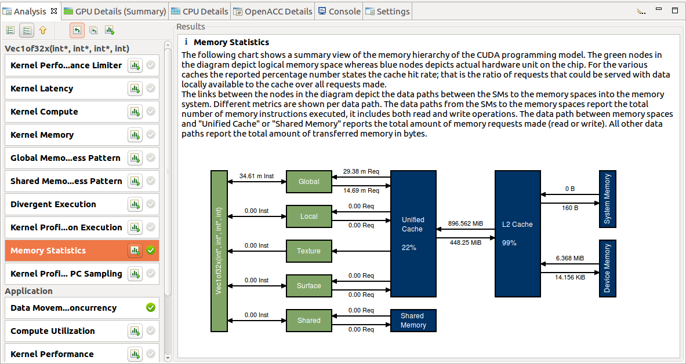
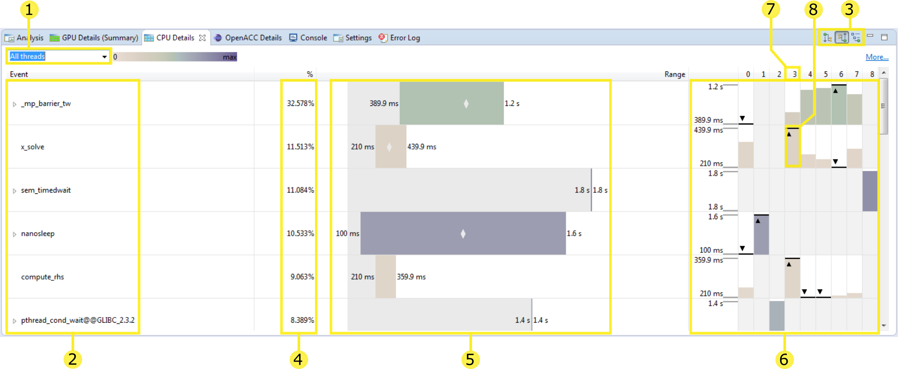
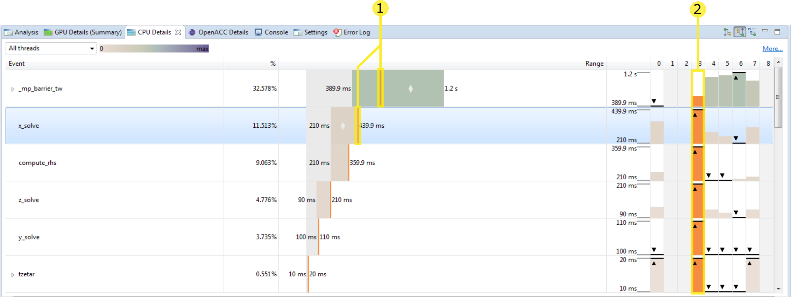
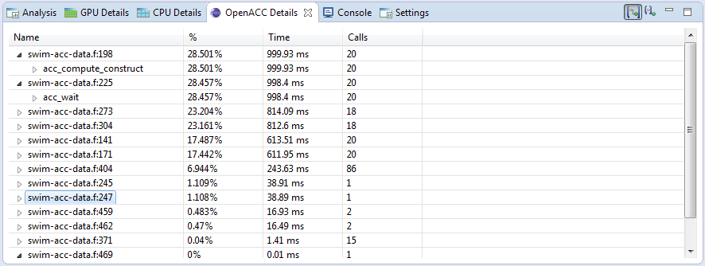
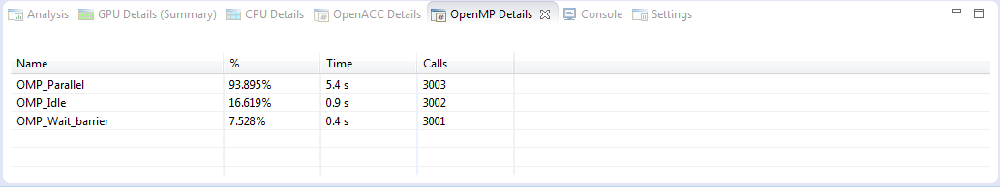
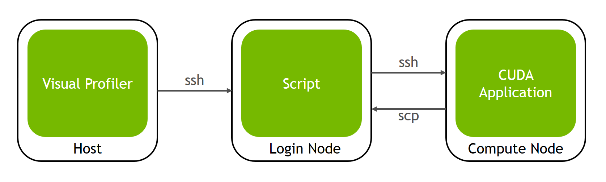
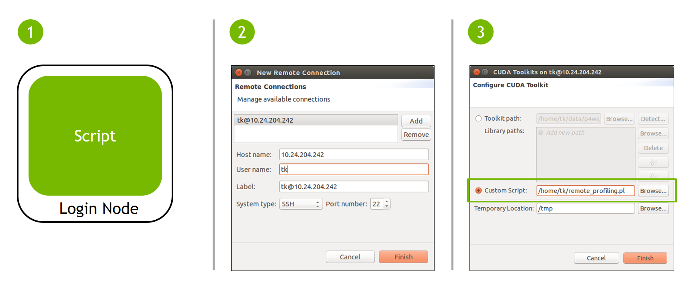

Profiler User's Guide
The user manual for NVIDIA profiling tools for optimizing performance of CUDA applications.
Profiling Overview
This document describes NVIDIA profiling tools that enable you to understand and optimize the performance of your CUDA, OpenACC or OpenMP applications. The Visual Profiler is a graphical profiling tool that displays a timeline of your application's CPU and GPU activity, and that includes an automated analysis engine to identify optimization opportunities. The nvprof profiling tool enables you to collect and view profiling data from the command-line.
Note that Visual Profiler and nvprof will be deprecated in a future CUDA release. The NVIDIA Volta platform is the last architecture on which these tools are fully supported. It is recommended to use next-generation tools NVIDIA Nsight Systems for GPU and CPU sampling and tracing and NVIDIA Nsight Compute for GPU kernel profiling.
Refer the Migrating to Nsight Tools from Visual Profiler and nvprof section for more details.
Terminology
An event is a countable activity, action, or occurrence on a device. It corresponds to a single hardware counter value which is collected during kernel execution. To see a list of all available events on a particular NVIDIA GPU, type nvprof --query-events.
A metric is a characteristic of an application that is calculated from one or more event values. To see a list of all available metrics on a particular NVIDIA GPU, type nvprof --query-metrics. You can also refer to the metrics reference .
1. Preparing An Application For Profiling
The CUDA profiling tools do not require any application changes to enable profiling; however, by making some simple modifications and additions, you can greatly increase the usability and effectiveness profiling. This section describes these modifications and how they can improve your profiling results.
1.1. Focused Profiling
By default, the profiling tools collect profile data over the entire run of your application. But, as explained below, you typically only want to profile the region(s) of your application containing some or all of the performance-critical code. Limiting profiling to performance-critical regions reduces the amount of profile data that both you and the tools must process, and focuses attention on the code where optimization will result in the greatest performance gains.
- The application is a test harness that contains a CUDA implementation of all or part of your algorithm. The test harness initializes the data, invokes the CUDA functions to perform the algorithm, and then checks the results for correctness. Using a test harness is a common and productive way to quickly iterate and test algorithm changes. When profiling, you want to collect profile data for the CUDA functions implementing the algorithm, but not for the test harness code that initializes the data or checks the results.
- The application operates in phases, where a different set of algorithms is active in each phase. When the performance of each phase of the application can be optimized independently of the others, you want to profile each phase separately to focus your optimization efforts.
- The application contains algorithms that operate over a large number of iterations, but the performance of the algorithm does not vary significantly across those iterations. In this case you can collect profile data from a subset of the iterations.
When using the start and stop functions, you also need to instruct the profiling tool to disable profiling at the start of the application. For nvprof you do this with the --profile-from-start off flag. For the Visual Profiler you use the Start execution with profiling enabled checkbox in the Settings View.
1.2. Marking Regions of CPU Activity
The Visual Profiler can collect a trace of the CUDA function calls made by your application. The Visual Profiler shows these calls in the Timeline View, allowing you to see where each CPU thread in the application is invoking CUDA functions. To understand what the application's CPU threads are doing outside of CUDA function calls, you can use the NVIDIA Tools Extension API (NVTX). When you add NVTX markers and ranges to your application, the Timeline View shows when your CPU threads are executing within those regions.
nvprof also supports NVTX markers and ranges. Markers and ranges are shown in the API trace output in the timeline. In summary mode, each range is shown with CUDA activities associated with that range.
1.3. Naming CPU and CUDA Resources
The Visual Profiler Timeline View shows default naming for CPU thread and GPU devices, context and streams. Using custom names for these resources can improve understanding of the application behavior, especially for CUDA applications that have many host threads, devices, contexts, or streams. You can use the NVIDIA Tools Extension API to assign custom names for your CPU and GPU resources. Your custom names will then be displayed in the Timeline View.
nvprof also supports NVTX naming. Names of CUDA devices, contexts and streams are displayed in summary and trace mode. Thread names are displayed in summary mode.
1.4. Flush Profile Data
To reduce profiling overhead, the profiling tools collect and record profile information into internal buffers. These buffers are then flushed asynchronously to disk with low priority to avoid perturbing application behavior. To avoid losing profile information that has not yet been flushed, the application being profiled should make sure, before exiting, that all GPU work is done (using CUDA synchronization calls), and then call cudaProfilerStop() or cuProfilerStop(). Doing so forces buffered profile information on corresponding context(s) to be flushed.
If your CUDA application includes graphics that operate using a display or main loop, care must be taken to call cudaProfilerStop() or cuProfilerStop() before the thread executing that loop calls exit(). Failure to call one of these APIs may result in the loss of some or all of the collected profile data.
For some graphics applications like the ones use OpenGL, the application exits when the escape key is pressed. In those cases where calling the above functions before exit is not feasible, use nvprof option --timeout or set the "Execution timeout" in the Visual Profiler. The profiler will force a data flush just before the timeout.
1.5. Profiling CUDA Fortran Applications
CUDA Fortran applications compiled with the PGI CUDA Fortran compiler can be profiled by nvprof and the Visual Profiler. In cases where the profiler needs source file and line information (kernel profile analysis, global memory access pattern analysis, divergent execution analysis, etc.), use the "-Mcuda=lineinfo" option when compiling. This option is supported on Linux 64-bit targets in PGI 2019 version 19.1 or later.
Visual Profiler
The NVIDIAVisual Profiler allows you to visualize and optimize the performance of your application. The Visual Profiler displays a timeline of your application's activity on both the CPU and GPU so that you can identify opportunities for performance improvement. In addition, the Visual Profiler will analyze your application to detect potential performance bottlenecks and direct you on how to take action to eliminate or reduce those bottlenecks.
The Visual Profiler is available as both a standalone application and as part of Nsight Eclipse Edition. The standalone version of the Visual Profiler, nvvp, is included in the CUDA Toolkit for all supported OSes except for macOS. Starting with the CUDA 11.0, Visual Profiler and nvprof don't support macOS as the target platform. However Visual Profiler will continue to support remote profiling from the macOS host. Visual Profiler is provided in a separate installer package to maintain the remote profiling workflow for CUDA developers on macOS. See Developer Tools for macOS for download instructions. Within Nsight Eclipse Edition, the Visual Profiler is located in the Profile Perspective and is activated when an application is run in profile mode.
2.1. Getting Started
This section describes steps you might take as you begin profiling.
2.1.1. Setting up Java Runtime Environment
2.1.2. Modify Your Application For Profiling
The Visual Profiler does not require any application changes; however, by making some simple modifications and additions, you can greatly increase its usability and effectiveness. Section Preparing An Application For Profiling describes how you can focus your profiling efforts and add extra annotations to your application that will greatly improve your profiling experience.
2.1.3. Creating a Session
The first step in using the Visual Profiler to profile your application is to create a new profiling session. A session contains the settings, data, and results associated with your application. The Sessions section gives more information on working with sessions.
You can create a new session by selecting the Profile An Application link on the Welcome page, or by selecting New Session from the File menu. In the Create New Session dialog enter the executable for your application. Optionally, you can also specify the working directory, arguments, multi-process profiling option and environment.
- Profile child processes - If selected, profile all processes launched by the specified application.
- Profile all processes - If selected, profile every CUDA process launched on the same system by the same user who launched nvprof. In this mode the Visual Profiler will launch nvprof and user needs to run his application in another terminal outside the Visual Profiler. User can exit this mode by pressing "Cancel" button on progress dialog in Visual Profiler to load the profile data
- Profile current process only - If selected, only profile specified application.
- Start execution with profiling enabled - If selected profile data is collected from the start of application execution. If not selected profile data is not collected until cudaProfilerStart() is called in the application. See Focused Profiling for more information about cudaProfilerStart().
- Enable concurrent kernel profiling - This option should be selected for an application that uses CUDA streams to launch kernels that can execute concurrently. If the application uses only a single stream (and therefore cannot have concurrent kernel execution), deselecting this option may decrease profiling overhead.
- Enable CUDA API tracing in the timeline - If selected, the CUDA driver and runtime API call trace is collected and displayed on timeline.
- Enable power, clock, and thermal profiling - If selected, power, clock, and thermal conditions on the GPUs will be sampled and displayed on the timeline. Collection of this data is not supported on all GPUs. See the description of the Device timeline in Timeline View for more information.
- Enable unified memory profiling - If selected for the GPU that supports Unified Memory, the Unified Memory related memory traffic to and from each GPU is collected on your system and displayed on timeline.
- Replay application to collect events and metrics - If selected, the whole application is re-run instead of replaying each kernel, in order to collect all events/metrics.
- Run guided analysis - If selected, the guided analysis is run immediately after the creation of a new session. Uncheck this option to disable this behavior.
- Profile execution on the CPU - If selected the CPU threads are sampled and data collected about the CPU performance is shown in the CPU Details View.
- Enable OpenACC profiling - If selected and an OpenACC application is profiled, OpenACC activities will be recorded and displayed on a new OpenACC timeline. Collection of this data is only supported on Linux and PGI 19.1 or later. See the description of the OpenACC timeline in Timeline View for more information.
- Enable CPU thread tracing - If enabled, selected CPU thread API calls will be recorded and displayed on a new thread API timeline. This currently includes the Pthread API, mutexes and condition variables. For performance reasons, only those API calls that influence concurrent execution are recorded and collection of this data is not supported on Windows. See the description of the thread timeline in Timeline View for more information. This option should be selected for dependency analysis of applications with multiple CPU threads using CUDA.
- Load data for time range - If selected the start and end time stamps for the range of data to be loaded can be specified. This option is useful to select a subset of a large data.
- Enable timelines in the session - By default all timelines are enabled. If a timeline is un-checked, the data associated with that timeline will not be loaded and it will not be displayed.
2.1.4. Analyzing Your Application
If the Don't run guided analysis option was not selected when you created your session, the Visual Profiler will immediately run your application to collect the data needed for the first stage of guided analysis. As described in the Analysis View section, you can use the guided analysis system to get recommendations on performance limiting behavior in your application.
2.1.5. Exploring the Timeline
In addition to the guided analysis results, you will see a timeline for your application showing the CPU and GPU activity that occurred as your application executed. Read Timeline View and Properties View to learn how to explore the profiling information that is available in the timeline. Navigating the Timeline describes how you can zoom and scroll the timeline to focus on specific areas of your application.
2.1.6. Looking at the Details
In addition to the results provided in the Analysis View, you can also look at the specific metric and event values collected as part of the analysis. Metric and event values are displayed in the GPU Details View. You can collect specific metric and event values that reveal how the kernels in your application are behaving. You collect metrics and events as described in the GPU Details View section.
2.1.7. Improve Loading of Large Profiles
Some applications launch many tiny kernels, making them prone to very large (100s of megabytes or larger) output, even for application runs of only a few seconds. The Visual Profiler needs roughly the same amount of memory as the size of the profile it is opening/importing. The Java virtual machine may use a fraction of the main memory if no "max heap size" setting is specified. So depending on the size of main memory, the Visual Profiler may fail to load some large files.
If the Visual Profiler fails to load a large profile, try setting the max heap size that JVM is allowed to use according to main memory size. You can modify the config file libnvvp/nvvp.ini in the toolkit installation directory. On macOS the nvvp.ini file is present in folder /Developer/{cuda_install_dir}/libnvvp/nvvp.app/Contents/MacOS/. The nvvp.ini configuration file looks like this:
-startup plugins/org.eclipse.equinox.launcher_1.3.0.v20140415-2008.jar --launcher.library plugins/org.eclipse.equinox.launcher.gtk.linux.x86_64_1.1.200.v20140603-1326 -data @user.home/nvvp_workspace -vm ../jre/bin/java -vmargs -Dorg.eclipse.swt.browser.DefaultType=mozilla
To force the JVM to use 3 gigabytes of memory, for example, add a new line with ‑Xmx3G after ‑vmargs. The -Xmx setting should be tailored to the available system memory and input size. For example, if your system has 24GB of system memory, and you happen to know that you won't need to run any other memory-intensive applications at the same time as the Visual Profiler, so it's okay for the profiler to take up the vast majority of that space. So you might pick, say, 22GB as the maximum heap size, leaving a few gigabytes for the OS, GUI, and any other programs that might be running.
- Increase the default heap size (the one Java automatically starts up with) to, say, 2GB. (-Xms)
- Tell Java to run in 64-bit mode instead of the default 32-bit mode (only works on 64-bit systems); this is required if you want heap sizes >4GB. (-d64)
- Enable Javas parallel garbage collection system, which helps both to decrease the required memory space for a given input size as well as to catch out of memory errors more gracefully. (-XX:+UseConcMarkSweepGC -XX:+CMSIncrementalMode)
Note: most installations require administrator/root-level access to modify this file.
The modified nvvp.ini file as per examples given above is as follows:
-data @user.home/nvvp_workspace -vm ../jre/bin/java -d64 -vmargs -Xms2g -Xmx22g -XX:+UseConcMarkSweepGC -XX:+CMSIncrementalMode -Dorg.eclipse.swt.browser.DefaultType=Mozilla
For more details on JVM settings, consult the Java virtual machine manual.
In addition to this you can use timeline options Load data for time range and Enable timelines in the session mentioned in the Creating a Session section to limit the data which is loaded and displayed.
2.2. Sessions
A session contains the settings, data, and profiling results associated with your application. Each session is saved in a separate file; so you can delete, move, copy, or share a session by simply deleting, moving, copying, or sharing the session file. By convention, the file extension .nvvp is used for Visual Profiler session files.
There are two types of sessions: an executable session that is associated with an application that is executed and profiled from within the Visual Profiler, and an import session that is created by importing data generated by nvprof.
2.2.1. Executable Session
You can create a new executable session for your application by selecting the Profile An Application link on the Welcome page, or by selecting New Session from the File menu. Once a session is created, you can edit the session's settings as described in the Settings View.
You can open and save existing sessions using the open and save options in the File menu.
To analyze your application and to collect metric and event values, the Visual Profiler will execute your application multiple times. To get accurate profiling results, it is important that your application conform to the requirements detailed in Application Requirements.
2.2.2. Import Session
You create an import session from the output of nvprof by using the Import... option in the File menu. Selecting this option opens the import dialog which guides you through the import process.
Because an executable application is not associated with an import session, the Visual Profiler cannot execute the application to collect additional profile data. As a result, analysis can only be performed with the data that is imported. Also, the GPU Details View will show any imported event and metrics values but new metrics and events cannot be selected and collected for the import session.
2.2.2.1. Import Single-Process nvprof Session
Using the import dialog you can select one or more nvprof data files for import into the new session.
You must have one nvprof data file that contains the timeline information for the session. This data file should be collected by running nvprof with the --export-profile option. You can optionally enable other options such as --system-profiling on, but you should not collect any events or metrics as that will distort the timeline so that it is not representative of the applications true behavior.
You may optionally specify one or more event/metric data files that contain event and metric values for the application. These data files should be collected by running nvprof with one or both of the --events and --metrics options. To collect all the events and metrics that are needed for the analysis system, you can simply use the --analysis-metrics option along with the --kernels option to select the kernel(s) to collect events and metrics for. See Remote Profiling for more information.
If you are importing multiple nvprof output files into the session, it is important that your application conform to the requirements detailed in Application Requirements.
2.2.2.2. Import Multi-Process nvprof Session
Using the import wizard you can select multiple nvprof data files for import into the new multi-process session.
Each nvprof data file must contain the timeline information for one of the processes. This data file should be collected by running nvprof with the --export-profile option. You can optionally enable other options such as --system-profiling on, but you should not collect any events or metrics as that will distort the timeline so that it is not representative of the applications true behavior.
Select the Multiple Processes option in the Import nvprof Data dialog as shown in the figure below.

When importing timeline data from multiple processes you may not specify any event/metric data files for those processes. Multi-processes profiling is only supported for timeline data.
2.2.2.3. Import Command-Line Profiler Session
Support for command-line profiler (using the environment variable COMPUTE_PROFILE) has been dropped, but CSV files generated using earlier versions can still be imported.
Using the import wizard you can select one or more command-line profiler generated CSV files for import into the new session. When you import multiple CSV files, their contents are combined and displayed in a single timeline.
The command-line profiler CSV file must be generated with the gpustarttimestamp and streamid configuration parameters. It is fine to include other configuration parameters, including events.
2.3. Application Requirements
- For a device, the order of context creation must be the same each time the application executes. For a multi-threaded application where each thread creates its own context(s), care must be taken to ensure that the order of those context creations is consistent across multiple runs. For example, it may be necessary to create the contexts on a single thread and then pass the contexts to the other threads. Alternatively, the NVIDIA Tools Extension API can be used to provide a custom name for each context. As long as the same custom name is applied to the same context on each execution of the application, the Visual Profiler will be able to correctly associate those contexts across multiple runs.
- For a context, the order of stream creation must be the same each time the application executes. Alternatively, the NVIDIA Tools Extension API can be used to provide a custom name for each stream. As long as the same custom name is applied to the same stream on each execution of the application, the Visual Profiler will be able to correctly associate those streams across multiple runs.
- Within a stream, the order of kernel and memcpy invocations must be the same each time the application executes.
Visual Profiler Views
The Visual Profiler is organized into views. Together, the views allow you to analyze and visualize the performance of your application. This section describes each view and how you use it while profiling your application.
2.4.1. Timeline View
The Timeline View shows CPU and GPU activity that occurred while your application was being profiled. Multiple timelines can be opened in the Visual Profiler at the same time in different tabs. The following figure shows a Timeline View for a CUDA application.

Along the top of the view is a horizontal ruler that shows elapsed time from the start of application profiling. Along the left of the view is a vertical ruler that describes what is being shown for each horizontal row of the timeline, and that contains various controls for the timeline. These controls are described in Timeline Controls
The timeline view is composed of timeline rows. Each row shows intervals that represent the start and end times of the activities that correspond to the type of the row. For example, timeline rows representing kernels have intervals representing the start and end times of executions of that kernel. In some cases (as noted below) a timeline row can display multiple sub-rows of activity. Sub-rows are used when there is overlapping activity. These sub-rows are created dynamically as necessary depending on how much activity overlap there is. The placement of intervals within certain sub-rows does not convey any particular meaning. Intervals are just packed into sub-rows using a heuristic that attempts to minimize the number of needed sub-rows. The height of the sub-rows is scaled to keep vertical space reasonable.
The types of timeline rows that are displayed in the Timeline View are:
- Process
- A timeline will contain a Process row for each application profiled. The process identifier represents the pid of the process. The timeline row for a process does not contain any intervals of activity. Threads within the process are shown as children of the process.
- Thread
- A timeline will contain a Thread row for each CPU thread in the profiled application that performed either a CUDA driver or CUDA runtime API call. The thread identifier is a unique id for that CPU thread. The timeline row for a thread is does not contain any intervals of activity.
- Runtime API
- A timeline will contain a Runtime API row for each CPU thread that performs a CUDA Runtime API call. Each interval in the row represents the duration of the call on the corresponding thread.
- Driver API
- A timeline will contain a Driver API row for each CPU thread that performs a CUDA Driver API call. Each interval in the row represents the duration of the call on the corresponding thread.
- OpenACC
- A timeline will contain one or multiple OpenACC rows for each CPU thread that calls OpenACC directives. Each interval in the row represents the duration of the call on the corresponding thread. Each OpenACC timeline may consist of multiple rows. Within one timeline, OpenACC activities on rows further down are called from within activities on the rows above.
- OpenMP
- A timeline will contain one OpenMP row for each CPU thread that calls OpenMP. Each interval in the row represents how long the application spends in a given OpenMP region or state. The application may be in multiple states at the same time, this is shown by drawing multiple rows where some intervals overlap.
- Pthread
- A timeline will contain one Pthread row for each CPU thread that performs Pthread API calls, given that host thread API calls have been recorded during measurement. Each interval in the row represents the duration of the call. Note that for performance reasons, only selected Pthread API calls may have been recorded.
- Markers and Ranges
- A timeline will contain a single Markers and Ranges row for each CPU thread that uses the NVIDIA Tools Extension API to annotate a time range or marker. Each interval in the row represents the duration of a time range, or the instantaneous point of a marker. This row will have sub-rows if there are overlapping ranges.
- Profiling Overhead
- A timeline will contain a single Profiling Overhead row for each process. Each interval in the row represents the duration of execution of some activity required for profiling. These intervals represent activity that does not occur when the application is not being profiled.
- Device
- A timeline will contain a Device row for each GPU device utilized by the application being profiled. The name of the timeline row indicates the device ID in square brackets followed by the name of the device. After running the Compute Utilization analysis, the row will contain an estimate of the compute utilization of the device over time. If power, clock, and thermal profiling are enabled, the row will also contain points representing those readings.
- Unified Memory
- A timeline will contain a Unified Memory row for each CPU thread and device that uses unified memory. The Unified memory may contain CPU Page Faults, GPU Page Faults, Data Migration (DtoH) and Data Migration (HtoD) rows. When creating a session user can select segment mode or non-segment mode for Unified Memory timelines. In the segment mode the timeline is split into equal width segments and only aggregated data values for each time segment are shown. The number of segments can be changed. In non-segment mode each interval on the timeline will represent the actual data collected and the properties for each interval can be viewed. The segments are colored using a heat-map color scheme. Under properties for the timeline the property which is used for selecting the color is given and also a legend displays the mapping of colors to different range of property values.
- CPU Page Faults
- This will contain a CPU Page Faults row for each CPU thread. In the non-segment mode each interval on the timeline corresponds to one CPU page fault.
- Data Migration (DtoH)
- A timeline will contain Data Migration (DtoH) row for each device. In the non-segment mode each interval on the timeline corresponds to one data migration from device to host.
- GPU Page Faults
- A timeline will contain GPU Page Faults . row for each CPU thread. In the non-segment mode each interval on the timeline corresponds to one GPU page fault group.
- Data Migration (DtoH)
- A timeline will contain Data Migration (HtoD) row for each device. In the non-segment mode each interval on the timeline corresponds to one data migration from host to device.
- Context
- A timeline will contains a Context row for each CUDA context on a GPU device. The name of the timeline row indicates the context ID or the custom context name if the NVIDIA Tools Extension API was used to name the context. The row for a context does not contain any intervals of activity.
- Memcpy
- A timeline will contain memory copy row(s) for each context that performs memcpys. A context may contain up to four memcpy rows for device-to-host, host-to-device, device-to-device, and peer-to-peer memory copies. Each interval in a row represents the duration of a memcpy executing on the GPU.
- Compute
- A timeline will contain a Compute row for each context that performs computation on the GPU. Each interval in a row represents the duration of a kernel on the GPU device. The Compute row indicates all the compute activity for the context. Sub-rows are used when concurrent kernels are executed on the context. All kernel activity, including kernels launched using CUDA Dynamic Parallelism, is shown on the Compute row. The Kernel rows following the Compute row show activity of each individual application kernel.
- Kernel
- A timeline will contain a Kernel row for each kernel executed by the application. Each interval in a row represents the duration of execution of an instance of that kernel in the containing context. Each row is labeled with a percentage that indicates the total execution time of all instances of that kernel compared to the total execution time of all kernels. For each context, the kernels are ordered top to bottom by this execution time percentage. Sub-rows are used to show concurrent kernel execution. For CUDA Dynamic Parallelism applications, the kernels are organized in a hierarchy that represents the parent/child relationship between the kernels. Host-launched kernels are shown as direct children of the Context row. Kernels that use CUDA Dynamic Parallelism to launch other kernels can be expanded using the '+' icon to show the kernel rows representing those child kernels. For kernels that don't launch child kernels, the kernel execution is represented by a solid interval, showing the time that that instance of the kernel was executing on the GPU. For kernels that launch child kernels, the interval can also include a hollow part at the end. The hollow part represents the time after the kernel has finished executing where it is waiting for child kernels to finish executing. The CUDA Dynamic Parallelism execution model requires that a parent kernel not complete until all child kernels complete and this is what the hollow part is showing. The Focus control described in Timeline Controls can be used to control display of the parent/child timelines.
- Stream
- A timeline will contain a Stream row for each stream used by the application (including both the default stream and any application created streams). Each interval in a Stream row represents the duration of a memcpy or kernel execution performed on that stream.
2.4.1.1. Timeline Controls
The Timeline View has several controls that you use to control how the timeline is displayed. Some of these controls also influence the presentation of data in the GPU Details View and the Analysis View.
Resizing the Vertical Timeline Ruler
The width of the vertical ruler can be adjusted by placing the mouse pointer over the right edge of the ruler. When the double arrow pointer appears, click and hold the left mouse button while dragging. The vertical ruler width is saved with your session.
Reordering Timelines
The Kernel and Stream timeline rows can be reordered. You may want to reorder these rows to aid in visualizing related kernels and streams, or to move unimportant kernels and streams to the bottom of the timeline. To reorder a row, left-click and hold onto the row label. When the double arrow pointer appears, drag up or down to position the row. The timeline ordering is saved with your session.
Filtering Timelines
Memcpy and Kernel rows can be filtered to exclude their activities from presentation in the GPU Details View and the Analysis View. To filter out a row, left-click on the filter icon just to the left of the row label. To filter all Kernel or Memcpy rows, Shift-left-click one of the rows. When a row is filtered, any intervals on that row are dimmed to indicate their filtered status.
Expanding and Collapsing Timelines
- Collapsed
- No timeline rows contained in the collapsed row are shown.
- Expanded
- All non-filtered timeline rows are shown.
- All-Expanded
- All timeline rows, filtered and non-filtered, are shown.
Intervals associated with collapsed rows may not be shown in the GPU Details View and the Analysis View, depending on the filtering mode set for those views (see view documentation for more information). For example, if you collapse a device row, then all memcpys, memsets, and kernels associated with that device are excluded from the results shown in those views.
Coloring Timelines
There are three modes for timeline coloring. The coloring mode can be selected in the View menu, in the timeline context menu (accessed by right-clicking in the timeline view), and on the profiler toolbar. In kernel coloring mode, each type of kernel is assigned a unique color (that is, all activity intervals in a kernel row have the same color). In stream coloring mode, each stream is assigned a unique color (that is, all memcpy and kernel activity occurring on a stream are assigned the same color). In process coloring mode, each process is assigned a unique color (that is, all memcpy and kernel activity occurring in a process are assigned the same color).
Focusing Kernel Timelines
For applications using CUDA Dynamic Parallelism, the Timeline View displays a hierarchy of kernel activity that shows the parent/child relationship between kernels. By default all parent/child relationships are shown simultaneously. The focus timeline control can be used to focus the displayed parent/child relationships to a specific, limited set of "family trees". The focus timeline mode can be selected and deselected in the timeline context menu (accessed by right-clicking in the timeline view), and on the profiler toolbar.
To see the "family tree" of a particular kernel, select a kernel and then enable Focus mode. All kernels except those that are ancestors or descendants of the selected kernel will be hidden. Ctrl-select can be used to select multiple kernels before enabling Focus mode. Use the "Don't Focus" option to disable focus mode and restore all kernels to the Timeline view.
Dependency Analysis Controls
There are two modes for visualizing dependency analysis results in the timeline: Focus Critical Path and Highlight Execution Dependencies. These modes can be selected in the View menu, in the timeline context menu (accessed by right-clicking in the timeline view), and on the Visual Profiler toolbar.
These options become available after the Dependency Analysis application analysis stage has been run (see Unguided Application Analysis). A detailed explanation of these modes is given in Dependency Analysis Controls
Timeline Refreshing
The profiler loads the timeline gradually as it reads the data. This is more apparent if the data file being loaded is big, or the application has generated a lot of data. In such cases, the timeline may be partially rendered. At the same time, a spinning circle replaces the icon of the current session tab, indicating the timeline is not fully loaded. Loading is finished when the icon changes back.
To reduce its memory footprint, the profiler may skip loading some timeline contents if they are not visible at the current zoom level. These contents will be automatically loaded when they become visible on a new zoom level.
2.4.1.4. Dependency Analysis Controls
The profiler allows the visualization of dependency analysis results in the timeline once the respective analysis stage has been run. For a detailed description on how dependency analysis works, see Dependency Analysis.
Focus Critical Path visualizes the critical path through the application by focusing on all intervals on the critical path and fading others. When the mode is enabled and any timeline interval is selected (by left-clicking it), the selected interval will have focus. However, the critical path will still be visible as hollow intervals. This allows you to "follow" the critical path through the execution and to inspect individual intervals.
Highlight Execution Dependencies allows you to
analyze the execution dependencies for each interval (Note that for certain
intervals, no dependency information is collected). When this mode is
enabled, the highlighting color changes from yellow (representing
correlated intervals) to red (representing dependencies). Both the selected
interval as well as all incoming and outgoing dependencies are highlighted.

2.4.2. Analysis View
The Analysis View is used to control application analysis and to display the analysis results. There are two analysis modes: guided and unguided. In guided mode the analysis system will guide you through multiple analysis stages to help you understand the likely performance limiters and optimization opportunities in your application. In unguided mode you can manually explore all the analysis results collected for your application. The following figure shows the analysis view in guided analysis mode. The left part of the view provides step-by-step directions to help you analyze and optimize your application. The right part of the view shows detailed analysis results appropriate for each part of the analysis.

2.4.2.1. Guided Application Analysis
In guided mode, the analysis view will guide you step-by-step through analysis of your entire application with specific analysis guidance provided for each kernel within your application. Guided analysis starts with CUDA Application Analysis and from there will guide you to optimization opportunities within your application.
2.4.2.2. Unguided Application Analysis
In unguided analysis mode each application analysis stage has a Run analysis button that can be used to generate the analysis results for that stage. When the Run analysis button is selected, the profiler will execute the application to collect the profiling data needed to perform the analysis. The green check-mark next to an analysis stage indicates that the analysis results for that stage are available. Each analysis result contains a brief description of the analysis and a More… link to detailed documentation on the analysis. When you select an analysis result, the timeline rows or intervals associated with that result are highlighted in the Timeline View.
When a single kernel instance is selected in the timeline, additional kernel-specific analysis stages are available. Each kernel-specific analysis stage has a Run analysis button that operates in the same manner as for the application analysis stages. The following figure shows the analysis results for the Divergent Execution analysis stage. Some kernel instance analysis results, like Divergent Execution, are associated with specific source-lines within the kernel. To see the source associated with each result, select an entry from the table. The source file associated with that entry will open.

2.4.2.3. PC Sampling View
Devices with compute capability 5.2 and higher, excluding mobile devices, have a feature for PC sampling. In this feature PC and state of warp are sampled at regular interval for one of the active warps per SM. The warp state indicates if that warp issued an instruction in a cycle or why it was stalled and could not issue an instruction. When a warp that is sampled is stalled, there is a possibility that in the same cycle some other warp is issuing an instruction. Hence the stall for the sampled warp need not necessarily indicate that there is a hole in the instruction issue pipeline. Refer to the Warp State section for a description of different states.
Devices with compute capability 6.0 and higher have a new feature that gives latency reasons. The latency samples indicate the reasons for holes in the issue pipeline. While collecting these samples, there is no instruction issued in the respective warp scheduler and hence these give the latency reasons. The latency reasons will be one of the stall reasons in Warp State section except 'not selected' stall reason.
The profiler collects this information and presents it in the Kernel Profile - PC Sampling view. In this view, the sample distribution for all functions and kernels is given in a table. A pie chart shows the distribution of stall reasons collected for each kernel. After clicking on the source file or device function the Kernel Profile - PC Sampling view is opened. The hotspots shown next to the vertical scroll bar are determined by the number of samples collected for each source and assembly line. The distribution of the stall reasons is shown as a stacked bar for each source and assembly line. This helps in pinpointing the latency reasons at the source code level.
For devices with compute capability 6.0 and higher, Visual Profiler show two views: 'Kernel Profile - PC Sampling' which gives the warp state view and 'Kernel Profile - PC Sampling - Latency' which gives the latency reasons. Hotspots can be seleted to point to hotspot of 'Warp State' or 'Latency Reasons'. The tables in result section give percentage distribution for total latency samples, issue pipeline busy samples and instruction issued samples.
The blog post Pinpoint Performance Problems with Instruction-Level Profiling shows how PC Sampling can be used to optimize a CUDA kernel.

2.4.2.4. Memory Statistics
Devices with compute capability 5.0 and higher have a feature to show usage of the memory sub-system during kernel execution. The chart shows a summary view of the memory hierarchy of the CUDA programming model. The green nodes in the diagram depict logical memory space whereas blue nodes depicts actual hardware unit on the chip. For the various caches the reported percentage number states the cache hit rate; that is the ratio of requests that could be served with data locally available to the cache over all requests made.
The links between the nodes in the diagram depict the data paths between the SMs to the memory spaces into the memory system. Different metrics are shown per data path. The data paths from the SMs to the memory spaces (Global, Local, Texture, Surface and Shared) report the total number of memory instructions executed, it includes both read and write operations. The data path between memory spaces and "Unified Cache" or "Shared Memory" reports the total amount of memory requests made. All other data paths report the total amount of transferred memory in bytes. The arrow pointing to right direction indicates WRITE operation whereas the arrow pointing to left direction indicates the READ operations.
2.4.2.5. NVLink view
NVIDIA NVLink is a high-bandwidth, energy-efficient interconnect that enables fast communication between the CPU and GPU, and between GPUs.
Visual Profiler collects NVLink topology and NVLink transmit/receive throughput metrics and maps the metrics on to the topology. The topology is collected by default along with the timeline. Throughput/ utilization metrics are generated only when NVLink option is chosen.
NVLink information is presented in the Results section of Examine GPU Usage in CUDA Application Analysis in Guided Analysis. NVLink Analysis shows topology that shows the logical NVLink connections between different devices. A logical link comprises of 1 to 4 physical NVLinks of same properties connected between two devices. Visual profiler lists the properties and achieved utilization for logical NVLinks in 'Logical NVLink Properties' table. It also lists the transmit and receive throughputs for logical NVLink in 'Logical NVLink Throughput' table.

2.4.3. Source-Disassembly View
The Source-Disassembly View is used to display the analysis results for a kernel at the source and assembly instruction level. To be able to view the kernel source you need to compile the code using the -lineinfo option. If this compiler option is not used, only the disassembly view will be shown.
- Global Memory Access Pattern Analysis
- Shared Memory Access Pattern Analysis
- Divergent Execution Analysis
- Kernel Profile - Instruction Execution Analysis
- Kernel Profile - PC Sampling Analysis
As part of the Guided Analysis or Unguided Analysis for a kernel the analysis results are displayed under the Analysis view. After clicking on the source file or device function the Source-Disassembly view is opened. If the source file is not found a dialog is opened to select and point to the new location of the source file. This can happen for example when the profiling is done on a different system.
- High level source
- Assembly instructions
- Hotspots at the source level
- Hotspots at the assembly instruction level
- Columns for profiling data aggregated to the source level
- Columns for profiling data collected at the assembly instruction level

- View menu - Select one or more out of the available profiler data columns to display. This is chosen by default based on the analysis type.
- Hot Spot menu - Select which profiler data to use for hot spots. This is chosen by default based on the analysis type.
- Show the source and disassembly views side by side.
- Show the source and disassembly views top to bottom.
- Maximize the source view
- Maximize the disassembly view
Hotspots are colored based on level of importance - low, medium or high. Hovering the mouse over the hotspot displays the value of the profiler data, the level of importance and the source or disassembly line. You can click on a hotspot at the source level or assembly instruction level to view the source or disassembly line corresponding to the hotspot.
In the disassembly view the assembly instructions corresponding to the selected source line are highlighted. You can click on the up and down arrow buttons displayed at the right of the disassembly column header to navigate to the next or previous instruction block.
2.4.4. GPU Details View
The GPU Details View displays a table of information for each memory copy and kernel execution in the profiled application. The following figure shows the table containing several memcpy and kernel executions. Each row of the table contains general information for a kernel execution or memory copy. For kernels, the table will also contain a column for each metric or event value collected for that kernel. In the figure, the Achieved Occupancy column shows the value of that metric for each of the kernel executions.

You can sort the data by column by left clicking on the column header, and you can rearrange the columns by left clicking on a column header and dragging it to its new location. If you select a row in the table, the corresponding interval will be selected in the Timeline View. Similarly, if you select a kernel or memcpy interval in the Timeline View the table will be scrolled to show the corresponding data.
If you hover the mouse over a column header, a tooltip will display the data shown in that column. For a column containing event or metric data, the tooltip will describe the corresponding event or metric. The Metrics Reference section contains more detailed information about each metric.
- Filter By Selection - If selected, the GPU Details View shows data only for the selected kernel and memcpy intervals.
- Show Hidden Timeline Data - If not selected, data is shown only for kernels and memcpys that are visible in the timeline. Kernels and memcpys that are not visible because they are inside collapsed parts of the timeline are not shown.
- Show Filtered Timeline Data - If not selected, data is shown only for kernels and memcpys that are in timeline rows that are not filtered.
Collecting Events and Metrics
Specific event and metric values can be collected for each kernel and displayed in the details table. Use the toolbar icon in the upper right corner of the view to configure the events and metrics to collect for each device, and to run the application to collect those events and metrics.
Show Summary Data
By default the table shows one row for each memcpy and kernel invocation. Alternatively, the table can show summary results for each kernel function. Use the toolbar icon in the upper right corner of the view to select or deselect summary format.
Formatting Table Contents
The numbers in the table can be displayed either with or without grouping separators. Use the toolbar icon in the upper right corner of the view to select or deselect grouping separators.
Exporting Details
The contents of the table can be exported in CSV format using the toolbar icon in the upper right corner of the view.
2.4.5. CPU Details View
CPU Details view
This view details the amount of time your application spends executing functions on the CPU. Each thread is sampled periodically to capture its callstack and the summary of these measurements are displayed in this view. You can manipulate the view by selecting different orientations for organizing the callstack: Top-down, Bottom-up, Code Structure (3), choosing which thread to view (1), and by sorting or highlighting a specific thread (7, 8).
- All the threads profiled are shown in one view when the 'all threads' option is selected (default). You can use this drop-down menu to instead select an individual thread.
- This column displays a tree of events representing the structure of the application's execution on the CPU. Each of the remaining columns show the measurements collected for this event. The events shown here are determined by which tree orientation mode is selected (3).
- The tree is organized to show the calling hierarchy among functions.
The following modes are available:
- Top-down (callers first) call tree view - The CPU details tree is organized as a call tree with each function shown as a child of its caller. In this mode you can see the callstack starting at the 'main' function.
- Bottom-up (callees first) call tree view - The CPU details tree is organized in such a way that each function is shown as a child of any functions it calls. In this mode you can quickly identify the call path that contributes the most time to the application's execution.
- Code structure (file and line) tree view - The CPU details tree shows which functions belong to each source file and library as well as how much of the application's execution is attributed to a given line of source code.
- This column displays the total amount of time spent by all threads in this event as a percentage of the total amount of time spent in all events.
- This column displays a bar denoting a range where the amount of time spent in an event by any thread is always within this this range. On the left the minimum value is written, and on the right the maximum value is written. Also, if there is space, a small 'diamond' is drawn in the middle of the bar where the mean time is spent in this event across all threads.
- These columns display a distinct chart for each event. On the left is a vertical scale showing the same minimum and maximum values as shown on the range chart. The following columns each show the amount of time spent in this event by thread. If the cell for the given event / thread combination is greyed out then no time was spent by this thread in this event (for this example both threads 1 and 2 spent no time in the event 'x_solve'). Furthermore, the thread(s) with the minimum or maximum amount of time spent in the event across all threads are annotated with the 'triangle / line'. In this example thread 3 spent the most and thread 6 the least amount of time in the event 'x_solve'.
- To reorder the rows by the time spent on a given thread click on the thread column header.
- To highlight a given thread click on one of its bars in this chart.
This change to the view is the result of sorting by thread 3 (7) and highlighting it (8).
- Having highlighted thread 3 we now see a vertical line on the range chart showing the amount of time this thread spent in this event compared to the range across all thread.
- This thread is also highlighted on each row.
CPU Threads
CPU Source Code
You can open the CPU Source View for any function by double-clicking on it in the tree. To be displayed the source files must be on the local file system. By default the directory containing the executable or profile file is searched. If the source file cannot be found a prompt will appear asking for its location. Sometimes a file within a specific directory is being sought, in this case you should give the path to where this directory resides.
2.4.6. OpenACC Details View
OpenACC table view
- Show the Inclusive durations (counting any other OpenACC activities running at the same time) in the OpenACC details view - The OpenACC details view shows the total time spent in each activity including any activities that were executed as the result of this activity. In this case the amount of time spent in each activity occurring at a given application source location is totaled and displayed on the row displaying the source location.
- Show the Exclusive durations (excluding any other OpenACC activities running at the same time) in the OpenACC details view - The OpenACC details view shows the time spent only in a given activity. In this case the amount of time spent at a given source location is always zero—time is attributed solely to each activity occurring at this source location.
2.4.7. OpenMP Details View
OpenMP table view
The OpenMP Details view displays the activity of the OpenMP runtime on the CPU. The time your application spends in a parallel region or idling is shown both on the timeline and is summarized in this view. The reference for the percentage of time spent in each type of activity is the time from the start of the first parallel region to the end of the last parallel region. The sum of the percentages of each activity type often exceeds 100% because the OpenMP runtime can be in multiple states at the same time.
2.4.8. Properties View
The Properties View shows information about the row or interval highlighted or selected in the Timeline View. If a row or interval is not selected, the displayed information tracks the motion of the mouse pointer. If a row or interval is selected, the displayed information is pinned to that row or interval.
When an OpenACC interval with an associated source file is selected, this filename is shown in the Source File table entry. Double-clicking on the filename opens the respective source file if it is available on the file-system.
2.4.9. Console View
The Console View shows stdout and stderr output of the application each time it executes. If you need to provide stdin input to your application, do so by typing into the console view.
2.4.10. Settings View
The Settings View allows you to specify execution settings for the application being profiled. As shown in the following figure, the Executable settings tab allows you to specify the executable file, the working directory, the command-line arguments, and the environment for the application. Only the executable file is required, all other fields are optional.

Exection Timeout
The Executable settings tab also allows you to specify an optional execution timeout. If the execution timeout is specified, the application execution will be terminated after that number of seconds. If the execution timeout is not specified, the application will be allowed to continue execution until it terminates normally.
Start execution with profiling enabled
The Start execution with profiling enabled checkbox is set by default to indicate that application profiling begins at the start of application execution. If you are using cudaProfilerStart() and cudaProfilerStop() to control profiling within your application as described in Focused Profiling, then you should uncheck this box.
Enable concurrent kernel profiling
The Enable concurrent kernel profiling checkbox is set by default to enable profiling of applications that exploit concurrent kernel execution. If this checkbox is unset, the profiler will disable concurrent kernel execution. Disabling concurrent kernel execution can reduce profiling overhead in some cases and so may be appropriate for applications that do not exploit concurrent kernels.
Enable power, clock, and thermal profiling
The Enable power, clock, and thermal profiling checkbox can be set to enable low frequency sampling of the power, clock, and thermal behavior of each GPU used by the application.
2.4.11. CPU Source View

The CPU source code view allows you to inspect the files that comprise the profiled application's CPU source. This view can be opened in the CPU Details View by double-clicking on a function in the tree–the source file that corresponds to this function is then opened. Line numbers can be enabled by right-clicking left side ruler.
- vector instructions generated by the compiler.
- compute-intensity of a loop, a ratio computation to memory operations–higher numbers mean that there is more computation than memory loads and stores.
- information about parallelization, with a hint for how it might be possible to make the loop run in parallel if the compiler could not auto-parallelize it.
Customizing the Profiler
When you first start the Visual Profiler, and after closing the Welcome page, you will be presented with a default placement of the views. By moving and resizing the views, you can customize the profiler to meet your development needs. Any changes you make are restored the next time you start the profiler.
2.5.1. Resizing a View
To resize a view, simply left click and drag on the dividing area between the views. All views stacked together in one area are resized at the same time.
2.5.2. Reordering a View
To reorder a view in a stacked set of views, left click and drag the view tab to the new location within the view stack.
2.5.3. Moving a View
to move a view, left click the view tab and drag it to its new location. As you drag the view, an outline will show the target location for the view. You can place the view in a new location, or stack it in the same location as other views.
2.5.4. Undocking a View
You can undock a view from the profiler window so that the view occupies its own stand-alone window. You may want to do this to take advantage of multiple monitors or to maximum the size of an individual view. To undock a view, left click the view tab and drag it outside of the profiler window. To dock a view, left click the view tab (not the window decoration) and drag it into the profiler window.
Opening and Closing a View
Use the X icon on a view tab to close a view. To open a view, use the View menu.
2.6. Command Line Arguments
- Start new executable session by launching nvvp with name of
executable followed, optionally, by its arguments:
nvvp executableName [[executableArguments]...] - Import single-process nvprof session by launching nvvp with
single .nvprof file as argument(see nvprof's export/import options
section for more details):
nvvp data.nvprof - Import multi-process nvprof session, by launching nvvp with
multiple .nvprof files as arguments:
nvvp data1.nvprof data2.nvprof ...
nvprof
The nvprof profiling tool enables you to collect and view profiling data from the command-line. nvprof enables the collection of a timeline of CUDA-related activities on both CPU and GPU, including kernel execution, memory transfers, memory set and CUDA API calls and events or metrics for CUDA kernels. Profiling options are provided to nvprof through command-line options. Profiling results are displayed in the console after the profiling data is collected, and may also be saved for later viewing by either nvprof or the Visual Profiler.
nvprof [options] [application]
[application-arguments]To view the full help page, type nvprof --help.
3.1. Command Line Options
3.1.1. CUDA Profiling Options
| Option | Values | Default | Description |
|---|---|---|---|
| aggregate-mode | on, off | on |
Turn on/off aggregate mode for events and metrics specified by subsequent --events and --metrics options. Those event/metric values will be collected for each domain instance, instead of the whole device. See Event/metric Trace Mode for more information. |
| analysis-metrics | N/A | N/A | Collect profiling data that can be imported to Visual Profiler's "analysis" mode. Note: Use --export-profile to specify an export file. |
| annotate-mpi | off, openmpi, mpich | off |
Automatically annotate MPI calls with NVTX markers. Specify the MPI implementation installed on your machine. Currently, Open MPI and MPICH implementations are supported. See Automatic MPI Annotation with NVTX for more information. |
| concurrent-kernels | on, off | on | Turn on/off concurrent kernel execution. If concurrent kernel execution is off, all kernels running on one device will be serialized. |
| continuous-sampling-interval | {interval in milliseconds} | 2 milliseconds | Set the continuous mode sampling interval in milliseconds. Minimum is 1 ms. |
| cpu-thread-tracing | on, off | off |
Collect information about CPU thread API activity. See CPU Thread Tracing for more information. |
| dependency-analysis | N/A | N/A |
Generate event dependency graph for host and device activities and run dependency analysis. See Dependency Analysis for more information. |
| device-buffer-size | {size in MBs} | 8 MB | Set the device memory size (in MBs) reserved for storing profiling data for non-CDP operations, especially for concurrent kernel tracing, for each buffer on a context. The size should be a positive integer. |
| device-cdp-buffer-size | {size in MBs} | 8 MB | Set the device memory size (in MBs) reserved for storing profiling data for CDP operations for each buffer on a context. The size should be a positive integer. |
| devices | {comma-separated device IDs}, all | N/A |
Change the scope of subsequent --events, --metrics, --query-events and --query-metrics options. See Profiling Scope for more information. |
| event-collection-mode | kernel, continuous | kernel |
Choose event collection mode for all events/metrics.
|
| events (e) | {comma-separated event names}, all | N/A | Specify the events to be profiled on certain device(s). Multiple event names separated by comma can be specified. Which device(s) are profiled is controlled by the --devices option. Otherwise events will be collected on all devices. For a list of available events, use --query-events. Use --events all to profile all events available for each device. Use --devices and --kernels to select a specific kernel invocation. |
| kernel-latency-timestamps | on, off | off | Turn on/off collection of kernel latency timestamps, namely queued and submitted. The queued timestamp is captured when a kernel launch command was queued into the CPU command buffer. The submitted timestamp denotes when the CPU command buffer containing this kernel launch was submitted to the GPU. Turning this option on may incur an overhead during profiling. |
| kernels | {kernel name}, {[context id/name]:[stream id/name]:[kernel name]:[invocation]} | N/A |
Change the scope of subsequent --events, --metrics options. The syntax is as follows:
Example: --kernels "1:foo:bar:2" will profile any kernel whose name contains "bar" and is the 2nd instance on context 1 and on stream named "foo". See Profiling Scope for more information. |
| metrics (m) | {comma-separated metric names}, all | N/A | Specify the metrics to be profiled on certain device(s). Multiple metric names separated by comma can be specified. Which device(s) are profiled is controlled by the --devices option. Otherwise metrics will be collected on all devices. For a list of available metrics, use --query-metrics. Use --metrics all to profile all metrics available for each device. Use --devices and --kernels to select a specific kernel invocation. Note: --metrics all does not include some metrics which are needed for Visual Profiler's source level analysis. For that, use --analysis-metrics. |
| pc-sampling-period | {period in cycles} | Between 5 and 12 based on the setup | Specify PC Sampling period in cycles, at which the sampling records will be dumped. Allowed values for the period are integers between 5 to 31 both inclusive. This will set the sampling period to (2^period) cycles Note: Only available for GM20X+. |
| profile-all-processes | N/A | N/A |
Profile all processes launched by the same user who launched this nvprof instance. Note: Only one instance of nvprof can run with this option at the same time. Under this mode, there's no need to specify an application to run. See Multiprocess Profiling for more information. |
| profile-api-trace | none, runtime, driver, all | all |
Turn on/off CUDA runtime/driver API tracing.
|
| profile-child-processes | N/A | N/A |
Profile the application and all child processes launched by it. See Multiprocess Profiling for more information. |
| profile-from-start | on, off | on |
Enable/disable profiling from the start of the application. If it's disabled, the application can use {cu,cuda}Profiler{Start,Stop} to turn on/off profiling. See Focused Profiling for more information. |
| profiling-semaphore-pool-size | {count} | 65536 | Set the profiling semaphore pool size reserved for storing profiling data for serialized kernels and memory operations for each context. The size should be a positive integer. |
| query-events | N/A | N/A | List all the events available on the device(s). Device(s) queried can be controlled by the --devices option. |
| query-metrics | N/A | N/A | List all the metrics available on the device(s). Device(s) queried can be controlled by the --devices option. |
| replay-mode | disabled, kernel, application | kernel |
Choose replay mode used when not all events/metrics can be collected in a single run.
|
| skip-kernel-replay-save-restore | on, off | off |
If enabled, this option can vastly improve kernel replay speed, as save and restore of the mutable state for each kernel pass will be skipped. Skipping of save/restore of input/output buffers allows you to specify that all profiled kernels on the context do not change the contents of their input buffers during execution, or call device malloc/free or new/delete, that leave the device heap in a different state. Specifically, a kernel can malloc and free a buffer in the same launch, but it cannot call an unmatched malloc or an unmatched free. Note: incorrectly using this mode while one of the kernels does modify the input buffer or uses unmatched malloc/free will result in undefined behavior, including kernel execution failure and/or corrupted device data.
|
| source-level-analysis (a) | global_access, shared_access, branch, instruction_execution, pc_sampling | N/A |
Specify the source level metrics to be profiled on a certain kernel invocation. Use --devices and --kernels to select a specific kernel invocation. One or more of these may be specified, separated by commas
Note: Use --export-profile to specify an export file. See Source-Disassembly View for more information. |
| system-profiling | on, off | off |
Turn on/off power, clock, and thermal profiling. See System Profiling for more information. |
| timeout (t) | {seconds} | N/A |
Set an execution timeout (in seconds) for the CUDA application. Note: Timeout starts counting from the moment the CUDA driver is initialized. If the application doesn't call any CUDA APIs, timeout won't be triggered. See Timeout and Flush Profile Data for more information. |
| track-memory-allocations | on, off | off | Turn on/off tracking of memory operations, which involves recording timestamps, memory size, memory type and program counters of the memory allocations and frees. Turning this option on may incur an overhead during profiling. |
| unified-memory-profiling | per-process-device, off | per-process-device |
Configure unified memory profiling.
See Unified Memory Profiling for more information. |
3.1.2. CPU Profiling Options
| Option | Values | Default | Description |
|---|---|---|---|
| cpu-profiling | on, off | off | Turn on CPU profiling. Note: CPU profiling is not supported in multi-process mode. |
| cpu-profiling-explain-ccff | {filename} | N/A | Set the path to a PGI pgexplain.xml file that should be used to interpret Common Compiler Feedback Format (CCFF) messages. |
| cpu-profiling-frequency | {frequency} | 100Hz | Set the CPU profiling frequency in samples per second. Maximum is 500Hz. |
| cpu-profiling-max-depth | {depth} | 0 (i.e. unlimited) | Set the maximum depth of each call stack. |
| cpu-profiling-mode | flat, top-down, bottom-up | bottom-up |
Set the output mode of CPU profiling.
|
| cpu-profiling-percentage-threshold | {threshold} | 0 (i.e. unlimited) | Filter out the entries that are below the set percentage threshold. The limit should be an integer between 0 and 100, inclusive. |
| cpu-profiling-scope | function, instruction | function |
Choose the profiling scope.
|
| cpu-profiling-show-ccff | on, off | off | Choose whether to print Common Compiler Feedback Format (CCFF) messages embedded in the binary. Note: this option implies --cpu-profiling-scope instruction. |
| cpu-profiling-show-library | on, off | off | Choose whether to print the library name for each sample. |
| cpu-profiling-thread-mode | separated, aggregated | aggregated |
Set the thread mode of CPU profiling.
|
| cpu-profiling-unwind-stack | on, off | on | Choose whether to unwind the CPU call-stack at each sample point. |
| openacc-profiling | on, off | on |
Enable/disable recording information from the OpenACC profiling interface. Note: if the OpenACC profiling interface is available depends on the OpenACC runtime. See OpenACC for more information. |
| openmp-profiling | on, off | off |
Enable/disable recording information from the OpenMP profiling interface. Note: if the OpenMP profiling interface is available depends on the OpenMP runtime. See OpenMP for more information. |
3.1.3. Print Options
| Option | Values | Default | Description |
|---|---|---|---|
| context-name | {name} | N/A |
Name of the CUDA context. %i in the context name string is replaced with the ID of the context. %p in the context name string is replaced with the process ID of the application being profiled. %q{<ENV>} in the context name string is replaced with the value of the environment variable <ENV>. If the environment variable is not set it's an error. %h in the context name string is replaced with the hostname of the system. %% in the context name string is replaced with %. Any other character following % is illegal. |
| csv | N/A | N/A |
Use comma-separated values in the output. See CSV for more information. |
| demangling | on, off | on |
Turn on/off C++ name demangling of function names. See Demangling for more information. |
| normalized-time-unit (u) | s, ms, us, ns, col, auto | auto |
Specify the unit of time that will be used in the output.
See Adjust Units for more information. |
| openacc-summary-mode | exclusive, inclusive | exclusive |
Set how durations are computed in the OpenACC summary. See OpenACC Summary Modes for more information. |
| trace | api, gpu | N/A |
Specify the option (or options separated by commas) to be traced.
|
| print-api-summary | N/A | N/A | Print a summary of CUDA runtime/driver API calls. |
| print-api-trace | N/A | N/A |
Print CUDA runtime/driver API trace. See GPU-Trace and API-Trace Modes for more information. |
| print-dependency-analysis-trace | N/A | N/A |
Print dependency analysis trace. See Dependency Analysis for more information. |
| print-gpu-summary | N/A | N/A |
Print a summary of the activities on the GPU (including CUDA kernels and memcpy's/memset's). See Summary Mode for more information. |
| print-gpu-trace | N/A | N/A |
Print individual kernel invocations (including CUDA memcpy's/memset's) and sort them in chronological order. In event/metric profiling mode, show events/metrics for each kernel invocation. See GPU-Trace and API-Trace Modes for more information. |
| print-openacc-constructs | N/A | N/A |
Include parent construct names in OpenACC profile. See OpenACC Options for more information. |
| print-openacc-summary | N/A | N/A | Print a summary of the OpenACC profile. |
| print-openacc-trace | N/A | N/A | Print a trace of the OpenACC profile. |
| print-openmp-summary | N/A | N/A | Print a summary of the OpenMP profile. |
| print-summary (s) | N/A | N/A | Print a summary of the profiling result on screen. Note: This is the default unless --export-profile or other print options are used. |
| print-summary-per-gpu | N/A | N/A | Print a summary of the profiling result for each GPU. |
| process-name | {name} | N/A |
Name of the process. %p in the process name string is replaced with the process ID of the application being profiled. %q{<ENV>} in the process name string is replaced with the value of the environment variable <ENV>. If the environment variable is not set it's an error. %h in the process name string is replaced with the hostname of the system. %% in the process name string is replaced with %. Any other character following % is illegal. |
| quiet | N/A | N/A | Suppress all nvprof output. |
| stream-name | {name} | N/A |
Name of the CUDA stream. %i in the stream name string is replaced with the ID of the stream. %p in the stream name string is replaced with the process ID of the application being profiled. %q{<ENV>} in the stream name string is replaced with the value of the environment variable <ENV>. If the environment variable is not set it's an error. %h in the stream name string is replaced with the hostname of the system. %% in the stream name string is replaced with %. Any other character following % is illegal. |
3.1.4. IO Options
| Option | Values | Default | Description |
|---|---|---|---|
| export-profile (o) | {filename} | N/A |
Export the result file which can be imported later or opened by the NVIDIA Visual Profiler. %p in the file name string is replaced with the process ID of the application being profiled. %q{<ENV>} in the file name string is replaced with the value of the environment variable <ENV>. If the environment variable is not set it's an error. %h in the file name string is replaced with the hostname of the system. %% in the file name string is replaced with %. Any other character following % is illegal. By default, this option disables the summary output. Note: If the application being profiled creates child processes, or if --profile-all-processes is used, the %p format is needed to get correct export files for each process. See Export/Import for more information. |
| force-overwrite (f) | N/A | N/A | Force overwriting all output files (any existing files will be overwritten). |
| import-profile (i) | {filename} | N/A |
Import a result profile from a previous run. See Export/Import for more information. |
| log-file | {filename} | N/A |
Make nvprof send all its output to the specified file, or one of the standard channels. The file will be overwritten. If the file doesn't exist, a new one will be created. %1 as the whole file name indicates standard output channel (stdout). %2 as the whole file name indicates standard error channel (stderr). Note: This is the default. %p in the file name string is replaced with the process ID of the application being profiled. %q{<ENV>} in the file name string is replaced with the value of the environment variable <ENV>. If the environment variable is not set it's an error. %h in the file name string is replaced with the hostname of the system. %% in the file name is replaced with %. Any other character following % is illegal. See Redirecting Output for more information. |
| print-nvlink-topology | N/A | N/A | Print nvlink topology |
| print-pci-topology | N/A | N/A | Print PCI topology |
| help (h) | N/A | N/A | Print help information. |
| version (V) | N/A | N/A | Print version information of this tool. |
3.2. Profiling Modes
nvprof operates in one of the modes listed below.
3.2.1. Summary Mode
Summary mode is the default operating mode for nvprof. In this mode, nvprof outputs a single result line for each kernel function and each type of CUDA memory copy/set performed by the application. For each kernel, nvprof outputs the total time of all instances of the kernel or type of memory copy as well as the average, minimum, and maximum time. The time for a kernel is the kernel execution time on the device. By default, nvprof also prints a summary of all the CUDA runtime/driver API calls. Output of nvprof (except for tables) are prefixed with ==<pid>==, <pid> being the process ID of the application being profiled.
$ nvprof matrixMul [Matrix Multiply Using CUDA] - Starting... ==27694== NVPROF is profiling process 27694, command: matrixMul GPU Device 0: "GeForce GT 640M LE" with compute capability 3.0 MatrixA(320,320), MatrixB(640,320) Computing result using CUDA Kernel... done Performance= 35.35 GFlop/s, Time= 3.708 msec, Size= 131072000 Ops, WorkgroupSize= 1024 threads/block Checking computed result for correctness: OK Note: For peak performance, please refer to the matrixMulCUBLAS example. ==27694== Profiling application: matrixMul ==27694== Profiling result: Time(%) Time Calls Avg Min Max Name 99.94% 1.11524s 301 3.7051ms 3.6928ms 3.7174ms void matrixMulCUDA<int=32>(float*, float*, float*, int, int) 0.04% 406.30us 2 203.15us 136.13us 270.18us [CUDA memcpy HtoD] 0.02% 248.29us 1 248.29us 248.29us 248.29us [CUDA memcpy DtoH] ==27964== API calls: Time(%) Time Calls Avg Min Max Name 49.81% 285.17ms 3 95.055ms 153.32us 284.86ms cudaMalloc 25.95% 148.57ms 1 148.57ms 148.57ms 148.57ms cudaEventSynchronize 22.23% 127.28ms 1 127.28ms 127.28ms 127.28ms cudaDeviceReset 1.33% 7.6314ms 301 25.353us 23.551us 143.98us cudaLaunch 0.25% 1.4343ms 3 478.09us 155.84us 984.38us cudaMemcpy 0.11% 601.45us 1 601.45us 601.45us 601.45us cudaDeviceSynchronize 0.10% 564.48us 1505 375ns 313ns 3.6790us cudaSetupArgument 0.09% 490.44us 76 6.4530us 307ns 221.93us cuDeviceGetAttribute 0.07% 406.61us 3 135.54us 115.07us 169.99us cudaFree 0.02% 143.00us 301 475ns 431ns 2.4370us cudaConfigureCall 0.01% 42.321us 1 42.321us 42.321us 42.321us cuDeviceTotalMem 0.01% 33.655us 1 33.655us 33.655us 33.655us cudaGetDeviceProperties 0.01% 31.900us 1 31.900us 31.900us 31.900us cuDeviceGetName 0.00% 21.874us 2 10.937us 8.5850us 13.289us cudaEventRecord 0.00% 16.513us 2 8.2560us 2.6240us 13.889us cudaEventCreate 0.00% 13.091us 1 13.091us 13.091us 13.091us cudaEventElapsedTime 0.00% 8.1410us 1 8.1410us 8.1410us 8.1410us cudaGetDevice 0.00% 2.6290us 2 1.3140us 509ns 2.1200us cuDeviceGetCount 0.00% 1.9970us 2 998ns 520ns 1.4770us cuDeviceGet
If multiple CUDA capable devices are profiled, nvprof --print-summary-per-gpu can be used to print one summary per GPU.
nvprof supports CUDA Dynamic Parallelism in summary mode. If your application uses Dynamic Parallelism, the output will contain one column for the number of host-launched kernels and one for the number of device-launched kernels. Here's an example of running nvprof on the CUDA Dynamic Parallelism sample cdpSimpleQuicksort:
$ nvprof cdpSimpleQuicksort ==27325== NVPROF is profiling process 27325, command: cdpSimpleQuicksort
Running on GPU 0 (Tesla K20c) Initializing data: Running quicksort on 128 elements Launching kernel on the GPU Validating results: OK ==27325== Profiling application: cdpSimpleQuicksort ==27325== Profiling result: Time(%) Time Calls (host) Calls (device) Avg Min Max Name 99.71% 1.2114ms 1 14 80.761us 5.1200us 145.66us cdp_simple_quicksort(unsigned int*, int, int, int) 0.18% 2.2080us 1 - 2.2080us 2.2080us 2.2080us [CUDA memcpy DtoH] 0.11% 1.2800us 1 - 1.2800us 1.2800us 1.2800us [CUDA memcpy HtoD]
3.2.2. GPU-Trace and API-Trace Modes
GPU-Trace and API-Trace modes can be enabled individually or together. GPU-Trace mode provides a timeline of all activities taking place on the GPU in chronological order. Each kernel execution and memory copy/set instance is shown in the output. For each kernel or memory copy, detailed information such as kernel parameters, shared memory usage and memory transfer throughput are shown. The number shown in the square brackets after the kernel name correlates to the CUDA API that launched that kernel.
Here's an example:
$ nvprof --print-gpu-trace matrixMul ==27706== NVPROF is profiling process 27706, command: matrixMul
==27706== Profiling application: matrixMul [Matrix Multiply Using CUDA] - Starting... GPU Device 0: "GeForce GT 640M LE" with compute capability 3.0 MatrixA(320,320), MatrixB(640,320) Computing result using CUDA Kernel... done Performance= 35.36 GFlop/s, Time= 3.707 msec, Size= 131072000 Ops, WorkgroupSize= 1024 threads/block Checking computed result for correctness: OK Note: For peak performance, please refer to the matrixMulCUBLAS example. ==27706== Profiling result: Start Duration Grid Size Block Size Regs* SSMem* DSMem* Size Throughput Device Context Stream Name 133.81ms 135.78us - - - - - 409.60KB 3.0167GB/s GeForce GT 640M 1 2 [CUDA memcpy HtoD] 134.62ms 270.66us - - - - - 819.20KB 3.0267GB/s GeForce GT 640M 1 2 [CUDA memcpy HtoD] 134.90ms 3.7037ms (20 10 1) (32 32 1) 29 8.1920KB 0B - - GeForce GT 640M 1 2 void matrixMulCUDA<int=32>(float*, float*, float*, int, int) [94] 138.71ms 3.7011ms (20 10 1) (32 32 1) 29 8.1920KB 0B - - GeForce GT 640M 1 2 void matrixMulCUDA<int=32>(float*, float*, float*, int, int) [105] <...more output...> 1.24341s 3.7011ms (20 10 1) (32 32 1) 29 8.1920KB 0B - - GeForce GT 640M 1 2 void matrixMulCUDA<int=32>(float*, float*, float*, int, int) [2191] 1.24711s 3.7046ms (20 10 1) (32 32 1) 29 8.1920KB 0B - - GeForce GT 640M 1 2 void matrixMulCUDA<int=32>(float*, float*, float*, int, int) [2198] 1.25089s 248.13us - - - - - 819.20KB 3.3015GB/s GeForce GT 640M 1 2 [CUDA memcpy DtoH] Regs: Number of registers used per CUDA thread. This number includes registers used internally by the CUDA driver and/or tools and can be more than what the compiler shows. SSMem: Static shared memory allocated per CUDA block. DSMem: Dynamic shared memory allocated per CUDA block.
nvprof supports CUDA Dynamic Parallelism in GPU-Trace mode. For host kernel launch, the kernel ID will be shown. For device kernel launch, the kernel ID, parent kernel ID and parent block will be shown. Here's an example:
$nvprof --print-gpu-trace cdpSimpleQuicksort ==28128== NVPROF is profiling process 28128, command: cdpSimpleQuicksort
Running on GPU 0 (Tesla K20c) Initializing data: Running quicksort on 128 elements Launching kernel on the GPU Validating results: OK ==28128== Profiling application: cdpSimpleQuicksort ==28128== Profiling result: Start Duration Grid Size Block Size Regs* SSMem* DSMem* Size Throughput Device Context Stream ID Parent ID Parent Block Name 192.76ms 1.2800us - - - - - 512B 400.00MB/s Tesla K20c (0) 1 2 - - - [CUDA memcpy HtoD] 193.31ms 146.02us (1 1 1) (1 1 1) 32 0B 0B - - Tesla K20c (0) 1 2 2 - - cdp_simple_quicksort(unsigned int*, int, int, int) [171] 193.41ms 110.53us (1 1 1) (1 1 1) 32 0B 256B - - Tesla K20c (0) 1 2 -5 2 (0 0 0) cdp_simple_quicksort(unsigned int*, int, int, int) 193.45ms 125.57us (1 1 1) (1 1 1) 32 0B 256B - - Tesla K20c (0) 1 2 -6 2 (0 0 0) cdp_simple_quicksort(unsigned int*, int, int, int) 193.48ms 9.2480us (1 1 1) (1 1 1) 32 0B 256B - - Tesla K20c (0) 1 2 -7 -5 (0 0 0) cdp_simple_quicksort(unsigned int*, int, int, int) 193.52ms 107.23us (1 1 1) (1 1 1) 32 0B 256B - - Tesla K20c (0) 1 2 -8 -5 (0 0 0) cdp_simple_quicksort(unsigned int*, int, int, int) 193.53ms 93.824us (1 1 1) (1 1 1) 32 0B 256B - - Tesla K20c (0) 1 2 -9 -6 (0 0 0) cdp_simple_quicksort(unsigned int*, int, int, int) 193.57ms 117.47us (1 1 1) (1 1 1) 32 0B 256B - - Tesla K20c (0) 1 2 -10 -6 (0 0 0) cdp_simple_quicksort(unsigned int*, int, int, int) 193.58ms 5.0560us (1 1 1) (1 1 1) 32 0B 256B - - Tesla K20c (0) 1 2 -11 -8 (0 0 0) cdp_simple_quicksort(unsigned int*, int, int, int) 193.62ms 108.06us (1 1 1) (1 1 1) 32 0B 256B - - Tesla K20c (0) 1 2 -12 -8 (0 0 0) cdp_simple_quicksort(unsigned int*, int, int, int) 193.65ms 113.34us (1 1 1) (1 1 1) 32 0B 256B - - Tesla K20c (0) 1 2 -13 -10 (0 0 0) cdp_simple_quicksort(unsigned int*, int, int, int) 193.68ms 29.536us (1 1 1) (1 1 1) 32 0B 256B - - Tesla K20c (0) 1 2 -14 -12 (0 0 0) cdp_simple_quicksort(unsigned int*, int, int, int) 193.69ms 22.848us (1 1 1) (1 1 1) 32 0B 256B - - Tesla K20c (0) 1 2 -15 -10 (0 0 0) cdp_simple_quicksort(unsigned int*, int, int, int) 193.71ms 130.85us (1 1 1) (1 1 1) 32 0B 256B - - Tesla K20c (0) 1 2 -16 -13 (0 0 0) cdp_simple_quicksort(unsigned int*, int, int, int) 193.73ms 62.432us (1 1 1) (1 1 1) 32 0B 256B - - Tesla K20c (0) 1 2 -17 -12 (0 0 0) cdp_simple_quicksort(unsigned int*, int, int, int) 193.76ms 41.024us (1 1 1) (1 1 1) 32 0B 256B - - Tesla K20c (0) 1 2 -18 -13 (0 0 0) cdp_simple_quicksort(unsigned int*, int, int, int) 193.92ms 2.1760us - - - - - 512B 235.29MB/s Tesla K20c (0) 1 2 - - - [CUDA memcpy DtoH] Regs: Number of registers used per CUDA thread. This number includes registers used internally by the CUDA driver and/or tools and can be more than what the compiler shows. SSMem: Static shared memory allocated per CUDA block. DSMem: Dynamic shared memory allocated per CUDA block.
API-trace mode shows the timeline of all CUDA runtime and driver API calls invoked on the host in chronological order. Here's an example:
$nvprof --print-api-trace matrixMul ==27722== NVPROF is profiling process 27722, command: matrixMul
==27722== Profiling application: matrixMul [Matrix Multiply Using CUDA] - Starting... GPU Device 0: "GeForce GT 640M LE" with compute capability 3.0 MatrixA(320,320), MatrixB(640,320) Computing result using CUDA Kernel... done Performance= 35.35 GFlop/s, Time= 3.708 msec, Size= 131072000 Ops, WorkgroupSize= 1024 threads/block Checking computed result for correctness: OK Note: For peak performance, please refer to the matrixMulCUBLAS example. ==27722== Profiling result: Start Duration Name 108.38ms 6.2130us cuDeviceGetCount 108.42ms 840ns cuDeviceGet 108.42ms 22.459us cuDeviceGetName 108.45ms 11.782us cuDeviceTotalMem 108.46ms 945ns cuDeviceGetAttribute 149.37ms 23.737us cudaLaunch (void matrixMulCUDA<int=32>(float*, float*, float*, int, int) [2198]) 149.39ms 6.6290us cudaEventRecord 149.40ms 1.10156s cudaEventSynchronize <...more output...> 1.25096s 21.543us cudaEventElapsedTime 1.25103s 1.5462ms cudaMemcpy 1.25467s 153.93us cudaFree 1.25483s 75.373us cudaFree 1.25491s 75.564us cudaFree 1.25693s 10.901ms cudaDeviceReset
3.2.3. Event/metric Summary Mode
To see a list of all available events on a particular NVIDIA GPU, use the --query-events option. To see a list of all available metrics on a particular NVIDIA GPU, use the --query-metrics option. nvprof is able to collect multiple events/metrics at the same time. Here's an example:
$ nvprof --events warps_launched,local_load --metrics ipc matrixMul [Matrix Multiply Using CUDA] - Starting... ==6461== NVPROF is profiling process 6461, command: matrixMul
GPU Device 0: "GeForce GTX TITAN" with compute capability 3.5
MatrixA(320,320), MatrixB(640,320)
Computing result using CUDA Kernel...
==6461== Warning: Some kernel(s) will be replayed on device 0 in order to collect all events/metrics.
done
Performance= 6.39 GFlop/s, Time= 20.511 msec, Size= 131072000 Ops, WorkgroupSize= 1024 threads/block
Checking computed result for correctness: Result = PASS
NOTE: The CUDA Samples are not meant for performance measurements. Results may vary when GPU Boost is enabled.
==6461== Profiling application: matrixMul
==6461== Profiling result:
==6461== Event result:
Invocations Event Name Min Max Avg
Device "GeForce GTX TITAN (0)"
Kernel: void matrixMulCUDA<int=32>(float*, float*, float*, int, int)
301 warps_launched 6400 6400 6400
301 local_load 0 0 0
==6461== Metric result:
Invocations Metric Name Metric Description Min Max Avg
Device "GeForce GTX TITAN (0)"
Kernel: void matrixMulCUDA<int=32>(float*, float*, float*, int, int)
301 ipc Executed IPC 1.282576 1.299736 1.291500
If the specified events/metrics can't be profiled in a single run of the application, nvprof by default replays each kernel multiple times until all the events/metrics are collected.
The --replay-mode <mode> option can be used to change the replay mode. In "application replay" mode, nvprof re-runs the whole application instead of replaying each kernel, in order to collect all events/metrics. In some cases this mode can be faster than kernel replay mode if the application allocates large amount of device memory. Replay can also be turned off entirely, in which case the profiler will not collect some events/metrics.
To collect all events available on each device, use the option --events all.
To collect all metrics available on each device, use the option --metrics all.
3.2.4. Event/metric Trace Mode
In event/metric trace mode, event and metric values are shown for each kernel execution. By default, event and metric values are aggregated across all units in the GPU. For example, multiprocessor specific events are aggregated across all multiprocessors on the GPU. If --aggregate-mode off is specified, values of each unit are shown. For example, in the following example, the "branch" event value is shown for each multiprocessor on the GPU:
$ nvprof --aggregate-mode off --events local_load --print-gpu-trace matrixMul [Matrix Multiply Using CUDA] - Starting... ==6740== NVPROF is profiling process 6740, command: matrixMul
GPU Device 0: "GeForce GTX TITAN" with compute capability 3.5
MatrixA(320,320), MatrixB(640,320)
Computing result using CUDA Kernel...
done
Performance= 16.76 GFlop/s, Time= 7.822 msec, Size= 131072000 Ops, WorkgroupSize= 1024 threads/block
Checking computed result for correctness: Result = PASS
NOTE: The CUDA Samples are not meant for performance measurements. Results may vary when GPU Boost is enabled.
==6740== Profiling application: matrixMul
==6740== Profiling result:
Device Context Stream Kernel local_load (0) local_load (1) ...
GeForce GTX TIT 1 7 void matrixMulCUDA<i 0 0 ...
GeForce GTX TIT 1 7 void matrixMulCUDA<i 0 0 ...
<...more output...>
3.3. Profiling Controls
3.3.1. Timeout
A timeout (in seconds) can be provided to nvprof. The CUDA application being profiled will be killed by nvprof after the timeout. Profiling result collected before the timeout will be shown.
3.3.2. Concurrent Kernels
Concurrent-kernel profiling is supported, and is turned on by default. To turn the feature off, use the option --concurrent-kernels off. This forces concurrent kernel executions to be serialized when a CUDA application is run with nvprof.
3.3.3. Profiling Scope
When collecting events/metrics, nvprof profiles all kernels launched on all visible CUDA devices by default. This profiling scope can be limited by the following options.
--devices <device IDs> applies to --events, --metrics, --query-events and --query-metrics options that follows it. It limits these options to collect events/metrics only on the devices specified by <device IDs>, which can be a list of device ID numbers separated by comma.
--kernels <kernel filter> applies to --events and --metrics options that follows it. It limits these options to collect events/metrics only on the kernels specified by <kernel filter>, which has the following syntax:
<kernel name>
or
<context id/name>:<stream id/name>:<kernel
name>:<invocation>Each string in the angle brackets can be a standard Perl regular expression. Empty string matches any number or character combination.
Invocation number n indicates the nth invocation of the kernel. If invocation is a positive number, it's strictly matched against the invocation of the kernel. Otherwise it's treated as a regular expression. Invocation number is counted separately for each kernel. So for instance :::3 will match the 3rd invocation of every kernel.
If the context/stream string is a positive number, it's strictly matched against the cuda context/stream ID. Otherwise it's treated as a regular expression and matched against the context/stream name provided by the NVIDIA Tools Extension.
Both --devices and --kernels can be specified multiple times, with distinct events/metrics associated.
--events, --metrics, --query-events and --query-metrics are controlled by the nearest scope options before them.
As an example, the following command,
nvprof --devices 0 --metrics ipc
--kernels "1:foo:bar:2" --events local_load a.outcollects metric ipc on all kernels launched on device 0. It also collects event local_load for any kernel whose name contains bar and is the 2nd instance launched on context 1 and on stream named foo on device 0.
3.3.4. Multiprocess Profiling
By default, nvprof only profiles the application specified by the command-line argument. It doesn't trace child processes launched by that process. To profile all processes launched by an application, use the --profile-child-processes option.
nvprof also has a "profile all processes" mode, in which it profiles every CUDA process launched on the same system by the same user who launched nvprof. Exit this mode by typing "Ctrl-c".
3.3.5. System Profiling
For devices that support system profiling, nvprof can enable low frequency sampling of the power, clock, and thermal behavior of each GPU used by the application. This feature is turned off by default. To turn on this feature, use --system-profiling on. To see the detail of each sample point, combine the above option with --print-gpu-trace.
3.3.6. Unified Memory Profiling
For GPUs that support Unified Memory, nvprof collects the Unified Memory related memory traffic to and from each GPU on your system. This feature is enabled by default. This feature can be disabled with --unified-memory-profiling off. To see the detail of each memory transfer while this feature is enabled, use --print-gpu-trace.
On multi-GPU configurations without P2P support between any pair of devices that support Unified Memory, managed memory allocations are placed in zero-copy memory. In this case Unified Memory profiling is not supported. In certain cases, the environment variable CUDA_MANAGED_FORCE_DEVICE_ALLOC can be set to force managed allocations to be in device memory and to enable migration on these hardware configurations. In this case Unified Memory profiling is supported. Normally, using the environment variable CUDA_VISIBLE_DEVICES is recommended to restrict CUDA to only use those GPUs that have P2P support. Please refer to the environment variables section in the CUDA C++ Programming Guide for further details.
3.3.7. CPU Thread Tracing
- the application uses multiple CPU threads and
- at least two of these threads call the CUDA API.
3.4. Output
3.4.1. Adjust Units
By default, nvprof adjusts the time units automatically to get the most precise time values. The --normalized-time-unit options can be used to get fixed time units throughout the results.
3.4.2. CSV
For each profiling mode, option --csv can be used to generate output in comma-separated values (CSV) format. The result can be directly imported to spreadsheet software such as Excel.
3.4.3. Export/Import
For each profiling mode, option --export-profile can be used to generate a result file. This file is not human-readable, but can be imported back to nvprof using the option --import-profile, or into the Visual Profiler.
3.4.4. Demangling
By default, nvprof demangles C++ function names. Use option --demangling off to turn this feature off.
3.4.5. Redirecting Output
By default, nvprof sends most of its output to stderr. To redirect the output, use --log-file. --log-file %1 tells nvprof to redirect all output to stdout. --log-file <filename> redirects output to a file. Use %p in the filename to be replaced by the process ID of nvprof, %h by the hostname , %q{ENV} by the value of environment variable ENV, and %% by %.
3.4.6. Dependency Analysis
nvprof can run a Dependency Analysis after the application has been profiled, using the --dependency-analysis option. This analysis can also be applied to imported profiles. It requires to collect the full CUDA API and GPU activity trace during measurement. This is the default for nvprof if not disabled using --profile-api-trace none.
For applications using CUDA from multiple CPU threads, CPU Thread Tracing should be enabled, too. The option --print-dependency-analysis-trace can be specified to change from a summary output to a trace output, showing computed metrics such as time on the critical path per function instance rather than per function type.
==20704== Dependency Analysis:
==20704== Analysis progress: 100%
Critical path(%) Critical path Waiting time Name
% s s
92.06 4.061817 0.000000 clock_block(long*, long)
4.54 0.200511 0.000000 cudaMalloc
3.25 0.143326 0.000000 cudaDeviceReset
0.13 5.7273280e-03 0.000000 <Other>
0.01 2.7200900e-04 0.000000 cudaFree
0.00 0.000000 4.062506 pthread_join
0.00 0.000000 4.061790 cudaStreamSynchronize
0.00 0.000000 1.015485 pthread_mutex_lock
0.00 0.000000 1.013711 pthread_cond_wait
0.00 0.000000 0.000000 pthread_mutex_unlock
0.00 0.000000 0.000000 pthread_exit
0.00 0.000000 0.000000 pthread_enter
0.00 0.000000 0.000000 pthread_create
0.00 0.000000 0.000000 pthread_cond_signal
0.00 0.000000 0.000000 cudaLaunch
3.5. CPU Sampling
======== CPU profiling result (bottom up):
45.45% cuInit
| 45.45% cudart::globalState::loadDriverInternal(void)
| 45.45% cudart::__loadDriverInternalUtil(void)
| 45.45% pthread_once
| 45.45% cudart::cuosOnce(int*, void (*) (void))
| 45.45% cudart::globalState::loadDriver(void)
| 45.45% cudart::globalState::initializeDriver(void)
| 45.45% cudaMalloc
| 45.45% main
33.33% cuDevicePrimaryCtxRetain
| 33.33% cudart::contextStateManager::initPrimaryContext(cudart::device*)
| 33.33% cudart::contextStateManager::tryInitPrimaryContext(cudart::device*)
| 33.33% cudart::contextStateManager::initDriverContext(void)
| 33.33% cudart::contextStateManager::getRuntimeContextState(cudart::contextState**, bool)
| 33.33% cudart::getLazyInitContextState(cudart::contextState**)
| 33.33% cudart::doLazyInitContextState(void)
| 33.33% cudart::cudaApiMalloc(void**, unsigned long)
| 33.33% cudaMalloc
| 33.33% main
18.18% cuDevicePrimaryCtxReset
| 18.18% cudart::device::resetPrimaryContext(void)
| 18.18% cudart::cudaApiThreadExit(void)
| 18.18% cudaThreadExit
| 18.18% main
3.03% cudbgGetAPIVersion
3.03% start_thread
3.03% clone
The graph can be presented in different "views" (top-down, bottom-up or flat), allowing the user to analyze the sampling data from different perspectives. For instance, the bottom-up view (shown above) can be useful in identifying the "hot" functions in which the application is spending most of its time. The top-down view gives a break-down of the application execution time, starting from the main function, allowing you to find "call paths" which are executed frequently.
By default the CPU sampling feature is disabled. To enable it, use the option --cpu-profiling on. The next section describes all the options controlling the CPU sampling behavior.
CPU sampling is supported on Linux and Windows for Intel x86/x86_64 architecture, and IBM POWER architecture.
3.5.1. CPU Sampling Limitations
- CPU sampling is not supported on the mobile devices.
- CPU sampling is currently not supported in multi-process profiling mode.
- The result stack traces might not be complete under some compiler optimizations, notably frame pointer omission and function inlining.
- The CPU sampling result does not support CSV mode.
3.6. OpenACC
On 64bit Linux platforms, nvprof supports recording OpenACC activities using the CUPTI Activity API. This allows to investigate the performance on the level of OpenACC constructs in addition to the underlying, compiler-generated CUDA API calls.
OpenACC profiling in nvprof requires the targeted application to use PGI OpenACC runtime 19.1 or later.
Even though recording OpenACC activities is only supported on x86_64 and IBM POWER Linux systems, importing and viewing previously generated profile data is available on all platforms supported by nvprof.
==20854== NVPROF is profiling process 20854, command: ./acc_saxpy
==20854== Profiling application: ./acc_saxpy
==20854== Profiling result:
==20854== OpenACC (excl):
Time(%) Time Calls Avg Min Max Name
33.16% 1.27944s 200 6.3972ms 24.946us 12.770ms acc_implicit_wait@acc_saxpy.cpp:42
33.12% 1.27825s 100 12.783ms 12.693ms 12.787ms acc_wait@acc_saxpy.cpp:54
33.12% 1.27816s 100 12.782ms 12.720ms 12.786ms acc_wait@acc_saxpy.cpp:61
0.14% 5.4550ms 100 54.549us 51.858us 71.461us acc_enqueue_download@acc_saxpy.cpp:43
0.07% 2.5190ms 100 25.189us 23.877us 60.269us acc_enqueue_launch@acc_saxpy.cpp:50 (kernel2(int, float, float*, float*)_50_gpu)
0.06% 2.4988ms 100 24.987us 24.161us 29.453us acc_enqueue_launch@acc_saxpy.cpp:60 (kernel3(int, float, float*, float*)_60_gpu)
0.06% 2.2799ms 100 22.798us 21.654us 56.674us acc_enqueue_launch@acc_saxpy.cpp:42 (kernel1(int, float, float*, float*)_42_gpu)
0.05% 2.1068ms 100 21.068us 20.444us 33.159us acc_enqueue_download@acc_saxpy.cpp:51
0.05% 2.0854ms 100 20.853us 19.453us 23.697us acc_enqueue_download@acc_saxpy.cpp:61
0.04% 1.6265ms 100 16.265us 15.284us 49.632us acc_enqueue_upload@acc_saxpy.cpp:50
0.04% 1.5963ms 100 15.962us 15.052us 19.749us acc_enqueue_upload@acc_saxpy.cpp:60
0.04% 1.5393ms 100 15.393us 14.592us 56.414us acc_enqueue_upload@acc_saxpy.cpp:42
0.01% 558.54us 100 5.5850us 5.3700us 6.2090us acc_implicit_wait@acc_saxpy.cpp:43
0.01% 266.13us 100 2.6610us 2.4630us 4.7590us acc_compute_construct@acc_saxpy.cpp:42
0.01% 211.77us 100 2.1170us 1.9980us 4.1770us acc_compute_construct@acc_saxpy.cpp:50
0.01% 209.14us 100 2.0910us 1.9880us 2.2500us acc_compute_construct@acc_saxpy.cpp:60
0.00% 55.066us 1 55.066us 55.066us 55.066us acc_enqueue_launch@acc_saxpy.cpp:70 (initVec(int, float, float*)_70_gpu)
0.00% 13.209us 1 13.209us 13.209us 13.209us acc_compute_construct@acc_saxpy.cpp:70
0.00% 10.901us 1 10.901us 10.901us 10.901us acc_implicit_wait@acc_saxpy.cpp:70
0.00% 0ns 200 0ns 0ns 0ns acc_delete@acc_saxpy.cpp:61
0.00% 0ns 200 0ns 0ns 0ns acc_delete@acc_saxpy.cpp:43
0.00% 0ns 200 0ns 0ns 0ns acc_create@acc_saxpy.cpp:60
0.00% 0ns 200 0ns 0ns 0ns acc_create@acc_saxpy.cpp:42
0.00% 0ns 200 0ns 0ns 0ns acc_delete@acc_saxpy.cpp:51
0.00% 0ns 200 0ns 0ns 0ns acc_create@acc_saxpy.cpp:50
0.00% 0ns 2 0ns 0ns 0ns acc_alloc@acc_saxpy.cpp:42
3.6.1. OpenACC Options
Table 1 contains OpenACC profiling related command-line options of nvprof.
| Option | Description |
|---|---|
| --openacc-profiling <on|off> | Turn on/off OpenACC profiling. Note: OpenACC profiling is only supported on x86_64 and IBM POWER Linux. Default is on. |
| --print-openacc-summary | Print a summary of all recorded OpenACC activities. |
| --print-openacc-trace | Print a detailed trace of all recorded OpenACC activities, including each activity's timestamp and duration. |
| --print-openacc-constructs | Include the name of the OpenACC parent construct that caused an OpenACC activity to be emitted. Note that for applications using PGI OpenACC runtime before 19.1, this value will always be unknown. |
| --openacc-summary-mode <exclusive|inclusive> | Specify how activity durations are presented in the OpenACC summary. Allowed values: "exclusive" - exclusive durations (default). "inclusive" - inclusive durations. See OpenACC Summary Modes for more information. |
3.6.2. OpenACC Summary Modes
- Inclusive: In this mode, all durations represent the actual runtime of an activity. This includes the time spent in this activity as well as in all its children (callees).
- Exclusive: In this mode, all durations represent the time spent solely in this activity. This includes the time spent in this activity but excludes the runtime of all of its children (callees).
As an example, consider the OpenACC acc_compute_construct which itself calls acc_enqueue_launch to launch a kernel to the device and acc_implicit_wait, which waits on the completion of this kernel. In "inclusive" mode, the duration for acc_compute_construct will include the time spent in acc_enqueue_launch and acc_implicit_wait. In "exclusive" mode, those two durations are subtracted. In the summary profile, this is helpful to identify if a long acc_compute_construct represents a high launch overhead or rather a long wait (synchronization) time.
3.7. OpenMP
On 64bit Linux platforms, nvprof supports recording OpenMP activities
OpenMP profiling in nvprof requires the targeted application to use a runtime supporting the OpenMP Tools interface (OMPT). (PGI version 19.1 or greater using the LLVM code generator supports OMPT).
Even though recording OpenMP activities is only supported on x86_64 and IBM POWER Linux systems, importing and viewing previously generated profile data is available on all platforms supported by nvprof.
==20854== NVPROF is profiling process 20854, command: ./openmp
==20854== Profiling application: ./openmp
==20854== Profiling result:
No kernels were profiled.
No API activities were profiled.
Type Time(%) Time Calls Avg Min Max Name
OpenMP (incl): 99.97% 277.10ms 20 13.855ms 13.131ms 18.151ms omp_parallel
0.03% 72.728us 19 3.8270us 2.9840us 9.5610us omp_idle
0.00% 7.9170us 7 1.1310us 1.0360us 1.5330us omp_wait_barrier
4. Remote Profiling
Remote profiling is the process of collecting profile data from a remote system that is different than the host system at which that profile data will be viewed and analyzed. There are two ways to perform remote profiling. You can profile your remote application directly from nsight or the Visual Profiler. Or you can use nvprof to collect the profile data on the remote system and then use nvvp on the host system to view and analyze the data.
Remote Profiling With Visual Profiler
This section describes how to perform remote profiling by using the remote capabilities of nsight and the Visual Profiler.
Nsight Eclipse Edition supports full remote development including remote building, debugging, and profiling. Using these capabilities you can create a project and launch configuration that allows you to remotely profile your application. See the Nsight Eclipse Edition documentation for more information.
The Visual Profiler also enables remote profiling. As shown in the following figure, when creating a new session or editing an existing session you can specify that the application being profiled resides on a remote system. Once you have configured your session to use a remote application, you can perform all profiler functions in the same way as you would with a local application, including timeline generation, guided analysis, and event and metric collection.
To use the Visual Profiler remote profiling you must install the same version of the CUDA Toolkit on both the host and remote systems. It is not necessary for the host system to have an NVIDIA GPU, but ensure that the CUDA Toolkit installed on the host system supports the target device. The host and remote systems may run different operating systems or have different CPU architectures. Only a remote system running Linux is supported. The remote system must be accessible via SSH.

4.1.1. One-hop remote profiling
In certain remote profiling setups, the machine running the actual CUDA program is not accessible from the machine running the Visual Profiler. These two machines are connected via an intermediate machine, which we refer to as the login node.
The host machine is the one which is running the Visual Profiler.
The login node is where the one-hop profiling script will run. We only need ssh, scp and perl on this machine.
The compute node is where the actual CUDA application will run and profiled. The profiling data generated will be copied over to the login node, so that it can be used by the Visual Profiler on the host.
To configure one-hop profiling, you need to do the following one-time setup:
- Copy the one-hop profiling Perl script onto the login node.
- In Visual Profiler, add the login node as a new remote connection.
- In Visual Profiler's New Session wizard, use the Configure button to open the toolkit configuration window. Here, use the radio button to select the custom script option, and browse to point to the Perl script on the login node.
Once this setup is complete, you can profile the application as you would on any remote machine. Copying all data to and from the login and compute nodes happens transparently and automatically.
Remote Profiling With nvprof
This section describes how to perform remote profiling by running nvprof manually on the remote system and then importing the collected profile data into the Visual Profiler.
4.2.1. Collect Data On Remote System
There are three common remote profiling use cases that can be addressed by using nvprof and the Visual Profiler.
Timeline
$ nvprof --export-profile timeline.prof <app> <app args>
The profile data will be collected in timeline.prof. You should
copy this file back to the host system and then import it into the
Visual Profiler as described in the next section.
Metrics And Events
$ nvprof --metrics achieved_occupancy,ipc -o metrics.prof <app> <app args>
You can collect any number of events and metrics for each
nvprof invocation, and you can
invoke nvprof multiple times to
collect multiple metrics.prof files. To get accurate profiling
results, it is important that your application conform to the
requirements detailed in Application Requirements.
The profile data will be collected in the metrics.prof file(s). You should copy these files back to the host system and then import it into the Visual Profiler as described in the next section.
Analysis For Individual Kernel
$ nvprof --kernels <kernel specifier> --analysis-metrics -o analysis.prof <app> <app args>
The profile data will be collected in analysis.prof. You should
copy this file back to the host system and then import it into the
Visual Profiler as described in the next section.
4.2.2. View And Analyze Data
The collected profile data is viewed and analyzed by importing it into the Visual Profiler on the host system. See Import Session for more information about importing.
Timeline, Metrics And Events
To view collected timeline data, the timeline.prof file can be imported into the Visual Profiler as described in Import Single-Process nvprof Session. If metric or event data was also collected for the application, the corresponding metrics.prof file(s) can be imported into the Visual Profiler along with the timeline so that the events and metrics collected for each kernel are associated with the corresponding kernel in the timeline.
Guided Analysis For Individual Kernel
To view collected analysis data for an individual kernel, the analysis.prof file can be imported into the Visual Profiler as described in Import Single-Process nvprof Session. The analysis.prof must be imported by itself. The timeline will show just the individual kernel that we specified during data collection. After importing, the guided analysis system can be used to explore the optimization opportunities for the kernel.
5. NVIDIA Tools Extension
- Tracing of CPU events and time ranges.
- Naming of OS and CUDA resources.
void Wait(int waitMilliseconds) {
nvtxNameOsThread(“MAIN”);
nvtxRangePush(__FUNCTION__);
nvtxMark("Waiting...");
Sleep(waitMilliseconds);
nvtxRangePop();
}
int main(void) {
nvtxNameOsThread("MAIN");
nvtxRangePush(__FUNCTION__);
Wait();
nvtxRangePop();
}
5.1. NVTX API Overview
Files
The core NVTX API is defined in file nvToolsExt.h, whereas CUDA-specific extensions to the NVTX interface are defined in nvToolsExtCuda.h and nvToolsExtCudaRt.h. On Linux the NVTX shared library is called libnvToolsExt.so and on macOS the shared library is called libnvToolsExt.dylib. On Windows the library (.lib) and runtime components (.dll) are named nvToolsExt[bitness=32|64]_[version].{dll|lib}.
Function Calls
All NVTX API functions start with an nvtx name prefix and may end with one of the three suffixes: A, W, or Ex. NVTX functions with these suffixes exist in multiple variants, performing the same core functionality with different parameter encodings. Depending on the version of the NVTX library, available encodings may include ASCII (A), Unicode (W), or event structure (Ex).
The CUDA implementation of NVTX only implements the ASCII (A) and event structure (Ex) variants of the API, the Unicode (W) versions are not supported and have no effect when called.
Return Values
Some of the NVTX functions are defined to have return values. For example, the nvtxRangeStart() function returns a unique range identifier and nvtxRangePush() function outputs the current stack level. It is recommended not to use the returned values as part of conditional code in the instrumented application. The returned values can differ between various implementations of the NVTX library and, consequently, having added dependencies on the return values might work with one tool, but may fail with another.
5.2. NVTX API Events
Markers are used to describe events that occur at a specific time during the execution of an application, while ranges detail the time span in which they occur. This information is presented alongside all of the other captured data, which makes it easier to understand the collected information. All markers and ranges are identified by a message string. The Ex version of the marker and range APIs also allows category, color, and payload attributes to be associated with the event using the event attributes structure.
5.2.1. NVTX Markers
A marker is used to describe an instantaneous event. A marker can contain a text message or specify additional information using the event attributes structure. Use nvtxMarkA to create a marker containing an ASCII message. Use nvtxMarkEx() to create a marker containing additional attributes specified by the event attribute structure. The nvtxMarkW() function is not supported in the CUDA implementation of NVTX and has no effect if called.
Code Example
nvtxMarkA("My mark");
nvtxEventAttributes_t eventAttrib = {0};
eventAttrib.version = NVTX_VERSION;
eventAttrib.size = NVTX_EVENT_ATTRIB_STRUCT_SIZE;
eventAttrib.colorType = NVTX_COLOR_ARGB;
eventAttrib.color = COLOR_RED;
eventAttrib.messageType = NVTX_MESSAGE_TYPE_ASCII;
eventAttrib.message.ascii = "my mark with attributes";
nvtxMarkEx(&eventAttrib);
5.2.2. NVTX Range Start/Stop
A start/end range is used to denote an arbitrary, potentially non-nested, time span. The start of a range can occur on a different thread than the end of the range. A range can contain a text message or specify additional information using the event attributes structure. Use nvtxRangeStartA() to create a marker containing an ASCII message. Use nvtxRangeStartEx() to create a range containing additional attributes specified by the event attribute structure. The nvtxRangeStartW() function is not supported in the CUDA implementation of NVTX and has no effect if called. For the correlation of a start/end pair, a unique correlation ID is created that is returned from nvtxRangeStartA() or nvtxRangeStartEx(), and is then passed into nvtxRangeEnd().
Code Example
// non-overlapping range
nvtxRangeId_t id1 = nvtxRangeStartA("My range");
nvtxRangeEnd(id1);
nvtxEventAttributes_t eventAttrib = {0};
eventAttrib.version = NVTX_VERSION;
eventAttrib.size = NVTX_EVENT_ATTRIB_STRUCT_SIZE;
eventAttrib.colorType = NVTX_COLOR_ARGB;
eventAttrib.color = COLOR_BLUE;
eventAttrib.messageType = NVTX_MESSAGE_TYPE_ASCII;
eventAttrib.message.ascii = "my start/stop range";
nvtxRangeId_t id2 = nvtxRangeStartEx(&eventAttrib);
nvtxRangeEnd(id2);
// overlapping ranges
nvtxRangeId_t r1 = nvtxRangeStartA("My range 0");
nvtxRangeId_t r2 = nvtxRangeStartA("My range 1");
nvtxRangeEnd(r1);
nvtxRangeEnd(r2);
5.2.3. NVTX Range Push/Pop
A push/pop range is used to denote nested time span. The start of a range must occur on the same thread as the end of the range. A range can contain a text message or specify additional information using the event attributes structure. Use nvtxRangePushA() to create a marker containing an ASCII message. Use nvtxRangePushEx() to create a range containing additional attributes specified by the event attribute structure. The nvtxRangePushW() function is not supported in the CUDA implementation of NVTX and has no effect if called. Each push function returns the zero-based depth of the range being started. The nvtxRangePop() function is used to end the most recently pushed range for the thread. nvtxRangePop() returns the zero-based depth of the range being ended. If the pop does not have a matching push, a negative value is returned to indicate an error.
Code Example
nvtxRangePushA("outer");
nvtxRangePushA("inner");
nvtxRangePop(); // end "inner" range
nvtxRangePop(); // end "outer" range
nvtxEventAttributes_t eventAttrib = {0};
eventAttrib.version = NVTX_VERSION;
eventAttrib.size = NVTX_EVENT_ATTRIB_STRUCT_SIZE;
eventAttrib.colorType = NVTX_COLOR_ARGB;
eventAttrib.color = COLOR_GREEN;
eventAttrib.messageType = NVTX_MESSAGE_TYPE_ASCII;
eventAttrib.message.ascii = "my push/pop range";
nvtxRangePushEx(&eventAttrib);
nvtxRangePop();
5.2.4. Event Attributes Structure
The events attributes structure, nvtxEventAttributes_t, is used to describe the attributes of an event. The layout of the structure is defined by a specific version of NVTX and can change between different versions of the Tools Extension library.
Attributes
Markers and ranges can use attributes to provide additional information for an event or to guide the tool's visualization of the data. Each of the attributes is optional and if left unspecified, the attributes fall back to a default value.
- Message
- The message field can be used to specify an optional string. The caller must set both the messageType and message fields. The default value is NVTX_MESSAGE_UNKNOWN. The CUDA implementation of NVTX only supports ASCII type messages.
- Category
- The category attribute is a user-controlled ID that can be used to group events. The tool may use category IDs to improve filtering, or for grouping events. The default value is 0.
- Color
- The color attribute is used to help visually identify events in the tool. The caller must set both the colorType and color fields.
- Payload
- The payload attribute can be used to provide additional data for markers and ranges. Range events can only specify values at the beginning of a range. The caller must specify valid values for both the payloadType and payload fields.
Initialization
- Zero the structure
- Set the version field
- Set the size field
It is recommended that the caller use the following method to initialize the event attributes structure.
nvtxEventAttributes_t eventAttrib = {0};
eventAttrib.version = NVTX_VERSION;
eventAttrib.size = NVTX_EVENT_ATTRIB_STRUCT_SIZE;
eventAttrib.colorType = NVTX_COLOR_ARGB;
eventAttrib.color = ::COLOR_YELLOW;
eventAttrib.messageType = NVTX_MESSAGE_TYPE_ASCII;
eventAttrib.message.ascii = "My event";
nvtxMarkEx(&eventAttrib);
5.2.5. NVTX Synchronization Markers
The NVTX synchronization module provides functions to support tracking additional synchronization details of the target application. Naming OS synchronization primitives may allow users to better understand the data collected by traced synchronization APIs. Additionally, annotating a user-defined synchronization object can allow the user to tell the tools when the user is building their own synchronization system that does not rely on the OS to provide behaviors, and instead uses techniques like atomic operations and spinlocks.
Code Example
class MyMutex
{
volatile long bLocked;
nvtxSyncUser_t hSync;
public:
MyMutex(const char* name, nvtxDomainHandle_t d) {
bLocked = 0;
nvtxSyncUserAttributes_t attribs = { 0 };
attribs.version = NVTX_VERSION;
attribs.size = NVTX_SYNCUSER_ATTRIB_STRUCT_SIZE;
attribs.messageType = NVTX_MESSAGE_TYPE_ASCII;
attribs.message.ascii = name;
hSync = nvtxDomainSyncUserCreate(d, &attribs);
}
~MyMutex() {
nvtxDomainSyncUserDestroy(hSync);
}
bool Lock() {
nvtxDomainSyncUserAcquireStart(hSync);
//atomic compiler intrinsic
bool acquired = __sync_bool_compare_and_swap(&bLocked, 0, 1);
if (acquired) {
nvtxDomainSyncUserAcquireSuccess(hSync);
}
else {
nvtxDomainSyncUserAcquireFailed(hSync);
}
return acquired;
}
void Unlock() {
nvtxDomainSyncUserReleasing(hSync);
bLocked = false;
}
};
5.3. NVTX Domains
Domains enable developers to scope annotations. By default all events and annotations are in the default domain. Additional domains can be registered. This allows developers to scope markers and ranges to avoid conflicts.
The function nvtxDomainCreateA() or nvtxDomainCreateW() is used to create a named domain.
- categories
- thread range stacks
- registered strings
The function nvtxDomainDestroy() marks the end of the domain. Destroying a domain unregisters and destroys all objects associated with it such as registered strings, resource objects, named categories, and started ranges.
Code Example
nvtxDomainHandle_t domain = nvtxDomainCreateA("Domain_A");
nvtxMarkA("Mark_A");
nvtxEventAttributes_t attrib = {0};
attrib.version = NVTX_VERSION;
attrib.size = NVTX_EVENT_ATTRIB_STRUCT_SIZE;
attrib.message.ascii = "Mark A Message";
nvtxDomainMarkEx(NULL, &attrib);
nvtxDomainDestroy(domain);
5.4. NVTX Resource Naming
NVTX resource naming allows custom names to be associated with host OS threads and CUDA resources such as devices, contexts, and streams. The names assigned using NVTX are displayed by the Visual Profiler.
OS Thread
The nvtxNameOsThreadA() function is used to name a host OS thread. The nvtxNameOsThreadW() function is not supported in the CUDA implementation of NVTX and has no effect if called. The following example shows how the current host OS thread can be named.
// Windows
nvtxNameOsThread(GetCurrentThreadId(), "MAIN_THREAD");
// Linux/Mac
nvtxNameOsThread(pthread_self(), "MAIN_THREAD");
CUDA Runtime Resources
The nvtxNameCudaDeviceA() and nvtxNameCudaStreamA() functions are used to name CUDA device and stream objects, respectively. The nvtxNameCudaDeviceW() and nvtxNameCudaStreamW() functions are not supported in the CUDA implementation of NVTX and have no effect if called. The nvtxNameCudaEventA() and nvtxNameCudaEventW() functions are also not supported. The following example shows how a CUDA device and stream can be named.
nvtxNameCudaDeviceA(0, "my cuda device 0");
cudaStream_t cudastream;
cudaStreamCreate(&cudastream);
nvtxNameCudaStreamA(cudastream, "my cuda stream");
CUDA Driver Resources
The nvtxNameCuDeviceA(), nvtxNameCuContextA() and nvtxNameCuStreamA() functions are used to name CUDA driver device, context and stream objects, respectively. The nvtxNameCuDeviceW(), nvtxNameCuContextW() and nvtxNameCuStreamW() functions are not supported in the CUDA implementation of NVTX and have no effect if called. The nvtxNameCuEventA() and nvtxNameCuEventW() functions are also not supported. The following example shows how a CUDA device, context and stream can be named.
CUdevice device;
cuDeviceGet(&device, 0);
nvtxNameCuDeviceA(device, "my device 0");
CUcontext context;
cuCtxCreate(&context, 0, device);
nvtxNameCuContextA(context, "my context");
cuStream stream;
cuStreamCreate(&stream, 0);
nvtxNameCuStreamA(stream, "my stream");
5.5. NVTX String Registration
Registered strings are intended to increase performance by lowering instrumentation overhead. String may be registered once and the handle may be passed in place of a string where an the APIs may allow.
The nvtxDomainRegisterStringA() function is used to register a string. The nvtxDomainRegisterStringW() function is not supported in the CUDA implementation of NVTX and has no effect if called.
nvtxDomainHandle_t domain = nvtxDomainCreateA("Domain_A");
nvtxStringHandle_t message = nvtxDomainRegisterStringA(domain, "registered string");
nvtxEventAttributes_t eventAttrib = {0};
eventAttrib.version = NVTX_VERSION;
eventAttrib.size = NVTX_EVENT_ATTRIB_STRUCT_SIZE;
eventAttrib.messageType = NVTX_MESSAGE_TYPE_REGISTERED;
eventAttrib.message.registered = message;
6. MPI Profiling
6.1. Automatic MPI Annotation with NVTX
You can annotate MPI calls with NVTX markers to profile, trace and visualize them. It can get tedious to wrap every MPI call with NVTX markers, but there are two ways to do this automatically:
Built-in annotation
nvprof has a built-in option that supports two MPI implementations - OpenMPI and MPICH. If you have either of these installed on your system, you can use the --annotate-mpi option and specify your installed MPI implementation.
If you use this option, nvprof will generate NVTX markers every time your application makes MPI calls. Only synchronous MPI calls are annotated using this built-in option. Additionally, we use NVTX to rename the current thread and current device object to indicate the MPI rank.
For example if you have OpenMPI installed, you can annotate your application using the command:
$ mpirun -np 2 nvprof --annotate-mpi openmpi ./my_mpi_app
This will give you output that looks something like this:
NVTX result:
Thread "MPI Rank 0" (id = 583411584)
Domain "<unnamed>"
Range "MPI_Reduce"
Type Time(%) Time Calls Avg Min Max Name
Range: 100.00% 16.652us 1 16.652us 16.652us 16.652us MPI_Reduce
...
Range "MPI_Scatter"
Type Time(%) Time Calls Avg Min Max Name
Range: 100.00% 3.0320ms 1 3.0320ms 3.0320ms 3.0320ms MPI_Scatter
...
NVTX result:
Thread "MPI Rank 1" (id = 199923584)
Domain "<unnamed>"
Range "MPI_Reduce"
Type Time(%) Time Calls Avg Min Max Name
Range: 100.00% 21.062us 1 21.062us 21.062us 21.062us MPI_Reduce
...
Range "MPI_Scatter"
Type Time(%) Time Calls Avg Min Max Name
Range: 100.00% 85.296ms 1 85.296ms 85.296ms 85.296ms MPI_Scatter
...
Custom annotation
If your system has a version of MPI that is not supported by nvprof, or if you want more control over which MPI functions are annotated and how the NVTX markers are generated, you can create your own annotation library, and use the environment variable LD_PRELOAD to intercept MPI calls and wrap them with NVTX markers.
You can create this annotation library conveniently using the documentation and open-source scripts located here.
6.2. Manual MPI Profiling
To use nvprof to collect the profiles of the individual MPI processes, you must tell nvprof to send its output to unique files. In CUDA 5.0 and earlier versions, it was recommended to use a script for this. However, you can now easily do it utilizing the %h , %p and %q{ENV} features of the --export-profile argument to the nvprof command. Below is example run using Open MPI.
$ mpirun -np 2 -host c0-0,c0-1 nvprof -o output.%h.%p.%q{OMPI_COMM_WORLD_RANK} ./my_mpi_app
Alternatively, one can make use of the new feature to turn on profiling on the nodes of interest using the --profile-all-processes argument to nvprof. To do this, you first log into the node you want to profile and start up nvprof there.
$ nvprof --profile-all-processes -o output.%h.%p
Then you can just run the MPI job as your normally would.
$ mpirun -np 2 -host c0-0,c0-1 ./my_mpi_app
Any processes that run on the node where the --profile-all-processes is running will automatically get profiled. The profiling data will be written to the output files. Note that the %q{OMPI_COMM_WORLD_RANK} option will not work here, because this environment variable will not be available in the shell where nvprof is running.
Starting CUDA 7.5, you can name threads and CUDA contexts just as you name output files with the options --process-name and --context-name, by passing a string like "MPI Rank %q{OMPI_COMM_WORLD_RANK}" as a parameter. This feature is useful to spot resources associated with a specific rank when user imports multiple files into the same time-line in the Visual Profiler.
$ mpirun -np 2 -host c0-0,c0-1 nvprof --process-name "MPI Rank %q{OMPI_COMM_WORLD_RANK}" --context-name "MPI Rank %q{OMPI_COMM_WORLD_RANK}" -o output.%h.%p.%q{OMPI_COMM_WORLD_RANK} ./my_mpi_app
6.3. Further Reading
Details about what types of additional arguments to use with nvprof can be found in the Multiprocess Profiling and Redirecting Output section. Additional information about how to view the data with the Visual Profiler can be found in the Import Single-Process nvprof Session and Import Multi-Process nvprof Session sections.
The blog post Profiling MPI Applications shows how to use new output file naming of nvprof introduced in CUDA 6.5 and NVTX library to name various resources to analyze the performance of a MPI application.
The blog post Track MPI Calls in the Visual Profiler shows how Visual Profiler, combined with PMPI and NVTX can give interesting insights into how the MPI calls in your application interact with the GPU.
7. MPS Profiling
You can collect profiling data for a CUDA application using Multi-Process Service(MPS) with nvprof and then view the timeline by importing the data in the Visual Profiler.
7.1. MPS profiling with Visual Profiler
Visual Profiler can be run on a particular MPS client or for all MPS clients. Timeline profiling can be done for all MPS clients on the same server. Event or metric profiling results in serialization - only one MPS client will execute at a time.
To profile a CUDA application using MPS:
1) Launch the MPS daemon. Refer the MPS document for details.
nvidia-cuda-mps-control -d
2) In Visual Profiler open "New Session" wizard using main menu "File->New Session". Select "Profile all processes" option from drop down, press "Next" and then "Finish".
3) Run the application in a separate terminal
4) To end profiling press the "Cancel" button on progress dialog in Visual Profiler.
Note that the profiling output also includes data for the CUDA MPS server processes which have process name nvidia-cuda-mps-server.
7.2. MPS profiling with nvprof
nvprof can be run on a particular MPS client or for all MPS clients. Timeline profiling can be done for all MPS clients on the same server. Event or metric profiling results in serialization - only one MPS client will execute at a time.
To profile a CUDA application using MPS:
1) Launch the MPS daemon. Refer to the MPS document for details.
nvidia-cuda-mps-control -d
2) Run nvprof with --profile-all-processes argument and to generate separate output files for each process use the %p feature of the --export-profile argument. Note that %p will be replaced by the process id.
nvprof --profile-all-processes -o output_%p
3) Run the application in a separate terminal
4) Exit nvprof by typing "Ctrl-c".
Note that the profiling output also includes data for the CUDA MPS server processes which have process name nvidia-cuda-mps-server.
7.3. Viewing nvprof MPS timeline in Visual Profiler
Import the nvprof generated data files for each process using the multi-process import option. Refer the Import Multi-Process Session section.
The figure below shows the MPS timeline view for three processes. The MPS context is identified in the timeline row label as Context MPS. Note that the Compute and kernel timeline row shows three kernels overlapping.

8. Dependency Analysis
The dependency analysis feature enables optimization of the program runtime and concurrency of applications utilizing multiple CPU threads and CUDA streams. It allows to compute the critical path of a specific execution, detect waiting time and inspect dependencies between functions executing in different threads or streams.
8.1. Background
The dependency analysis in nvprof and the Visual Profiler is based on execution traces of applications. A trace captures all relevant activities such as API function calls or CUDA kernels along with their timestamps and durations. Given this execution trace and a model of the dependencies between those activities on different threads/streams, a dependency graph can be constructed. Typical dependencies modelled in this graph would be that a CUDA kernel can not start before its respective launch API call or that a blocking CUDA stream synchronization call can not return before all previously enqueued work in this stream has been completed. These dependencies are defined by the CUDA API contract.
From this dependency graph and the API model(s), wait states can be computed. A wait state is the duration for which an activity such as an API function call is blocked waiting on an event in another thread or stream. Given the previous stream synchronization example, the synchronizing API call is blocked for the time it has to wait on any GPU activity in the respective CUDA stream. Knowledge about where wait states occur and how long functions are blocked is helpful to identify optimization opportunities for more high-level concurrency in the application.
In addition to individual wait states, the critical path through the captured event graph enables to pinpoint those function calls, kernel and memory copies that are responsible for the total application runtime. The critical path is the longest path through an event graph that does not contain wait states, i.e. optimizing activities on this path can directly improve the execution time.
8.2. Metrics
Waiting Time
A wait state is the duration for which an activity such as an API function call is blocked waiting on an event in another thread or stream. Waiting time is an inidicator for load-imbalances between execution streams. In the example below, the blocking CUDA synchronization API calls are waiting on their respective kernels to finish executing on the GPU. Instead of waiting immediately, one should attempt to overlap the kernel executions with concurrent CPU work with a similar runtime, thereby reducing the time that any computing device (CPU or GPU) is blocked.

Time on Critical Path
The critical path is the longest path through an event graph that does not contain wait states, i.e. optimizing activities on this path can directly improve the execution time. Activities with a high time on the critical path have a high direct impact on the application runtime. In the example pictured below, copy_kernel is on the critical path since the CPU is blocked waiting for it to finish in cudeDeviceSynchronize. Reducing the kernel runtime allows the CPU to return earlier from the API call and continue program execution. On the other hand, jacobi_kernel is fully overlapped with CPU work, i.e. the synchronizing API call is triggered after the kernel is already finished. Since no execution stream is waiting on this kernel to finish, reducing its duration will likely not improve the overall application runtime.

8.3. Support
- CUDA runtime and driver API
- POSIX threads (Pthreads), POSIX mutexes and condition variables
Dependency analysis is available in Visual Profiler and nvprof. A Dependency Analysis stage can be selected in the Unguided Application Analysis and new Dependency Analysis Controls are available for the timeline. See section Dependency Analysis on how to use this feature in nvprof.
8.4. Limitations
The dependency and wait time analysis between different threads and CUDA streams only takes into account execution dependencies stated in the respective supported API contracts. This especially does not include synchronization as a result of resource contention. For example, asynchronous memory copies enqueued into independent CUDA streams will not be marked dependent even if the concrete GPU has only a single copy engine. Furthermore, the analysis does not account for synchronization using a not-supported API. For example, a CPU thread actively polling for a value at some memory location (busy-waiting) will not be considered blocked on another concurrent activity.
The dependency analysis has only limited support for applications using CUDA Dynamic Parallelism (CDP). CDP kernels can use CUDA API calls from the GPU which are not tracked via the CUPTI Activity API. Therefore, the analysis cannot determine the full dependencies and waiting time for CDP kernels. However, it utilizes the parent-child launch dependencies between CDP kernels. As a result the critical path will always include the last CDP kernel of each host-launched kernel.
The POSIX semaphores API is currently not supported.
The dependency analysis does not support API functions cudaLaunchCooperativeKernelMultiDevice or cuLaunchCooperativeKernelMultiDevice. Kernel launched by either of these API functions might not be tracked correctly.
9. Metrics Reference
This section contains detailed descriptions of the metrics that can be collected by nvprof and the Visual Profiler. A scope value of "Single-context" indicates that the metric can only be accurately collected when a single context (CUDA or graphic) is executing on the GPU. A scope value of "Multi-context" indicates that the metric can be accurately collected when multiple contexts are executing on the GPU. A scope value of "Device" indicates that the metric will be collected at device level, that is it will include values for all the contexts executing on the GPU. Note that, NVLink metrics collected for kernel mode exhibit the behavior of "Single-context".
9.1. Metrics for Capability 3.x
Devices with compute capability 3.x implement the metrics shown in the following table. Note that for some metrics the "Multi-context" scope is supported only for specific devices. Such metrics are marked with "Multi-context*" under the "Scope" column. Refer to the note at the bottom of the table.
| Metric Name | Description | Scope |
|---|---|---|
| achieved_occupancy | Ratio of the average active warps per active cycle to the maximum number of warps supported on a multiprocessor | Multi-context |
| alu_fu_utilization | The utilization level of the multiprocessor function units that execute integer and floating-point arithmetic instructions on a scale of 0 to 10 | Multi-context |
| atomic_replay_overhead | Average number of replays due to atomic and reduction bank conflicts for each instruction executed | Multi-context |
| atomic_throughput | Global memory atomic and reduction throughput | Multi-context |
| atomic_transactions | Global memory atomic and reduction transactions | Multi-context |
| atomic_transactions_per_request | Average number of global memory atomic and reduction transactions performed for each atomic and reduction instruction | Multi-context |
| branch_efficiency | Ratio of non-divergent branches to total branches expressed as percentage. This is available for compute capability 3.0. | Multi-context |
| cf_executed | Number of executed control-flow instructions | Multi-context |
| cf_fu_utilization | The utilization level of the multiprocessor function units that execute control-flow instructions on a scale of 0 to 10 | Multi-context |
| cf_issued | Number of issued control-flow instructions | Multi-context |
| dram_read_throughput | Device memory read throughput. This is available for compute capability 3.0, 3.5 and 3.7. | Multi-context* |
| dram_read_transactions | Device memory read transactions. This is available for compute capability 3.0, 3.5 and 3.7. | Multi-context* |
| dram_utilization | The utilization level of the device memory relative to the peak utilization on a scale of 0 to 10 | Multi-context* |
| dram_write_throughput | Device memory write throughput. This is available for compute capability 3.0, 3.5 and 3.7. | Multi-context* |
| dram_write_transactions | Device memory write transactions. This is available for compute capability 3.0, 3.5 and 3.7. | Multi-context* |
| ecc_throughput | ECC throughput from L2 to DRAM. This is available for compute capability 3.5 and 3.7. | Multi-context* |
| ecc_transactions | Number of ECC transactions between L2 and DRAM. This is available for compute capability 3.5 and 3.7. | Multi-context* |
| eligible_warps_per_cycle | Average number of warps that are eligible to issue per active cycle | Multi-context |
| flop_count_dp | Number of double-precision floating-point operations executed by non-predicated threads (add, multiply and multiply-accumulate). Each multiply-accumulate operation contributes 2 to the count. | Multi-context |
| flop_count_dp_add | Number of double-precision floating-point add operations executed by non-predicated threads | Multi-context |
| flop_count_dp_fma | Number of double-precision floating-point multiply-accumulate operations executed by non-predicated threads. Each multiply-accumulate operation contributes 1 to the count. | Multi-context |
| flop_count_dp_mul | Number of double-precision floating-point multiply operations executed by non-predicated threads | Multi-context |
| flop_count_sp | Number of single-precision floating-point operations executed by non-predicated threads (add, multiply and multiply-accumulate). Each multiply-accumulate operation contributes 2 to the count. The count does not include special operations. | Multi-context |
| flop_count_sp_add | Number of single-precision floating-point add operations executed by non-predicated threads | Multi-context |
| flop_count_sp_fma | Number of single-precision floating-point multiply-accumulate operations executed by non-predicated threads. Each multiply-accumulate operation contributes 1 to the count. | Multi-context |
| flop_count_sp_mul | Number of single-precision floating-point multiply operations executed by non-predicated threads | Multi-context |
| flop_count_sp_special | Number of single-precision floating-point special operations executed by non-predicated threads | Multi-context |
| flop_dp_efficiency | Ratio of achieved to peak double-precision floating-point operations | Multi-context |
| flop_sp_efficiency | Ratio of achieved to peak single-precision floating-point operations | Multi-context |
| gld_efficiency | Ratio of requested global memory load throughput to required global memory load throughput expressed as percentage | Multi-context* |
| gld_requested_throughput | Requested global memory load throughput | Multi-context |
| gld_throughput | Global memory load throughput | Multi-context* |
| gld_transactions | Number of global memory load transactions | Multi-context* |
| gld_transactions_per_request | Average number of global memory load transactions performed for each global memory load | Multi-context* |
| global_cache_replay_overhead | Average number of replays due to global memory cache misses for each instruction executed | Multi-context |
| global_replay_overhead | Average number of replays due to global memory cache misses | Multi-context |
| gst_efficiency | Ratio of requested global memory store throughput to required global memory store throughput expressed as percentage | Multi-context* |
| gst_requested_throughput | Requested global memory store throughput | Multi-context |
| gst_throughput | Global memory store throughput | Multi-context* |
| gst_transactions | Number of global memory store transactions | Multi-context* |
| gst_transactions_per_request | Average number of global memory store transactions performed for each global memory store | Multi-context* |
| inst_bit_convert | Number of bit-conversion instructions executed by non-predicated threads | Multi-context |
| inst_compute_ld_st | Number of compute load/store instructions executed by non-predicated threads | Multi-context |
| inst_control | Number of control-flow instructions executed by non-predicated threads (jump, branch, etc.) | Multi-context |
| inst_executed | The number of instructions executed | Multi-context |
| inst_fp_32 | Number of single-precision floating-point instructions executed by non-predicated threads (arithmetic, compare, etc.) | Multi-context |
| inst_fp_64 | Number of double-precision floating-point instructions executed by non-predicated threads (arithmetic, compare, etc.) | Multi-context |
| inst_integer | Number of integer instructions executed by non-predicated threads | Multi-context |
| inst_inter_thread_communication | Number of inter-thread communication instructions executed by non-predicated threads | Multi-context |
| inst_issued | The number of instructions issued | Multi-context |
| inst_misc | Number of miscellaneous instructions executed by non-predicated threads | Multi-context |
| inst_per_warp | Average number of instructions executed by each warp | Multi-context |
| inst_replay_overhead | Average number of replays for each instruction executed | Multi-context |
| ipc | Instructions executed per cycle | Multi-context |
| ipc_instance | Instructions executed per cycle for a single multiprocessor | Multi-context |
| issue_slot_utilization | Percentage of issue slots that issued at least one instruction, averaged across all cycles | Multi-context |
| issue_slots | The number of issue slots used | Multi-context |
| issued_ipc | Instructions issued per cycle | Multi-context |
| l1_cache_global_hit_rate | Hit rate in L1 cache for global loads | Multi-context* |
| l1_cache_local_hit_rate | Hit rate in L1 cache for local loads and stores | Multi-context* |
| l1_shared_utilization | The utilization level of the L1/shared memory relative to peak utilization on a scale of 0 to 10. This is available for compute capability 3.0, 3.5 and 3.7. | Multi-context* |
| l2_atomic_throughput | Memory read throughput seen at L2 cache for atomic and reduction requests | Multi-context* |
| l2_atomic_transactions | Memory read transactions seen at L2 cache for atomic and reduction requests | Multi-context* |
| l2_l1_read_hit_rate | Hit rate at L2 cache for all read requests from L1 cache. This is available for compute capability 3.0, 3.5 and 3.7. | Multi-context* |
| l2_l1_read_throughput | Memory read throughput seen at L2 cache for read requests from L1 cache. This is available for compute capability 3.0, 3.5 and 3.7. | Multi-context* |
| l2_l1_read_transactions | Memory read transactions seen at L2 cache for all read requests from L1 cache. This is available for compute capability 3.0, 3.5 and 3.7. | Multi-context* |
| l2_l1_write_throughput | Memory write throughput seen at L2 cache for write requests from L1 cache. This is available for compute capability 3.0, 3.5 and 3.7. | Multi-context* |
| l2_l1_write_transactions | Memory write transactions seen at L2 cache for all write requests from L1 cache. This is available for compute capability 3.0, 3.5 and 3.7. | Multi-context* |
| l2_read_throughput | Memory read throughput seen at L2 cache for all read requests | Multi-context* |
| l2_read_transactions | Memory read transactions seen at L2 cache for all read requests | Multi-context* |
| l2_tex_read_transactions | Memory read transactions seen at L2 cache for read requests from the texture cache | Multi-context* |
| l2_tex_read_hit_rate | Hit rate at L2 cache for all read requests from texture cache. This is available for compute capability 3.0, 3.5 and 3.7. | Multi-context* |
| l2_tex_read_throughput | Memory read throughput seen at L2 cache for read requests from the texture cache | Multi-context* |
| l2_utilization | The utilization level of the L2 cache relative to the peak utilization on a scale of 0 to 10 | Multi-context* |
| l2_write_throughput | Memory write throughput seen at L2 cache for all write requests | Multi-context* |
| l2_write_transactions | Memory write transactions seen at L2 cache for all write requests | Multi-context* |
| ldst_executed | Number of executed local, global, shared and texture memory load and store instructions | Multi-context |
| ldst_fu_utilization | The utilization level of the multiprocessor function units that execute global, local and shared memory instructions on a scale of 0 to 10 | Multi-context |
| ldst_issued | Number of issued local, global, shared and texture memory load and store instructions | Multi-context |
| local_load_throughput | Local memory load throughput | Multi-context* |
| local_load_transactions | Number of local memory load transactions | Multi-context* |
| local_load_transactions_per_request | Average number of local memory load transactions performed for each local memory load | Multi-context* |
| local_memory_overhead | Ratio of local memory traffic to total memory traffic between the L1 and L2 caches expressed as percentage. This is available for compute capability 3.0, 3.5 and 3.7. | Multi-context* |
| local_replay_overhead | Average number of replays due to local memory accesses for each instruction executed | Multi-context |
| local_store_throughput | Local memory store throughput | Multi-context* |
| local_store_transactions | Number of local memory store transactions | Multi-context* |
| local_store_transactions_per_request | Average number of local memory store transactions performed for each local memory store | Multi-context* |
| nc_cache_global_hit_rate | Hit rate in non coherent cache for global loads | Multi-context* |
| nc_gld_efficiency | Ratio of requested non coherent global memory load throughput to required non coherent global memory load throughput expressed as percentage | Multi-context* |
| nc_gld_requested_throughput | Requested throughput for global memory loaded via non-coherent cache | Multi-context |
| nc_gld_throughput | Non coherent global memory load throughput | Multi-context* |
| nc_l2_read_throughput | Memory read throughput for non coherent global read requests seen at L2 cache | Multi-context* |
| nc_l2_read_transactions | Memory read transactions seen at L2 cache for non coherent global read requests | Multi-context* |
| shared_efficiency | Ratio of requested shared memory throughput to required shared memory throughput expressed as percentage | Multi-context* |
| shared_load_throughput | Shared memory load throughput | Multi-context* |
| shared_load_transactions | Number of shared memory load transactions | Multi-context* |
| shared_load_transactions_per_request | Average number of shared memory load transactions performed for each shared memory load | Multi-context* |
| shared_replay_overhead | Average number of replays due to shared memory conflicts for each instruction executed | Multi-context |
| shared_store_throughput | Shared memory store throughput | Multi-context* |
| shared_store_transactions | Number of shared memory store transactions | Multi-context* |
| shared_store_transactions_per_request | Average number of shared memory store transactions performed for each shared memory store | Multi-context* |
| sm_efficiency | The percentage of time at least one warp is active on a multiprocessor averaged over all multiprocessors on the GPU | Multi-context* |
| sm_efficiency_instance | The percentage of time at least one warp is active on a specific multiprocessor | Multi-context* |
| stall_constant_memory_dependency | Percentage of stalls occurring because of immediate constant cache miss. This is available for compute capability 3.2, 3.5 and 3.7. | Multi-context |
| stall_exec_dependency | Percentage of stalls occurring because an input required by the instruction is not yet available | Multi-context |
| stall_inst_fetch | Percentage of stalls occurring because the next assembly instruction has not yet been fetched | Multi-context |
| stall_memory_dependency | Percentage of stalls occurring because a memory operation cannot be performed due to the required resources not being available or fully utilized, or because too many requests of a given type are outstanding. | Multi-context |
| stall_memory_throttle | Percentage of stalls occurring because of memory throttle. | Multi-context |
| stall_not_selected | Percentage of stalls occurring because warp was not selected. | Multi-context |
| stall_other | Percentage of stalls occurring due to miscellaneous reasons | Multi-context |
| stall_pipe_busy | Percentage of stalls occurring because a compute operation cannot be performed because the compute pipeline is busy. This is available for compute capability 3.2, 3.5 and 3.7. | Multi-context |
| stall_sync | Percentage of stalls occurring because the warp is blocked at a __syncthreads() call | Multi-context |
| stall_texture | Percentage of stalls occurring because the texture sub-system is fully utilized or has too many outstanding requests | Multi-context |
| sysmem_read_throughput | System memory read throughput. This is available for compute capability 3.0, 3.5 and 3.7. | Multi-context* |
| sysmem_read_transactions | System memory read transactions. This is available for compute capability 3.0, 3.5 and 3.7. | Multi-context* |
| sysmem_read_utilization | The read utilization level of the system memory relative to the peak utilization on a scale of 0 to 10. This is available for compute capability 3.0, 3.5 and 3.7. | Multi-context |
| sysmem_utilization | The utilization level of the system memory relative to the peak utilization on a scale of 0 to 10. This is available for compute capability 3.0, 3.5 and 3.7. | Multi-context* |
| sysmem_write_throughput | System memory write throughput. This is available for compute capability 3.0, 3.5 and 3.7. | Multi-context* |
| sysmem_write_transactions | System memory write transactions. This is available for compute capability 3.0, 3.5 and 3.7. | Multi-context* |
| sysmem_write_utilization | The write utilization level of the system memory relative to the peak utilization on a scale of 0 to 10. This is available for compute capability 3.0, 3.5 and 3.7. | Multi-context |
| tex_cache_hit_rate | Texture cache hit rate | Multi-context* |
| tex_cache_throughput | Texture cache throughput | Multi-context* |
| tex_cache_transactions | Texture cache read transactions | Multi-context* |
| tex_fu_utilization | The utilization level of the multiprocessor function units that execute texture instructions on a scale of 0 to 10 | Multi-context |
| tex_utilization | The utilization level of the texture cache relative to the peak utilization on a scale of 0 to 10 | Multi-context* |
| warp_execution_efficiency | Ratio of the average active threads per warp to the maximum number of threads per warp supported on a multiprocessor expressed as percentage | Multi-context |
| warp_nonpred_execution_efficiency | Ratio of the average active threads per warp executing non-predicated instructions to the maximum number of threads per warp supported on a multiprocessor expressed as percentage | Multi-context |
* The "Multi-context" scope for this metric is supported only for devices with compute capability 3.0, 3.5 and 3.7.
9.2. Metrics for Capability 5.x
Devices with compute capability 5.x implement the metrics shown in the following table. Note that for some metrics the "Multi-context" scope is supported only for specific devices. Such metrics are marked with "Multi-context*" under the "Scope" column. Refer to the note at the bottom of the table.
| Metric Name | Description | Scope |
|---|---|---|
| achieved_occupancy | Ratio of the average active warps per active cycle to the maximum number of warps supported on a multiprocessor | Multi-context |
| atomic_transactions | Global memory atomic and reduction transactions | Multi-context |
| atomic_transactions_per_request | Average number of global memory atomic and reduction transactions performed for each atomic and reduction instruction | Multi-context |
| branch_efficiency | Ratio of non-divergent branches to total branches expressed as percentage | Multi-context |
| cf_executed | Number of executed control-flow instructions | Multi-context |
| cf_fu_utilization | The utilization level of the multiprocessor function units that execute control-flow instructions on a scale of 0 to 10 | Multi-context |
| cf_issued | Number of issued control-flow instructions | Multi-context |
| double_precision_fu_utilization | The utilization level of the multiprocessor function units that execute double-precision floating-point instructions on a scale of 0 to 10 | Multi-context |
| dram_read_bytes | Total bytes read from DRAM to L2 cache. This is available for compute capability 5.0 and 5.2. | Multi-context* |
| dram_read_throughput | Device memory read throughput. This is available for compute capability 5.0 and 5.2. | Multi-context* |
| dram_read_transactions | Device memory read transactions. This is available for compute capability 5.0 and 5.2. | Multi-context* |
| dram_utilization | The utilization level of the device memory relative to the peak utilization on a scale of 0 to 10 | Multi-context* |
| dram_write_bytes | Total bytes written from L2 cache to DRAM. This is available for compute capability 5.0 and 5.2. | Multi-context* |
| dram_write_throughput | Device memory write throughput. This is available for compute capability 5.0 and 5.2. | Multi-context* |
| dram_write_transactions | Device memory write transactions. This is available for compute capability 5.0 and 5.2. | Multi-context* |
| ecc_throughput | ECC throughput from L2 to DRAM. This is available for compute capability 5.0 and 5.2. | Multi-context* |
| ecc_transactions | Number of ECC transactions between L2 and DRAM. This is available for compute capability 5.0 and 5.2. | Multi-context* |
| eligible_warps_per_cycle | Average number of warps that are eligible to issue per active cycle | Multi-context |
| flop_count_dp | Number of double-precision floating-point operations executed by non-predicated threads (add, multiply, and multiply-accumulate). Each multiply-accumulate operation contributes 2 to the count. | Multi-context |
| flop_count_dp_add | Number of double-precision floating-point add operations executed by non-predicated threads. | Multi-context |
| flop_count_dp_fma | Number of double-precision floating-point multiply-accumulate operations executed by non-predicated threads. Each multiply-accumulate operation contributes 1 to the count. | Multi-context |
| flop_count_dp_mul | Number of double-precision floating-point multiply operations executed by non-predicated threads. | Multi-context |
| flop_count_hp | Number of half-precision floating-point operations executed by non-predicated threads (add, multiply and multiply-accumulate). Each multiply-accumulate operation contributes 2 to the count. This is available for compute capability 5.3. | Multi-context* |
| flop_count_hp_add | Number of half-precision floating-point add operations executed by non-predicated threads. This is available for compute capability 5.3. | Multi-context* |
| flop_count_hp_fma | Number of half-precision floating-point multiply-accumulate operations executed by non-predicated threads. Each multiply-accumulate operation contributes 1 to the count. This is available for compute capability 5.3. | Multi-context* |
| flop_count_hp_mul | Number of half-precision floating-point multiply operations executed by non-predicated threads. This is available for compute capability 5.3. | Multi-context* |
| flop_count_sp | Number of single-precision floating-point operations executed by non-predicated threads (add, multiply, and multiply-accumulate). Each multiply-accumulate operation contributes 2 to the count. The count does not include special operations. | Multi-context |
| flop_count_sp_add | Number of single-precision floating-point add operations executed by non-predicated threads. | Multi-context |
| flop_count_sp_fma | Number of single-precision floating-point multiply-accumulate operations executed by non-predicated threads. Each multiply-accumulate operation contributes 1 to the count. | Multi-context |
| flop_count_sp_mul | Number of single-precision floating-point multiply operations executed by non-predicated threads. | Multi-context |
| flop_count_sp_special | Number of single-precision floating-point special operations executed by non-predicated threads. | Multi-context |
| flop_dp_efficiency | Ratio of achieved to peak double-precision floating-point operations | Multi-context |
| flop_hp_efficiency | Ratio of achieved to peak half-precision floating-point operations. This is available for compute capability 5.3. | Multi-context* |
| flop_sp_efficiency | Ratio of achieved to peak single-precision floating-point operations | Multi-context |
| gld_efficiency | Ratio of requested global memory load throughput to required global memory load throughput expressed as percentage. | Multi-context* |
| gld_requested_throughput | Requested global memory load throughput | Multi-context |
| gld_throughput | Global memory load throughput | Multi-context* |
| gld_transactions | Number of global memory load transactions | Multi-context* |
| gld_transactions_per_request | Average number of global memory load transactions performed for each global memory load. | Multi-context* |
| global_atomic_requests | Total number of global atomic(Atom and Atom CAS) requests from Multiprocessor | Multi-context |
| global_hit_rate | Hit rate for global loads in unified l1/tex cache. Metric value maybe wrong if malloc is used in kernel. | Multi-context* |
| global_load_requests | Total number of global load requests from Multiprocessor | Multi-context |
| global_reduction_requests | Total number of global reduction requests from Multiprocessor | Multi-context |
| global_store_requests | Total number of global store requests from Multiprocessor. This does not include atomic requests. | Multi-context |
| gst_efficiency | Ratio of requested global memory store throughput to required global memory store throughput expressed as percentage. | Multi-context* |
| gst_requested_throughput | Requested global memory store throughput | Multi-context |
| gst_throughput | Global memory store throughput | Multi-context* |
| gst_transactions | Number of global memory store transactions | Multi-context* |
| gst_transactions_per_request | Average number of global memory store transactions performed for each global memory store | Multi-context* |
| half_precision_fu_utilization | The utilization level of the multiprocessor function units that execute 16 bit floating-point instructions and integer instructions on a scale of 0 to 10. This is available for compute capability 5.3. | Multi-context* |
| inst_bit_convert | Number of bit-conversion instructions executed by non-predicated threads | Multi-context |
| inst_compute_ld_st | Number of compute load/store instructions executed by non-predicated threads | Multi-context |
| inst_control | Number of control-flow instructions executed by non-predicated threads (jump, branch, etc.) | Multi-context |
| inst_executed | The number of instructions executed | Multi-context |
| inst_executed_global_atomics | Warp level instructions for global atom and atom cas | Multi-context |
| inst_executed_global_loads | Warp level instructions for global loads | Multi-context |
| inst_executed_global_reductions | Warp level instructions for global reductions | Multi-context |
| inst_executed_global_stores | Warp level instructions for global stores | Multi-context |
| inst_executed_local_loads | Warp level instructions for local loads | Multi-context |
| inst_executed_local_stores | Warp level instructions for local stores | Multi-context |
| inst_executed_shared_atomics | Warp level shared instructions for atom and atom CAS | Multi-context |
| inst_executed_shared_loads | Warp level instructions for shared loads | Multi-context |
| inst_executed_shared_stores | Warp level instructions for shared stores | Multi-context |
| inst_executed_surface_atomics | Warp level instructions for surface atom and atom cas | Multi-context |
| inst_executed_surface_loads | Warp level instructions for surface loads | Multi-context |
| inst_executed_surface_reductions | Warp level instructions for surface reductions | Multi-context |
| inst_executed_surface_stores | Warp level instructions for surface stores | Multi-context |
| inst_executed_tex_ops | Warp level instructions for texture | Multi-context |
| inst_fp_16 | Number of half-precision floating-point instructions executed by non-predicated threads (arithmetic, compare, etc.) This is available for compute capability 5.3. | Multi-context* |
| inst_fp_32 | Number of single-precision floating-point instructions executed by non-predicated threads (arithmetic, compare, etc.) | Multi-context |
| inst_fp_64 | Number of double-precision floating-point instructions executed by non-predicated threads (arithmetic, compare, etc.) | Multi-context |
| inst_integer | Number of integer instructions executed by non-predicated threads | Multi-context |
| inst_inter_thread_communication | Number of inter-thread communication instructions executed by non-predicated threads | Multi-context |
| inst_issued | The number of instructions issued | Multi-context |
| inst_misc | Number of miscellaneous instructions executed by non-predicated threads | Multi-context |
| inst_per_warp | Average number of instructions executed by each warp | Multi-context |
| inst_replay_overhead | Average number of replays for each instruction executed | Multi-context |
| ipc | Instructions executed per cycle | Multi-context |
| issue_slot_utilization | Percentage of issue slots that issued at least one instruction, averaged across all cycles | Multi-context |
| issue_slots | The number of issue slots used | Multi-context |
| issued_ipc | Instructions issued per cycle | Multi-context |
| l2_atomic_throughput | Memory read throughput seen at L2 cache for atomic and reduction requests | Multi-context |
| l2_atomic_transactions | Memory read transactions seen at L2 cache for atomic and reduction requests | Multi-context* |
| l2_global_atomic_store_bytes | Bytes written to L2 from Unified cache for global atomics (ATOM and ATOM CAS) | Multi-context* |
| l2_global_load_bytes | Bytes read from L2 for misses in Unified Cache for global loads | Multi-context* |
| l2_global_reduction_bytes | Bytes written to L2 from Unified cache for global reductions | Multi-context* |
| l2_local_global_store_bytes | Bytes written to L2 from Unified Cache for local and global stores. This does not include global atomics. | Multi-context* |
| l2_local_load_bytes | Bytes read from L2 for misses in Unified Cache for local loads | Multi-context* |
| l2_read_throughput | Memory read throughput seen at L2 cache for all read requests | Multi-context* |
| l2_read_transactions | Memory read transactions seen at L2 cache for all read requests | Multi-context* |
| l2_surface_atomic_store_bytes | Bytes transferred between Unified Cache and L2 for surface atomics (ATOM and ATOM CAS) | Multi-context* |
| l2_surface_load_bytes | Bytes read from L2 for misses in Unified Cache for surface loads | Multi-context* |
| l2_surface_reduction_bytes | Bytes written to L2 from Unified Cache for surface reductions | Multi-context* |
| l2_surface_store_bytes | Bytes written to L2 from Unified Cache for surface stores. This does not include surface atomics. | Multi-context* |
| l2_tex_hit_rate | Hit rate at L2 cache for all requests from texture cache | Multi-context* |
| l2_tex_read_hit_rate | Hit rate at L2 cache for all read requests from texture cache. This is available for compute capability 5.0 and 5.2. | Multi-context* |
| l2_tex_read_throughput | Memory read throughput seen at L2 cache for read requests from the texture cache | Multi-context* |
| l2_tex_read_transactions | Memory read transactions seen at L2 cache for read requests from the texture cache | Multi-context* |
| l2_tex_write_hit_rate | Hit Rate at L2 cache for all write requests from texture cache. This is available for compute capability 5.0 and 5.2. | Multi-context* |
| l2_tex_write_throughput | Memory write throughput seen at L2 cache for write requests from the texture cache | Multi-context* |
| l2_tex_write_transactions | Memory write transactions seen at L2 cache for write requests from the texture cache | Multi-context* |
| l2_utilization | The utilization level of the L2 cache relative to the peak utilization on a scale of 0 to 10 | Multi-context* |
| l2_write_throughput | Memory write throughput seen at L2 cache for all write requests | Multi-context* |
| l2_write_transactions | Memory write transactions seen at L2 cache for all write requests | Multi-context* |
| ldst_executed | Number of executed local, global, shared and texture memory load and store instructions | Multi-context |
| ldst_fu_utilization | The utilization level of the multiprocessor function units that execute shared load, shared store and constant load instructions on a scale of 0 to 10 | Multi-context |
| ldst_issued | Number of issued local, global, shared and texture memory load and store instructions | Multi-context |
| local_hit_rate | Hit rate for local loads and stores | Multi-context* |
| local_load_requests | Total number of local load requests from Multiprocessor | Multi-context* |
| local_load_throughput | Local memory load throughput | Multi-context* |
| local_load_transactions | Number of local memory load transactions | Multi-context* |
| local_load_transactions_per_request | Average number of local memory load transactions performed for each local memory load | Multi-context* |
| local_memory_overhead | Ratio of local memory traffic to total memory traffic between the L1 and L2 caches expressed as percentage | Multi-context* |
| local_store_requests | Total number of local store requests from Multiprocessor | Multi-context* |
| local_store_throughput | Local memory store throughput | Multi-context* |
| local_store_transactions | Number of local memory store transactions | Multi-context* |
| local_store_transactions_per_request | Average number of local memory store transactions performed for each local memory store | Multi-context* |
| pcie_total_data_received | Total data bytes received through PCIe | Device |
| pcie_total_data_transmitted | Total data bytes transmitted through PCIe | Device |
| shared_efficiency | Ratio of requested shared memory throughput to required shared memory throughput expressed as percentage | Multi-context* |
| shared_load_throughput | Shared memory load throughput | Multi-context* |
| shared_load_transactions | Number of shared memory load transactions | Multi-context* |
| shared_load_transactions_per_request | Average number of shared memory load transactions performed for each shared memory load | Multi-context* |
| shared_store_throughput | Shared memory store throughput | Multi-context* |
| shared_store_transactions | Number of shared memory store transactions | Multi-context* |
| shared_store_transactions_per_request | Average number of shared memory store transactions performed for each shared memory store | Multi-context* |
| shared_utilization | The utilization level of the shared memory relative to peak utilization on a scale of 0 to 10 | Multi-context* |
| single_precision_fu_utilization | The utilization level of the multiprocessor function units that execute single-precision floating-point instructions and integer instructions on a scale of 0 to 10 | Multi-context |
| sm_efficiency | The percentage of time at least one warp is active on a specific multiprocessor | Multi-context* |
| special_fu_utilization | The utilization level of the multiprocessor function units that execute sin, cos, ex2, popc, flo, and similar instructions on a scale of 0 to 10 | Multi-context |
| stall_constant_memory_dependency | Percentage of stalls occurring because of immediate constant cache miss | Multi-context |
| stall_exec_dependency | Percentage of stalls occurring because an input required by the instruction is not yet available | Multi-context |
| stall_inst_fetch | Percentage of stalls occurring because the next assembly instruction has not yet been fetched | Multi-context |
| stall_memory_dependency | Percentage of stalls occurring because a memory operation cannot be performed due to the required resources not being available or fully utilized, or because too many requests of a given type are outstanding | Multi-context |
| stall_memory_throttle | Percentage of stalls occurring because of memory throttle | Multi-context |
| stall_not_selected | Percentage of stalls occurring because warp was not selected | Multi-context |
| stall_other | Percentage of stalls occurring due to miscellaneous reasons | Multi-context |
| stall_pipe_busy | Percentage of stalls occurring because a compute operation cannot be performed because the compute pipeline is busy | Multi-context |
| stall_sync | Percentage of stalls occurring because the warp is blocked at a __syncthreads() call | Multi-context |
| stall_texture | Percentage of stalls occurring because the texture sub-system is fully utilized or has too many outstanding requests | Multi-context |
| surface_atomic_requests | Total number of surface atomic(Atom and Atom CAS) requests from Multiprocessor | Multi-context |
| surface_load_requests | Total number of surface load requests from Multiprocessor | Multi-context |
| surface_reduction_requests | Total number of surface reduction requests from Multiprocessor | Multi-context |
| surface_store_requests | Total number of surface store requests from Multiprocessor | Multi-context |
| sysmem_read_bytes | Number of bytes read from system memory | Multi-context* |
| sysmem_read_throughput | System memory read throughput | Multi-context* |
| sysmem_read_transactions | Number of system memory read transactions | Multi-context* |
| sysmem_read_utilization | The read utilization level of the system memory relative to the peak utilization on a scale of 0 to 10. This is available for compute capability 5.0 and 5.2. | Multi-context |
| sysmem_utilization | The utilization level of the system memory relative to the peak utilization on a scale of 0 to 10. This is available for compute capability 5.0 and 5.2. | Multi-context* |
| sysmem_write_bytes | Number of bytes written to system memory | Multi-context* |
| sysmem_write_throughput | System memory write throughput | Multi-context* |
| sysmem_write_transactions | Number of system memory write transactions | Multi-context* |
| sysmem_write_utilization | The write utilization level of the system memory relative to the peak utilization on a scale of 0 to 10. This is available for compute capability 5.0 and 5.2. | Multi-context* |
| tex_cache_hit_rate | Unified cache hit rate | Multi-context* |
| tex_cache_throughput | Unified cache throughput | Multi-context* |
| tex_cache_transactions | Unified cache read transactions | Multi-context* |
| tex_fu_utilization | The utilization level of the multiprocessor function units that execute global, local and texture memory instructions on a scale of 0 to 10 | Multi-context |
| tex_utilization | The utilization level of the unified cache relative to the peak utilization on a scale of 0 to 10 | Multi-context* |
| texture_load_requests | Total number of texture Load requests from Multiprocessor | Multi-context |
| warp_execution_efficiency | Ratio of the average active threads per warp to the maximum number of threads per warp supported on a multiprocessor | Multi-context |
| warp_nonpred_execution_efficiency | Ratio of the average active threads per warp executing non-predicated instructions to the maximum number of threads per warp supported on a multiprocessor | Multi-context |
* The "Multi-context" scope for this metric is supported only for devices with compute capability 5.0 and 5.2.
9.3. Metrics for Capability 6.x
Devices with compute capability 6.x implement the metrics shown in the following table.
| Metric Name | Description | Scope |
|---|---|---|
| achieved_occupancy | Ratio of the average active warps per active cycle to the maximum number of warps supported on a multiprocessor | Multi-context |
| atomic_transactions | Global memory atomic and reduction transactions | Multi-context |
| atomic_transactions_per_request | Average number of global memory atomic and reduction transactions performed for each atomic and reduction instruction | Multi-context |
| branch_efficiency | Ratio of non-divergent branches to total branches expressed as percentage | Multi-context |
| cf_executed | Number of executed control-flow instructions | Multi-context |
| cf_fu_utilization | The utilization level of the multiprocessor function units that execute control-flow instructions on a scale of 0 to 10 | Multi-context |
| cf_issued | Number of issued control-flow instructions | Multi-context |
| double_precision_fu_utilization | The utilization level of the multiprocessor function units that execute double-precision floating-point instructions on a scale of 0 to 10 | Multi-context |
| dram_read_bytes | Total bytes read from DRAM to L2 cache | Multi-context |
| dram_read_throughput | Device memory read throughput. This is available for compute capability 6.0 and 6.1. | Multi-context |
| dram_read_transactions | Device memory read transactions. This is available for compute capability 6.0 and 6.1. | Multi-context |
| dram_utilization | The utilization level of the device memory relative to the peak utilization on a scale of 0 to 10 | Multi-context |
| dram_write_bytes | Total bytes written from L2 cache to DRAM | Multi-context |
| dram_write_throughput | Device memory write throughput. This is available for compute capability 6.0 and 6.1. | Multi-context |
| dram_write_transactions | Device memory write transactions. This is available for compute capability 6.0 and 6.1. | Multi-context |
| ecc_throughput | ECC throughput from L2 to DRAM. This is available for compute capability 6.1. | Multi-context |
| ecc_transactions | Number of ECC transactions between L2 and DRAM. This is available for compute capability 6.1. | Multi-context |
| eligible_warps_per_cycle | Average number of warps that are eligible to issue per active cycle | Multi-context |
| flop_count_dp | Number of double-precision floating-point operations executed by non-predicated threads (add, multiply, and multiply-accumulate). Each multiply-accumulate operation contributes 2 to the count. | Multi-context |
| flop_count_dp_add | Number of double-precision floating-point add operations executed by non-predicated threads. | Multi-context |
| flop_count_dp_fma | Number of double-precision floating-point multiply-accumulate operations executed by non-predicated threads. Each multiply-accumulate operation contributes 1 to the count. | Multi-context |
| flop_count_dp_mul | Number of double-precision floating-point multiply operations executed by non-predicated threads. | Multi-context |
| flop_count_hp | Number of half-precision floating-point operations executed by non-predicated threads (add, multiply, and multiply-accumulate). Each multiply-accumulate operation contributes 2 to the count. | Multi-context |
| flop_count_hp_add | Number of half-precision floating-point add operations executed by non-predicated threads. | Multi-context |
| flop_count_hp_fma | Number of half-precision floating-point multiply-accumulate operations executed by non-predicated threads. Each multiply-accumulate operation contributes 1 to the count. | Multi-context |
| flop_count_hp_mul | Number of half-precision floating-point multiply operations executed by non-predicated threads. | Multi-context |
| flop_count_sp | Number of single-precision floating-point operations executed by non-predicated threads (add, multiply, and multiply-accumulate). Each multiply-accumulate operation contributes 2 to the count. The count does not include special operations. | Multi-context |
| flop_count_sp_add | Number of single-precision floating-point add operations executed by non-predicated threads. | Multi-context |
| flop_count_sp_fma | Number of single-precision floating-point multiply-accumulate operations executed by non-predicated threads. Each multiply-accumulate operation contributes 1 to the count. | Multi-context |
| flop_count_sp_mul | Number of single-precision floating-point multiply operations executed by non-predicated threads. | Multi-context |
| flop_count_sp_special | Number of single-precision floating-point special operations executed by non-predicated threads. | Multi-context |
| flop_dp_efficiency | Ratio of achieved to peak double-precision floating-point operations | Multi-context |
| flop_hp_efficiency | Ratio of achieved to peak half-precision floating-point operations | Multi-context |
| flop_sp_efficiency | Ratio of achieved to peak single-precision floating-point operations | Multi-context |
| gld_efficiency | Ratio of requested global memory load throughput to required global memory load throughput expressed as percentage. | Multi-context |
| gld_requested_throughput | Requested global memory load throughput | Multi-context |
| gld_throughput | Global memory load throughput | Multi-context |
| gld_transactions | Number of global memory load transactions | Multi-context |
| gld_transactions_per_request | Average number of global memory load transactions performed for each global memory load. | Multi-context |
| global_atomic_requests | Total number of global atomic(Atom and Atom CAS) requests from Multiprocessor | Multi-context |
| global_hit_rate | Hit rate for global loads in unified l1/tex cache. Metric value maybe wrong if malloc is used in kernel. | Multi-context |
| global_load_requests | Total number of global load requests from Multiprocessor | Multi-context |
| global_reduction_requests | Total number of global reduction requests from Multiprocessor | Multi-context |
| global_store_requests | Total number of global store requests from Multiprocessor. This does not include atomic requests. | Multi-context |
| gst_efficiency | Ratio of requested global memory store throughput to required global memory store throughput expressed as percentage. | Multi-context |
| gst_requested_throughput | Requested global memory store throughput | Multi-context |
| gst_throughput | Global memory store throughput | Multi-context |
| gst_transactions | Number of global memory store transactions | Multi-context |
| gst_transactions_per_request | Average number of global memory store transactions performed for each global memory store | Multi-context |
| half_precision_fu_utilization | The utilization level of the multiprocessor function units that execute 16 bit floating-point instructions on a scale of 0 to 10 | Multi-context |
| inst_bit_convert | Number of bit-conversion instructions executed by non-predicated threads | Multi-context |
| inst_compute_ld_st | Number of compute load/store instructions executed by non-predicated threads | Multi-context |
| inst_control | Number of control-flow instructions executed by non-predicated threads (jump, branch, etc.) | Multi-context |
| inst_executed | The number of instructions executed | Multi-context |
| inst_executed_global_atomics | Warp level instructions for global atom and atom cas | Multi-context |
| inst_executed_global_loads | Warp level instructions for global loads | Multi-context |
| inst_executed_global_reductions | Warp level instructions for global reductions | Multi-context |
| inst_executed_global_stores | Warp level instructions for global stores | Multi-context |
| inst_executed_local_loads | Warp level instructions for local loads | Multi-context |
| inst_executed_local_stores | Warp level instructions for local stores | Multi-context |
| inst_executed_shared_atomics | Warp level shared instructions for atom and atom CAS | Multi-context |
| inst_executed_shared_loads | Warp level instructions for shared loads | Multi-context |
| inst_executed_shared_stores | Warp level instructions for shared stores | Multi-context |
| inst_executed_surface_atomics | Warp level instructions for surface atom and atom cas | Multi-context |
| inst_executed_surface_loads | Warp level instructions for surface loads | Multi-context |
| inst_executed_surface_reductions | Warp level instructions for surface reductions | Multi-context |
| inst_executed_surface_stores | Warp level instructions for surface stores | Multi-context |
| inst_executed_tex_ops | Warp level instructions for texture | Multi-context |
| inst_fp_16 | Number of half-precision floating-point instructions executed by non-predicated threads (arithmetic, compare, etc.) | Multi-context |
| inst_fp_32 | Number of single-precision floating-point instructions executed by non-predicated threads (arithmetic, compare, etc.) | Multi-context |
| inst_fp_64 | Number of double-precision floating-point instructions executed by non-predicated threads (arithmetic, compare, etc.) | Multi-context |
| inst_integer | Number of integer instructions executed by non-predicated threads | Multi-context |
| inst_inter_thread_communication | Number of inter-thread communication instructions executed by non-predicated threads | Multi-context |
| inst_issued | The number of instructions issued | Multi-context |
| inst_misc | Number of miscellaneous instructions executed by non-predicated threads | Multi-context |
| inst_per_warp | Average number of instructions executed by each warp | Multi-context |
| inst_replay_overhead | Average number of replays for each instruction executed | Multi-context |
| ipc | Instructions executed per cycle | Multi-context |
| issue_slot_utilization | Percentage of issue slots that issued at least one instruction, averaged across all cycles | Multi-context |
| issue_slots | The number of issue slots used | Multi-context |
| issued_ipc | Instructions issued per cycle | Multi-context |
| l2_atomic_throughput | Memory read throughput seen at L2 cache for atomic and reduction requests | Multi-context |
| l2_atomic_transactions | Memory read transactions seen at L2 cache for atomic and reduction requests | Multi-context |
| l2_global_atomic_store_bytes | Bytes written to L2 from Unified cache for global atomics (ATOM and ATOM CAS) | Multi-context |
| l2_global_load_bytes | Bytes read from L2 for misses in Unified Cache for global loads | Multi-context |
| l2_global_reduction_bytes | Bytes written to L2 from Unified cache for global reductions | Multi-context |
| l2_local_global_store_bytes | Bytes written to L2 from Unified Cache for local and global stores. This does not include global atomics. | Multi-context |
| l2_local_load_bytes | Bytes read from L2 for misses in Unified Cache for local loads | Multi-context |
| l2_read_throughput | Memory read throughput seen at L2 cache for all read requests | Multi-context |
| l2_read_transactions | Memory read transactions seen at L2 cache for all read requests | Multi-context |
| l2_surface_atomic_store_bytes | Bytes transferred between Unified Cache and L2 for surface atomics (ATOM and ATOM CAS) | Multi-context |
| l2_surface_load_bytes | Bytes read from L2 for misses in Unified Cache for surface loads | Multi-context |
| l2_surface_reduction_bytes | Bytes written to L2 from Unified Cache for surface reductions | Multi-context |
| l2_surface_store_bytes | Bytes written to L2 from Unified Cache for surface stores. This does not include surface atomics. | Multi-context |
| l2_tex_hit_rate | Hit rate at L2 cache for all requests from texture cache | Multi-context |
| l2_tex_read_hit_rate | Hit rate at L2 cache for all read requests from texture cache. This is available for compute capability 6.0 and 6.1. | Multi-context |
| l2_tex_read_throughput | Memory read throughput seen at L2 cache for read requests from the texture cache | Multi-context |
| l2_tex_read_transactions | Memory read transactions seen at L2 cache for read requests from the texture cache | Multi-context |
| l2_tex_write_hit_rate | Hit Rate at L2 cache for all write requests from texture cache. This is available for compute capability 6.0 and 6.1. | Multi-context |
| l2_tex_write_throughput | Memory write throughput seen at L2 cache for write requests from the texture cache | Multi-context |
| l2_tex_write_transactions | Memory write transactions seen at L2 cache for write requests from the texture cache | Multi-context |
| l2_utilization | The utilization level of the L2 cache relative to the peak utilization on a scale of 0 to 10 | Multi-context |
| l2_write_throughput | Memory write throughput seen at L2 cache for all write requests | Multi-context |
| l2_write_transactions | Memory write transactions seen at L2 cache for all write requests | Multi-context |
| ldst_executed | Number of executed local, global, shared and texture memory load and store instructions | Multi-context |
| ldst_fu_utilization | The utilization level of the multiprocessor function units that execute shared load, shared store and constant load instructions on a scale of 0 to 10 | Multi-context |
| ldst_issued | Number of issued local, global, shared and texture memory load and store instructions | Multi-context |
| local_hit_rate | Hit rate for local loads and stores | Multi-context |
| local_load_requests | Total number of local load requests from Multiprocessor | Multi-context |
| local_load_throughput | Local memory load throughput | Multi-context |
| local_load_transactions | Number of local memory load transactions | Multi-context |
| local_load_transactions_per_request | Average number of local memory load transactions performed for each local memory load | Multi-context |
| local_memory_overhead | Ratio of local memory traffic to total memory traffic between the L1 and L2 caches expressed as percentage | Multi-context |
| local_store_requests | Total number of local store requests from Multiprocessor | Multi-context |
| local_store_throughput | Local memory store throughput | Multi-context |
| local_store_transactions | Number of local memory store transactions | Multi-context |
| local_store_transactions_per_request | Average number of local memory store transactions performed for each local memory store | Multi-context |
| nvlink_overhead_data_received | Ratio of overhead data to the total data, received through NVLink. This is available for compute capability 6.0. | Device |
| nvlink_overhead_data_transmitted | Ratio of overhead data to the total data, transmitted through NVLink. This is available for compute capability 6.0. | Device |
| nvlink_receive_throughput | Number of bytes received per second through NVLinks. This is available for compute capability 6.0. | Device |
| nvlink_total_data_received | Total data bytes received through NVLinks including headers. This is available for compute capability 6.0. | Device |
| nvlink_total_data_transmitted | Total data bytes transmitted through NVLinks including headers. This is available for compute capability 6.0. | Device |
| nvlink_total_nratom_data_transmitted | Total non-reduction atomic data bytes transmitted through NVLinks. This is available for compute capability 6.0. | Device |
| nvlink_total_ratom_data_transmitted | Total reduction atomic data bytes transmitted through NVLinks This is available for compute capability 6.0. | Device |
| nvlink_total_response_data_received | Total response data bytes received through NVLink, response data includes data for read requests and result of non-reduction atomic requests. This is available for compute capability 6.0. | Device |
| nvlink_total_write_data_transmitted | Total write data bytes transmitted through NVLinks. This is available for compute capability 6.0. | Device |
| nvlink_transmit_throughput | Number of Bytes Transmitted per second through NVLinks. This is available for compute capability 6.0. | Device |
| nvlink_user_data_received | User data bytes received through NVLinks, doesn't include headers. This is available for compute capability 6.0. | Device |
| nvlink_user_data_transmitted | User data bytes transmitted through NVLinks, doesn't include headers. This is available for compute capability 6.0. | Device |
| nvlink_user_nratom_data_transmitted | Total non-reduction atomic user data bytes transmitted through NVLinks. This is available for compute capability 6.0. | Device |
| nvlink_user_ratom_data_transmitted | Total reduction atomic user data bytes transmitted through NVLinks. This is available for compute capability 6.0. | Device |
| nvlink_user_response_data_received | Total user response data bytes received through NVLink, response data includes data for read requests and result of non-reduction atomic requests. This is available for compute capability 6.0. | Device |
| nvlink_user_write_data_transmitted | User write data bytes transmitted through NVLinks. This is available for compute capability 6.0. | Device |
| pcie_total_data_received | Total data bytes received through PCIe | Device |
| pcie_total_data_transmitted | Total data bytes transmitted through PCIe | Device |
| shared_efficiency | Ratio of requested shared memory throughput to required shared memory throughput expressed as percentage | Multi-context |
| shared_load_throughput | Shared memory load throughput | Multi-context |
| shared_load_transactions | Number of shared memory load transactions | Multi-context |
| shared_load_transactions_per_request | Average number of shared memory load transactions performed for each shared memory load | Multi-context |
| shared_store_throughput | Shared memory store throughput | Multi-context |
| shared_store_transactions | Number of shared memory store transactions | Multi-context |
| shared_store_transactions_per_request | Average number of shared memory store transactions performed for each shared memory store | Multi-context |
| shared_utilization | The utilization level of the shared memory relative to peak utilization on a scale of 0 to 10 | Multi-context |
| single_precision_fu_utilization | The utilization level of the multiprocessor function units that execute single-precision floating-point instructions and integer instructions on a scale of 0 to 10 | Multi-context |
| sm_efficiency | The percentage of time at least one warp is active on a specific multiprocessor | Multi-context |
| special_fu_utilization | The utilization level of the multiprocessor function units that execute sin, cos, ex2, popc, flo, and similar instructions on a scale of 0 to 10 | Multi-context |
| stall_constant_memory_dependency | Percentage of stalls occurring because of immediate constant cache miss | Multi-context |
| stall_exec_dependency | Percentage of stalls occurring because an input required by the instruction is not yet available | Multi-context |
| stall_inst_fetch | Percentage of stalls occurring because the next assembly instruction has not yet been fetched | Multi-context |
| stall_memory_dependency | Percentage of stalls occurring because a memory operation cannot be performed due to the required resources not being available or fully utilized, or because too many requests of a given type are outstanding | Multi-context |
| stall_memory_throttle | Percentage of stalls occurring because of memory throttle | Multi-context |
| stall_not_selected | Percentage of stalls occurring because warp was not selected | Multi-context |
| stall_other | Percentage of stalls occurring due to miscellaneous reasons | Multi-context |
| stall_pipe_busy | Percentage of stalls occurring because a compute operation cannot be performed because the compute pipeline is busy | Multi-context |
| stall_sync | Percentage of stalls occurring because the warp is blocked at a __syncthreads() call | Multi-context |
| stall_texture | Percentage of stalls occurring because the texture sub-system is fully utilized or has too many outstanding requests | Multi-context |
| surface_atomic_requests | Total number of surface atomic(Atom and Atom CAS) requests from Multiprocessor | Multi-context |
| surface_load_requests | Total number of surface load requests from Multiprocessor | Multi-context |
| surface_reduction_requests | Total number of surface reduction requests from Multiprocessor | Multi-context |
| surface_store_requests | Total number of surface store requests from Multiprocessor | Multi-context |
| sysmem_read_bytes | Number of bytes read from system memory | Multi-context |
| sysmem_read_throughput | System memory read throughput | Multi-context |
| sysmem_read_transactions | Number of system memory read transactions | Multi-context |
| sysmem_read_utilization | The read utilization level of the system memory relative to the peak utilization on a scale of 0 to 10. This is available for compute capability 6.0 and 6.1. | Multi-context |
| sysmem_utilization | The utilization level of the system memory relative to the peak utilization on a scale of 0 to 10. This is available for compute capability 6.0 and 6.1. | Multi-context |
| sysmem_write_bytes | Number of bytes written to system memory | Multi-context |
| sysmem_write_throughput | System memory write throughput | Multi-context |
| sysmem_write_transactions | Number of system memory write transactions | Multi-context |
| sysmem_write_utilization | The write utilization level of the system memory relative to the peak utilization on a scale of 0 to 10. This is available for compute capability 6.0 and 6.1. | Multi-context |
| tex_cache_hit_rate | Unified cache hit rate | Multi-context |
| tex_cache_throughput | Unified cache throughput | Multi-context |
| tex_cache_transactions | Unified cache read transactions | Multi-context |
| tex_fu_utilization | The utilization level of the multiprocessor function units that execute global, local and texture memory instructions on a scale of 0 to 10 | Multi-context |
| tex_utilization | The utilization level of the unified cache relative to the peak utilization on a scale of 0 to 10 | Multi-context |
| texture_load_requests | Total number of texture Load requests from Multiprocessor | Multi-context |
| unique_warps_launched | Number of warps launched. Value is unaffected by compute preemption. | Multi-context |
| warp_execution_efficiency | Ratio of the average active threads per warp to the maximum number of threads per warp supported on a multiprocessor | Multi-context |
| warp_nonpred_execution_efficiency | Ratio of the average active threads per warp executing non-predicated instructions to the maximum number of threads per warp supported on a multiprocessor | Multi-context |
9.4. Metrics for Capability 7.x
Devices with compute capability 7.x implement the metrics shown in the following table. (7.x refers to 7.0 and 7.2 here.)
| Metric Name | Description | Scope |
|---|---|---|
| achieved_occupancy | Ratio of the average active warps per active cycle to the maximum number of warps supported on a multiprocessor | Multi-context |
| atomic_transactions | Global memory atomic and reduction transactions | Multi-context |
| atomic_transactions_per_request | Average number of global memory atomic and reduction transactions performed for each atomic and reduction instruction | Multi-context |
| branch_efficiency | Ratio of branch instruction to sum of branch and divergent branch instruction | Multi-context |
| cf_executed | Number of executed control-flow instructions | Multi-context |
| cf_fu_utilization | The utilization level of the multiprocessor function units that execute control-flow instructions on a scale of 0 to 10 | Multi-context |
| cf_issued | Number of issued control-flow instructions | Multi-context |
| double_precision_fu_utilization | The utilization level of the multiprocessor function units that execute double-precision floating-point instructions on a scale of 0 to 10 | Multi-context |
| dram_read_bytes | Total bytes read from DRAM to L2 cache | Multi-context |
| dram_read_throughput | Device memory read throughput | Multi-context |
| dram_read_transactions | Device memory read transactions | Multi-context |
| dram_utilization | The utilization level of the device memory relative to the peak utilization on a scale of 0 to 10 | Multi-context |
| dram_write_bytes | Total bytes written from L2 cache to DRAM | Multi-context |
| dram_write_throughput | Device memory write throughput | Multi-context |
| dram_write_transactions | Device memory write transactions | Multi-context |
| eligible_warps_per_cycle | Average number of warps that are eligible to issue per active cycle | Multi-context |
| flop_count_dp | Number of double-precision floating-point operations executed by non-predicated threads (add, multiply, and multiply-accumulate). Each multiply-accumulate operation contributes 2 to the count. | Multi-context |
| flop_count_dp_add | Number of double-precision floating-point add operations executed by non-predicated threads. | Multi-context |
| flop_count_dp_fma | Number of double-precision floating-point multiply-accumulate operations executed by non-predicated threads. Each multiply-accumulate operation contributes 1 to the count. | Multi-context |
| flop_count_dp_mul | Number of double-precision floating-point multiply operations executed by non-predicated threads. | Multi-context |
| flop_count_hp | Number of half-precision floating-point operations executed by non-predicated threads (add, multiply, and multiply-accumulate). Each multiply-accumulate contributes 2 or 4 to the count based on the number of inputs. | Multi-context |
| flop_count_hp_add | Number of half-precision floating-point add operations executed by non-predicated threads. | Multi-context |
| flop_count_hp_fma | Number of half-precision floating-point multiply-accumulate operations executed by non-predicated threads. Each multiply-accumulate contributes 2 or 4 to the count based on the number of inputs. | Multi-context |
| flop_count_hp_mul | Number of half-precision floating-point multiply operations executed by non-predicated threads. | Multi-context |
| flop_count_sp | Number of single-precision floating-point operations executed by non-predicated threads (add, multiply, and multiply-accumulate). Each multiply-accumulate operation contributes 2 to the count. The count does not include special operations. | Multi-context |
| flop_count_sp_add | Number of single-precision floating-point add operations executed by non-predicated threads. | Multi-context |
| flop_count_sp_fma | Number of single-precision floating-point multiply-accumulate operations executed by non-predicated threads. Each multiply-accumulate operation contributes 1 to the count. | Multi-context |
| flop_count_sp_mul | Number of single-precision floating-point multiply operations executed by non-predicated threads. | Multi-context |
| flop_count_sp_special | Number of single-precision floating-point special operations executed by non-predicated threads. | Multi-context |
| flop_dp_efficiency | Ratio of achieved to peak double-precision floating-point operations | Multi-context |
| flop_hp_efficiency | Ratio of achieved to peak half-precision floating-point operations | Multi-context |
| flop_sp_efficiency | Ratio of achieved to peak single-precision floating-point operations | Multi-context |
| gld_efficiency | Ratio of requested global memory load throughput to required global memory load throughput expressed as percentage. | Multi-context |
| gld_requested_throughput | Requested global memory load throughput | Multi-context |
| gld_throughput | Global memory load throughput | Multi-context |
| gld_transactions | Number of global memory load transactions | Multi-context |
| gld_transactions_per_request | Average number of global memory load transactions performed for each global memory load. | Multi-context |
| global_atomic_requests | Total number of global atomic(Atom and Atom CAS) requests from Multiprocessor | Multi-context |
| global_hit_rate | Hit rate for global load and store in unified l1/tex cache | Multi-context |
| global_load_requests | Total number of global load requests from Multiprocessor | Multi-context |
| global_reduction_requests | Total number of global reduction requests from Multiprocessor | Multi-context |
| global_store_requests | Total number of global store requests from Multiprocessor. This does not include atomic requests. | Multi-context |
| gst_efficiency | Ratio of requested global memory store throughput to required global memory store throughput expressed as percentage. | Multi-context |
| gst_requested_throughput | Requested global memory store throughput | Multi-context |
| gst_throughput | Global memory store throughput | Multi-context |
| gst_transactions | Number of global memory store transactions | Multi-context |
| gst_transactions_per_request | Average number of global memory store transactions performed for each global memory store | Multi-context |
| half_precision_fu_utilization | The utilization level of the multiprocessor function units that execute 16 bit floating-point instructions on a scale of 0 to 10. Note that this doesn't specify the utilization level of tensor core unit | Multi-context |
| inst_bit_convert | Number of bit-conversion instructions executed by non-predicated threads | Multi-context |
| inst_compute_ld_st | Number of compute load/store instructions executed by non-predicated threads | Multi-context |
| inst_control | Number of control-flow instructions executed by non-predicated threads (jump, branch, etc.) | Multi-context |
| inst_executed | The number of instructions executed | Multi-context |
| inst_executed_global_atomics | Warp level instructions for global atom and atom cas | Multi-context |
| inst_executed_global_loads | Warp level instructions for global loads | Multi-context |
| inst_executed_global_reductions | Warp level instructions for global reductions | Multi-context |
| inst_executed_global_stores | Warp level instructions for global stores | Multi-context |
| inst_executed_local_loads | Warp level instructions for local loads | Multi-context |
| inst_executed_local_stores | Warp level instructions for local stores | Multi-context |
| inst_executed_shared_atomics | Warp level shared instructions for atom and atom CAS | Multi-context |
| inst_executed_shared_loads | Warp level instructions for shared loads | Multi-context |
| inst_executed_shared_stores | Warp level instructions for shared stores | Multi-context |
| inst_executed_surface_atomics | Warp level instructions for surface atom and atom cas | Multi-context |
| inst_executed_surface_loads | Warp level instructions for surface loads | Multi-context |
| inst_executed_surface_reductions | Warp level instructions for surface reductions | Multi-context |
| inst_executed_surface_stores | Warp level instructions for surface stores | Multi-context |
| inst_executed_tex_ops | Warp level instructions for texture | Multi-context |
| inst_fp_16 | Number of half-precision floating-point instructions executed by non-predicated threads (arithmetic, compare, etc.) | Multi-context |
| inst_fp_32 | Number of single-precision floating-point instructions executed by non-predicated threads (arithmetic, compare, etc.) | Multi-context |
| inst_fp_64 | Number of double-precision floating-point instructions executed by non-predicated threads (arithmetic, compare, etc.) | Multi-context |
| inst_integer | Number of integer instructions executed by non-predicated threads | Multi-context |
| inst_inter_thread_communication | Number of inter-thread communication instructions executed by non-predicated threads | Multi-context |
| inst_issued | The number of instructions issued | Multi-context |
| inst_misc | Number of miscellaneous instructions executed by non-predicated threads | Multi-context |
| inst_per_warp | Average number of instructions executed by each warp | Multi-context |
| inst_replay_overhead | Average number of replays for each instruction executed | Multi-context |
| ipc | Instructions executed per cycle | Multi-context |
| issue_slot_utilization | Percentage of issue slots that issued at least one instruction, averaged across all cycles | Multi-context |
| issue_slots | The number of issue slots used | Multi-context |
| issued_ipc | Instructions issued per cycle | Multi-context |
| l2_atomic_throughput | Memory read throughput seen at L2 cache for atomic and reduction requests | Multi-context |
| l2_atomic_transactions | Memory read transactions seen at L2 cache for atomic and reduction requests | Multi-context |
| l2_global_atomic_store_bytes | Bytes written to L2 from L1 for global atomics (ATOM and ATOM CAS) | Multi-context |
| l2_global_load_bytes | Bytes read from L2 for misses in L1 for global loads | Multi-context |
| l2_local_global_store_bytes | Bytes written to L2 from L1 for local and global stores. This does not include global atomics. | Multi-context |
| l2_local_load_bytes | Bytes read from L2 for misses in L1 for local loads | Multi-context |
| l2_read_throughput | Memory read throughput seen at L2 cache for all read requests | Multi-context |
| l2_read_transactions | Memory read transactions seen at L2 cache for all read requests | Multi-context |
| l2_surface_load_bytes | Bytes read from L2 for misses in L1 for surface loads | Multi-context |
| l2_surface_store_bytes | Bytes read from L2 for misses in L1 for surface stores | Multi-context |
| l2_tex_hit_rate | Hit rate at L2 cache for all requests from texture cache | Multi-context |
| l2_tex_read_hit_rate | Hit rate at L2 cache for all read requests from texture cache | Multi-context |
| l2_tex_read_throughput | Memory read throughput seen at L2 cache for read requests from the texture cache | Multi-context |
| l2_tex_read_transactions | Memory read transactions seen at L2 cache for read requests from the texture cache | Multi-context |
| l2_tex_write_hit_rate | Hit Rate at L2 cache for all write requests from texture cache | Multi-context |
| l2_tex_write_throughput | Memory write throughput seen at L2 cache for write requests from the texture cache | Multi-context |
| l2_tex_write_transactions | Memory write transactions seen at L2 cache for write requests from the texture cache | Multi-context |
| l2_utilization | The utilization level of the L2 cache relative to the peak utilization on a scale of 0 to 10 | Multi-context |
| l2_write_throughput | Memory write throughput seen at L2 cache for all write requests | Multi-context |
| l2_write_transactions | Memory write transactions seen at L2 cache for all write requests | Multi-context |
| ldst_executed | Number of executed local, global, shared and texture memory load and store instructions | Multi-context |
| ldst_fu_utilization | The utilization level of the multiprocessor function units that execute shared load, shared store and constant load instructions on a scale of 0 to 10 | Multi-context |
| ldst_issued | Number of issued local, global, shared and texture memory load and store instructions | Multi-context |
| local_hit_rate | Hit rate for local loads and stores | Multi-context |
| local_load_requests | Total number of local load requests from Multiprocessor | Multi-context |
| local_load_throughput | Local memory load throughput | Multi-context |
| local_load_transactions | Number of local memory load transactions | Multi-context |
| local_load_transactions_per_request | Average number of local memory load transactions performed for each local memory load | Multi-context |
| local_memory_overhead | Ratio of local memory traffic to total memory traffic between the L1 and L2 caches expressed as percentage | Multi-context |
| local_store_requests | Total number of local store requests from Multiprocessor | Multi-context |
| local_store_throughput | Local memory store throughput | Multi-context |
| local_store_transactions | Number of local memory store transactions | Multi-context |
| local_store_transactions_per_request | Average number of local memory store transactions performed for each local memory store | Multi-context |
| nvlink_overhead_data_received | Ratio of overhead data to the total data, received through NVLink. | Device |
| nvlink_overhead_data_transmitted | Ratio of overhead data to the total data, transmitted through NVLink. | Device |
| nvlink_receive_throughput | Number of bytes received per second through NVLinks. | Device |
| nvlink_total_data_received | Total data bytes received through NVLinks including headers. | Device |
| nvlink_total_data_transmitted | Total data bytes transmitted through NVLinks including headers. | Device |
| nvlink_total_nratom_data_transmitted | Total non-reduction atomic data bytes transmitted through NVLinks. | Device |
| nvlink_total_ratom_data_transmitted | Total reduction atomic data bytes transmitted through NVLinks. | Device |
| nvlink_total_response_data_received | Total response data bytes received through NVLink, response data includes data for read requests and result of non-reduction atomic requests. | Device |
| nvlink_total_write_data_transmitted | Total write data bytes transmitted through NVLinks. | Device |
| nvlink_transmit_throughput | Number of Bytes Transmitted per second through NVLinks. | Device |
| nvlink_user_data_received | User data bytes received through NVLinks, doesn't include headers. | Device |
| nvlink_user_data_transmitted | User data bytes transmitted through NVLinks, doesn't include headers. | Device |
| nvlink_user_nratom_data_transmitted | Total non-reduction atomic user data bytes transmitted through NVLinks. | Device |
| nvlink_user_ratom_data_transmitted | Total reduction atomic user data bytes transmitted through NVLinks. | Device |
| nvlink_user_response_data_received | Total user response data bytes received through NVLink, response data includes data for read requests and result of non-reduction atomic requests. | Device |
| nvlink_user_write_data_transmitted | User write data bytes transmitted through NVLinks. | Device |
| pcie_total_data_received | Total data bytes received through PCIe | Device |
| pcie_total_data_transmitted | Total data bytes transmitted through PCIe | Device |
| shared_efficiency | Ratio of requested shared memory throughput to required shared memory throughput expressed as percentage | Multi-context |
| shared_load_throughput | Shared memory load throughput | Multi-context |
| shared_load_transactions | Number of shared memory load transactions | Multi-context |
| shared_load_transactions_per_request | Average number of shared memory load transactions performed for each shared memory load | Multi-context |
| shared_store_throughput | Shared memory store throughput | Multi-context |
| shared_store_transactions | Number of shared memory store transactions | Multi-context |
| shared_store_transactions_per_request | Average number of shared memory store transactions performed for each shared memory store | Multi-context |
| shared_utilization | The utilization level of the shared memory relative to peak utilization on a scale of 0 to 10 | Multi-context |
| single_precision_fu_utilization | The utilization level of the multiprocessor function units that execute single-precision floating-point instructions on a scale of 0 to 10 | Multi-context |
| sm_efficiency | The percentage of time at least one warp is active on a specific multiprocessor | Multi-context |
| special_fu_utilization | The utilization level of the multiprocessor function units that execute sin, cos, ex2, popc, flo, and similar instructions on a scale of 0 to 10 | Multi-context |
| stall_constant_memory_dependency | Percentage of stalls occurring because of immediate constant cache miss | Multi-context |
| stall_exec_dependency | Percentage of stalls occurring because an input required by the instruction is not yet available | Multi-context |
| stall_inst_fetch | Percentage of stalls occurring because the next assembly instruction has not yet been fetched | Multi-context |
| stall_memory_dependency | Percentage of stalls occurring because a memory operation cannot be performed due to the required resources not being available or fully utilized, or because too many requests of a given type are outstanding | Multi-context |
| stall_memory_throttle | Percentage of stalls occurring because of memory throttle | Multi-context |
| stall_not_selected | Percentage of stalls occurring because warp was not selected | Multi-context |
| stall_other | Percentage of stalls occurring due to miscellaneous reasons | Multi-context |
| stall_pipe_busy | Percentage of stalls occurring because a compute operation cannot be performed because the compute pipeline is busy | Multi-context |
| stall_sleeping | Percentage of stalls occurring because warp was sleeping | Multi-context |
| stall_sync | Percentage of stalls occurring because the warp is blocked at a __syncthreads() call | Multi-context |
| stall_texture | Percentage of stalls occurring because the texture sub-system is fully utilized or has too many outstanding requests | Multi-context |
| surface_atomic_requests | Total number of surface atomic(Atom and Atom CAS) requests from Multiprocessor | Multi-context |
| surface_load_requests | Total number of surface load requests from Multiprocessor | Multi-context |
| surface_reduction_requests | Total number of surface reduction requests from Multiprocessor | Multi-context |
| surface_store_requests | Total number of surface store requests from Multiprocessor | Multi-context |
| sysmem_read_bytes | Number of bytes read from system memory | Multi-context |
| sysmem_read_throughput | System memory read throughput | Multi-context |
| sysmem_read_transactions | Number of system memory read transactions | Multi-context |
| sysmem_read_utilization | The read utilization level of the system memory relative to the peak utilization on a scale of 0 to 10 | Multi-context |
| sysmem_utilization | The utilization level of the system memory relative to the peak utilization on a scale of 0 to 10 | Multi-context |
| sysmem_write_bytes | Number of bytes written to system memory | Multi-context |
| sysmem_write_throughput | System memory write throughput | Multi-context |
| sysmem_write_transactions | Number of system memory write transactions | Multi-context |
| sysmem_write_utilization | The write utilization level of the system memory relative to the peak utilization on a scale of 0 to 10 | Multi-context |
| tensor_precision_fu_utilization | The utilization level of the multiprocessor function units that execute tensor core instructions on a scale of 0 to 10 | Multi-context |
| tensor_int_fu_utilization | The utilization level of the multiprocessor function units that execute tensor core int8 instructions on a scale of 0 to 10. This metric is only available for device with compute capability 7.2. | Multi-context |
| tex_cache_hit_rate | Unified cache hit rate | Multi-context |
| tex_cache_throughput | Unified cache to Multiprocessor read throughput | Multi-context |
| tex_cache_transactions | Unified cache to Multiprocessor read transactions | Multi-context |
| tex_fu_utilization | The utilization level of the multiprocessor function units that execute global, local and texture memory instructions on a scale of 0 to 10 | Multi-context |
| tex_utilization | The utilization level of the unified cache relative to the peak utilization on a scale of 0 to 10 | Multi-context |
| texture_load_requests | Total number of texture Load requests from Multiprocessor | Multi-context |
| warp_execution_efficiency | Ratio of the average active threads per warp to the maximum number of threads per warp supported on a multiprocessor | Multi-context |
| warp_nonpred_execution_efficiency | Ratio of the average active threads per warp executing non-predicated instructions to the maximum number of threads per warp supported on a multiprocessor | Multi-context |
10. Warp State
This section contains a description of each warp state. The warp can have following states:
-
Instruction issued - An instruction or a pair of independent instructions was issued from a warp.
-
Stalled - Warp can be stalled for one of the following reasons. The stall reason distribution can be seen at source level in PC Sampling View or at kernel level in Latency analysis using 'Examine Stall Reasons'
- Stalled for instruction fetch - The next
instruction was not yet available.
To reduce instruction fetch stalls:
- If large loop have been unrolled in kernel, try reducing them.
- If the kernel contains many calls to small function, try inlining more of them with the __inline__ or __forceinline__ qualifiers. Conversely, if inlining many functions or large functions, try __noinline__ to disable inlining of those functions.
- For very short kernels, consider fusing into a single kernels.
- If blocks with fewer threads are used, consider using fewer blocks of more threads. Occasional calls to __syncthreads() will then keep the warps in sync which may improve instruction cache hit rate.
- Stalled for execution dependency - The
next instruction is waiting for one or more of its inputs to be
computed by earlier instruction(s).
To reduce execution dependency stalls, try to increase instruction-level parallelism (ILP). This can be done by, for example, increasing loop unrolling or processing several elements per thread. This prevents the thread from idling through the full latency of each instruction.
- Stalled for memory dependency - The
next instruction is waiting for a previous memory accesses to
complete.
To reduce the memory dependency stalls
- Try to improve memory coalescing and/or efficiency of bytes fetched (alignment, etc.). Look at the source level analysis 'Global Memory Access Pattern' and/or the metrics gld_efficiency and gst_efficiency.
- Try to increase memory-level parallelism (MLP): the number of independent memory operations in flight per thread. Loop unrolling, loading vector types such as float4, and processing multiple elements per thread are all ways to increase memory-level parallelism.
- Consider moving frequently-accessed data closer to SM, such as by use of shared memory or read-only data cache.
- Consider re-computing data where possible instead of loading it from device memory.
- If local memory accesses are high, consider increasing register count per thread to reduce spilling, even at the expense of occupancy since local memory accesses are cached only in L2 for GPUs with compute capability major = 5.
- Stalled for memory throttle - A large
number of outstanding memory requests prevents forward progress.
On GPUs with compute capability major = 3, memory throttle
indicates high number of memory replays.
To reduce memory throttle stalls:
- Try to find ways to combine several memory transactions into one (e.g., use 64-bit memory requests instead of two 32-bit requests).
- Check for un-coalesced memory accesses using the source level analysis 'Global Memory Access Pattern' and/or the profiler metrics gld_efficiency and gst_efficiency; minimize them wherever possible.
- On GPUs with compute capability major >= 3, consider using read-only data cache using LDG for un-coalesced global reads
- Stalled for texture - The texture
sub-system is fully utilized or has too many outstanding
requests.
To reduce texture stalls:
- Consider combining several texture fetch operations into one (e.g., packing data in texture and unpacking in SM or using vector loads).
- Consider moving frequently-accessed data closer to SM by use of shared memory.
- Consider re-computing data where possible instead of fetching it from memory.
- On GPUs with compute capability major < 5: Consider changing some texture accesses into regular global loads to reduce pressure on the texture unit, especially if you do not use texture-specific features such as interpolation.
- On GPUs with compute capability major = 3: If global loads through the read-only data cache (LDG) are the source of texture accesses for this kernel, consider changing some of them back to regular global loads. Note that if LDG is being generated due to use of the __ldg() intrinsic, this simply means changing back to a normal pointer dereference, but if LDG is being generated automatically by the compiler due to the use of the const and __restrict__ qualifiers, this may be more difficult.
- Stalled for sync - The warp is waiting
for all threads to synchronize after a barrier instruction.
To reduce sync stalls:
- Try to improve load balancing i.e. try to increase work done between synchronization points; consider reducing thread block size.
- Minimize use of threadfence_*().
- On GPUs with compute capability major >= 3: If __syncthreads() is being used because of data exchange through shared memory within a threadblock, consider whether warp shuffle operations can be used in place of some of these exchange/synchronize sequences.
- Stalled for constant memory dependency -
The warp is stalled on a miss in the cache for __constant__
memory and immediate.
This may be high the first time each constant is accessed (e.g., at the beginning of a kernel). To reduce these stalls,
- Consider reducing use of __constant__ or increase kernel runtime by increasing block count
- Consider increasing number of items processed per thread
- Consider merging several kernels that use the same __constant__ data to amortize the cost of misses in the constant cache.
- Try using regular global memory accesses instead of constant memory accesses.
- Stalled for pipe busy
- The warp is stalled because the functional unit
required to execute the next instruction is busy.
To reduce stalls due to pipe busy:
- Prefer high-throughput operations over low-throughput operations. If precision doesn't matter, use float instead of double precision arithmetic.
- Look for arithmetic improvements (e.g., order-of-operations changes) that may be mathematically valid but unsafe for the compiler to do automatically. Due to e.g. floating-point non-associativity.
-
Stalled for not selected - Warp was ready but did not get a chance to issue as some other warp was selected for issue. This reason generally indicates that kernel is possibly optimized well but in some cases, you may be able to decrease occupancy without impacting latency hiding, and doing so may help improve cache hit rates.
- Stalled for other - Warp is blocked for an uncommon reason like compiler or hardware reasons. Developers do not have control over these stalls.
- Stalled for instruction fetch - The next
instruction was not yet available.
11. Migrating to Nsight Tools from Visual Profiler and nvprof
Visual Profiler and nvprof will be deprecated in a future CUDA release. It is recommended to use next-generation tools NVIDIA Nsight Systems for GPU and CPU sampling and tracing and NVIDIA Nsight Compute for GPU kernel profiling. The new tools still offer the same profiling / optimization / deployment workflow. The type of data you need to look at is the same. The commands have changed and the output looks a little different. The new tools are powerful, fast, and feature rich, allowing you to find solutions even more quickly
NVIDIA Nsight Systems is a system-wide performance analysis tool designed to visualize an application's algorithms, help you identify the largest opportunities to optimize, and tune to scale efficiently across any quantity or size of CPUs and GPUs; from large servers to our smallest SoC. Refer to the Migrating from NVIDIA nvprof section section in the NVIDIA Nsight Systems User Guide
NVIDIA Nsight Compute is an interactive kernel profiler for CUDA applications. It provides detailed performance metrics and API debugging via a user interface and command line tool. In addition, its baseline feature allows users to compare results within the tool. Nsight Compute provides a customizable and data-driven user interface and metric collection and can be extended with analysis scripts for post-processing results. Refer to the nvprof Transition Guide section in the Nsight Compute CLI document. Refer to the Visual Profiler Transition Guide section in the Nsight Compute document.
| GPU architecture | Visual Profiler and nvprof | Nsight Systems | Nsight Compute |
|---|---|---|---|
| Kepler | Yes | No | No |
| Maxwell | Yes | No | No |
| Pascal | Yes | Yes | No |
| Volta | Yes | Yes | Yes |
| Turing | Yes* | Yes | Yes |
| Ampere | No | Yes | Yes |
* Only Tracing functionality is supported - Timeline, Activity, API. CUDA kernel profiling functionality i.e. collecting GPU performance metrics is not supported.
The following table maps the key features of Visual Profiler and nvprof
to the NVIDIA Nsight tools
| Visual Profiler/nvprof feature categories | Nsight Systems | Nsight Compute |
|---|---|---|
| Timeline/Activity/API Tracing | Yes | |
| CPU Sampling | Yes | |
| OpenACC | Yes | |
| OpenMP | Yes | |
| MPI | Yes | |
| MPS | Yes | |
| Application Dependency Analysis | ||
| Unified Memory Transfers | Yes | |
| Unified Memory Page Faults | ||
| Application Unified Memory Analysis | ||
| Application NVLink Analysis | Yes (per kernel) | |
| Events and Metrics (per kernel) | Yes | |
| Guided and Unguided Kernel Analysis | Yes | |
| Kernel Source-Disassembly View | Yes | |
| Kernel PC Sampling | Yes | |
| NVTX | Yes | Yes |
| Remote Profiling | Yes | Yes |
13. Changelog
Profiler changes in CUDA 11.3
- Visual Profiler extends remote profiling support to macOS host running version 11 (Big Sur) on Intel x86_64 architecture.
- General bug fixes.
Profiler changes in CUDA 11.2
- General bug fixes. No new feature is added in this release.
Profiler changes in CUDA 11.1
- General bug fixes. No new feature is added in this release.
Profiler changes in CUDA 11.0
- Visual Profiler and nvprof don't support devices with compute capability 8.0 and higher. Next-gen tools NVIDIA Nsight Compute and NVIDIA Nsight Systems should be used instead.
- Starting with the CUDA 11.0, Visual Profiler and nvprof won't support Mac as the target platform. However Visual Profiler will continue to support remote profiling from the Mac host. Visual Profiler will be provided in a separate installer package to maintain the remote profiling workflow for CUDA developers on Mac.
- Added support to trace Optix applications.
- Fixed the nvprof option --annotate-mpi which was broken since CUDA 10.0.
Profiler changes in CUDA 10.2
- Visual Profiler and nvprof allow tracing features for non-root and non-admin users on desktop platforms. Note that events and metrics profiling is still restricted for non-root and non-admin users. More details about the issue and the solutions can be found on this web page.
- Starting with CUDA 10.2, Visual Profiler and nvprof use dynamic/shared CUPTI library. Thus it's required to set the path to the CUPTI library before launching Visual Profiler and nvprof. CUPTI library can be found at /usr/local/<cuda-toolkit>/extras/CUPTI/lib64 or /usr/local/<cuda-toolkit>/targets/<arch>/lib for POSIX platforms and "C:\Program Files\NVIDIA GPU Computing Toolkit\CUDA\<cuda-toolkit>\extras\CUPTI\lib64" for Windows.
- Profilers no longer turn off the performance characteristics of CUDA Graph when tracing the application.
- Added an option to enable/disable the OpenMP profiling in Visual Profiler.
- Fixed the incorrect timing issue for the asynchronous cuMemset/cudaMemset activity.
Profiler changes in CUDA 10.1 Update 2
- This release is focused on bug fixes and stability of the profiling tools.
- A security vulnerability issue required profiling tools to disable all the features for non-root or non-admin users. As a result, Visual Profiler and nvprof cannot profile the application when using a Windows 419.17 or Linux 418.43 or later driver. More details about the issue and the solutions can be found on this web page.
- Visual Profiler requires Java Runtime Environment (JRE) 1.8 to be available on the local system. However, starting with CUDA Toolkit version 10.1 Update 2, the JRE is no longer included in the CUDA Toolkit due to Oracle upgrade licensing changes. The user must install the required version of JRE 1.8 in order to use Visual Profiler. Refer to the section Setting up Java Runtime Environment for more information.
Profiler changes in CUDA 10.1
- This release is focused on bug fixes and stability of the profiling tools.
- Support for NVTX string registration API nvtxDomainRegisterStringA().
Profiler changes in CUDA 10.0
- Added tracing support for devices with compute capability 7.5.
- Profiling features for devices with compute capability 7.5 and higher are supported in the NVIDIA Nsight Compute. Visual Profiler does not support Guided Analysis, some stages under Unguided Analysis and events and metrics collection for devices with compute capability 7.5 and higher. One can launch the NVIDIA Nsight Compute UI for devices with compute capability 7.5 and higher from Visual Profiler. Also nvprof does not support query and collection of events and metrics, source level analysis and other options used for profiling on devices with compute capability 7.5 and higher. The NVIDIA Nsight Compute command line interface can be used for these features.
- Visual Profiler and nvprof now support OpenMP profiling where available. See OpenMP for more information.
- Tracing support for CUDA kernels, memcpy and memset nodes launched by a CUDA Graph.
- Profiler supports version 3 of NVIDIA Tools Extension API (NVTX). This is a header-only implementation of NVTX version 2.
Profiler changes in CUDA 9.2
- The Visual Profiler allows to switch multiple segments to non-segment mode for Unified Memory profiling on the timeline. Earlier it was restircted to single segment only.
- The Visual Profiler shows a summary view of the memory hierarchy of the CUDA programming model. This is available for devices with compute capability 5.0 and higher. Refer Memory Statistics for more information.
- The Visual Profiler can correctly import profiler data generated by nvprof when the option --kernels kernel-filter is used.
- nvprof supports display of basic PCIe topolgy including PCI bridges between NVIDIA GPUs and Host Bridge.
- To view and analyze bandwidth of memory transfers over PCIe topologies, new set of metrics to collect total data bytes transmitted and recieved through PCIe are added. Those give accumulated count for all devices in the system. These metrics are collected at the device level for the entire application. And those are made available for devices with compute capability 5.2 and higher.
- The Visual Profiler and nvprof added support for new metrics:
- Instruction executed for different types of load and store
- Total number of cached global/local load requests from SM to texture cache
- Global atomic/non-atomic/reduction bytes written to L2 cache from texture cache
- Surface atomic/non-atomic/reduction bytes written to L2 cache from texture cache
- Hit rate at L2 cache for all requests from texture cache
- Device memory (DRAM) read and write bytes
- The utilization level of the multiprocessor function units that execute tensor core instructions for devices with compute capability 7.0
- nvprof allows to collect tracing infromation along with the profiling information in the same pass. Use new option --trace <api|gpu> to enable trace along with collection of events/metrics.
Profiler changes in CUDA 9.1
- The Visual Profiler shows the breakdown of the time spent on the CPU for each thread in the CPU Details View.
- The Visual Profiler supports a new option to select the PC sampling frequency.
- The Visual Profiler shows NVLink version in the NVLink topology.
- nvprof provides the correlation ID when profiling data is generated in CSV format.
Profiler changes in CUDA 9.0
- Visual Profiler and nvprof now support profiling on devices with compute capability 7.0.
- Tools and extensions for profiling are hosted on Github at https://github.com/NVIDIA/cuda-profiler
-
There are several enhancements to Unified Memory profiling:
- The Visual Profiler now associates unified memory events with the source code at which the memory is allocated.
- The Visual Profiler now correlates a CPU page fault to the source code resulting in the page fault.
- New Unified Memory profiling events for page thrashing, throttling and remote map are added.
- The Visual Profiler provides an option to switch between segment and non-segment mode on the timeline.
- The Visual Profiler supports filtering of Unified Memory profiling events based on the virtual address, migration reason or the page fault access type.
- CPU page fault support is extended to Mac platforms.
- Tracing and profiling of cooperative kernel launches is supported.
- The Visual Profiler shows NVLink events on the timeline.
- The Visual Profiler color codes links in the NVLink topology diagram based on throughput.
- The Visual Profiler supports new options to make it easier to do multi-hop remote profiling.
- nvprof supports a new option to select the PC sampling frequency.
- The Visual Profiler supports remote profiling to systems supporting ssh key exchange algorithms with a key length of 2048 bits.
- OpenACC profiling is now also supported on non-NVIDIA systems.
- nvprof flushes all profiling data when a SIGINT or SIGKILL signal is encountered.
Profiler changes in CUDA 8.0
- Visual Profiler and nvprof now support NVLink analysis for devices with compute capability 6.0. See NVLink view for more information.
- Visual Profiler and nvprof now support dependency analysis which enables optimization of the program runtime and concurrency of applications utilizing multiple CPU threads and CUDA streams. It allows computing the critical path of a specific execution, detect waiting time and inspect dependencies between functions executing in different threads or streams. See Dependency Analysis for more information.
- Visual Profiler and nvprof now support OpenACC profiling. See OpenACC for more information.
- Visual Profiler now supports CPU profiling. Refer CPU Details View and CPU Source View for more information.
- Unified Memory profiling now provides GPU page fault information on devices with compute capability 6.0 and 64 bit Linux platforms.
- Unified Memory profiling now provides CPU page fault information on 64 bit Linux platforms.
- Unified Memory profiling support is extended to the Mac platform.
- The Visual Profiler source-disassembly view has several enhancements. There is now a single integrated view for the different source level analysis results collected for a kernel instance. Results of different analysis steps can be viewed together. See Source-Disassembly View for more information.
- The PC sampling feature is enhanced to point out the true latency issues for devices with compute capability 6.0 and higher.
- Support for 16-bit floating point (FP16) data format profiling.
- If the new NVIDIA Tools Extension API(NVTX) feature of domains is used then Visual Profiler and nvprof will show the NVTX markers and ranges grouped by domain.
- The Visual Profiler now adds a default file extension .nvvp if an extension is not specified when saving or opening a session file.
- The Visual Profiler now supports timeline filtering options in create new session and import dialogs. Refer "Timeline Options" section under Creating a Session for more details.
Profiler changes in CUDA 7.5
- Visual Profiler now supports PC sampling for devices with compute capability 5.2. Warp state including stall reasons are shown at source level for kernel latency analysis. See PC Sampling View for more information.
- Visual Profiler now supports profiling child processes and profiling all processes launched on the same system. See Creating a Session for more information on the new multi-process profiling options. For profiling CUDA applications using Multi-Process Service(MPS) see MPS profiling with Visual Profiler
- Visual Profiler import now supports browsing and selecting files on a remote system.
- nvprof now supports CPU profiling. See CPU Sampling for more information.
- All events and metrics for devices with compute capability 5.2 can now be collected accurately in presence of multiple contexts on the GPU.
Profiler changes in CUDA 7.0
-
The Visual Profiler has been updated with several enhancements:
- Performance is improved when loading large data file. Memory usage is also reduced.
- Visual Profiler timeline is improved to view multi-gpu MPS profile data.
- Unified memory profiling is enhanced by providing fine grain data transfers to and from the GPU, coupled with more accurate timestamps with each transfer.
- nvprof has been updated with several enhancements:
- All events and metrics for devices with compute capability 3.x and 5.0 can now be collected accurately in presence of multiple contexts on the GPU.
Profiler changes in CUDA 6.5
- The Visual Profiler kernel memory analysis has been updated with several enhancements:
- ECC overhead is added which provides a count of memory transactions required for ECC
- Under L2 cache a split up of transactions for L1 Reads, L1 Writes, Texture Reads, Atomic and Noncoherent reads is shown
- Under L1 cache a count of Atomic transactions is shown
- The Visual Profiler kernel profile analysis view has been updated
with several enhancements:
- Initially the instruction with maximum execution count is highlighted
- A bar is shown in the background of the counter value for the "Exec Count" column to make it easier to identify instruction with high execution counts
- The current assembly instruction block is highlighted using two horizontal lines around the block. Also "next" and "previous" buttons are added to move to the next or previous block of assembly instructions.
- Syntax highlighting is added for the CUDA C source.
- Support is added for showing or hiding columns.
- A tooltip describing each column is added.
- nvprof now supports a new application replay mode for collecting multiple events and metrics. In this mode the application is run multiple times instead of using kernel replay. This is useful for cases when the kernel uses a large amount of device memory and use of kernel replay can be slow due to a high overhead of saving and restoring device memory for each kernel replay run. See Event/metric Summary Mode for more information. Visual Profiler also supports this new application replay mode and it can enabled in the Visual Profiler "New Session" dialog.
- Visual Profiler now displays peak single precision flops and double precision flops for a GPU under device properties.
- Improved source-to-assembly code correlation for CUDA Fortran applications compiled by the PGI CUDA Fortran compiler.
Profiler changes in CUDA 6.0
- Unified Memory is fully supported by both the Visual Profiler and nvprof. Both profilers allow you to see the Unified Memory related memory traffic to and from each GPU on your system.
- The standalone Visual Profiler, nvvp, now provides a multi-process timeline view. You can import multiple timeline data sets collected with nvprof into nvvp and view them on the same timeline to see how they are sharing the GPU(s). This multi-process import capability also includes support for CUDA applications using MPS. See MPS Profiling for more information.
- The Visual Profiler now supports a remote profiling mode that allows you to collect a profile on a remote Linux system and view the timeline, analysis results, and detailed results on your local Linux, Mac, or Windows system. See Remote Profiling for more information.
- The Visual Profiler analysis system now includes a side-by-side source and disassembly view annotated with instruction execution counts, inactive thread counts, and predicated instruction counts. This new view enables you to find hotspots and inefficient code sequences within your kernels.
- The Visual Profiler analysis system has been updated with several new analysis passes: 1) kernel instructions are categorized into classes so that you can see if instruction mix matches your expectations, 2) inefficient shared memory access patterns are detected and reported, and 3) per-SM activity level is presented to help you detect detect load-balancing issues across the blocks of your kernel.
- The Visual Profiler guided analysis system can now generate a kernel analysis report. The report is a PDF version of the per-kernel information presented by the guided analysis system.
- Both nvvp and nvprof can now operate on a system that does not have an NVIDIA GPU. You can import profile data collected from another system and view and analyze it on your GPU-less system.
- Profiling overheads for both nvvp and nvprof have been significantly reduced.
Notices
Notice
This document is provided for information purposes only and shall not be regarded as a warranty of a certain functionality, condition, or quality of a product. NVIDIA Corporation (“NVIDIA”) makes no representations or warranties, expressed or implied, as to the accuracy or completeness of the information contained in this document and assumes no responsibility for any errors contained herein. NVIDIA shall have no liability for the consequences or use of such information or for any infringement of patents or other rights of third parties that may result from its use. This document is not a commitment to develop, release, or deliver any Material (defined below), code, or functionality.
NVIDIA reserves the right to make corrections, modifications, enhancements, improvements, and any other changes to this document, at any time without notice.
Customer should obtain the latest relevant information before placing orders and should verify that such information is current and complete.
NVIDIA products are sold subject to the NVIDIA standard terms and conditions of sale supplied at the time of order acknowledgement, unless otherwise agreed in an individual sales agreement signed by authorized representatives of NVIDIA and customer (“Terms of Sale”). NVIDIA hereby expressly objects to applying any customer general terms and conditions with regards to the purchase of the NVIDIA product referenced in this document. No contractual obligations are formed either directly or indirectly by this document.
NVIDIA products are not designed, authorized, or warranted to be suitable for use in medical, military, aircraft, space, or life support equipment, nor in applications where failure or malfunction of the NVIDIA product can reasonably be expected to result in personal injury, death, or property or environmental damage. NVIDIA accepts no liability for inclusion and/or use of NVIDIA products in such equipment or applications and therefore such inclusion and/or use is at customer’s own risk.
NVIDIA makes no representation or warranty that products based on this document will be suitable for any specified use. Testing of all parameters of each product is not necessarily performed by NVIDIA. It is customer’s sole responsibility to evaluate and determine the applicability of any information contained in this document, ensure the product is suitable and fit for the application planned by customer, and perform the necessary testing for the application in order to avoid a default of the application or the product. Weaknesses in customer’s product designs may affect the quality and reliability of the NVIDIA product and may result in additional or different conditions and/or requirements beyond those contained in this document. NVIDIA accepts no liability related to any default, damage, costs, or problem which may be based on or attributable to: (i) the use of the NVIDIA product in any manner that is contrary to this document or (ii) customer product designs.
No license, either expressed or implied, is granted under any NVIDIA patent right, copyright, or other NVIDIA intellectual property right under this document. Information published by NVIDIA regarding third-party products or services does not constitute a license from NVIDIA to use such products or services or a warranty or endorsement thereof. Use of such information may require a license from a third party under the patents or other intellectual property rights of the third party, or a license from NVIDIA under the patents or other intellectual property rights of NVIDIA.
Reproduction of information in this document is permissible only if approved in advance by NVIDIA in writing, reproduced without alteration and in full compliance with all applicable export laws and regulations, and accompanied by all associated conditions, limitations, and notices.
THIS DOCUMENT AND ALL NVIDIA DESIGN SPECIFICATIONS, REFERENCE BOARDS, FILES, DRAWINGS, DIAGNOSTICS, LISTS, AND OTHER DOCUMENTS (TOGETHER AND SEPARATELY, “MATERIALS”) ARE BEING PROVIDED “AS IS.” NVIDIA MAKES NO WARRANTIES, EXPRESSED, IMPLIED, STATUTORY, OR OTHERWISE WITH RESPECT TO THE MATERIALS, AND EXPRESSLY DISCLAIMS ALL IMPLIED WARRANTIES OF NONINFRINGEMENT, MERCHANTABILITY, AND FITNESS FOR A PARTICULAR PURPOSE. TO THE EXTENT NOT PROHIBITED BY LAW, IN NO EVENT WILL NVIDIA BE LIABLE FOR ANY DAMAGES, INCLUDING WITHOUT LIMITATION ANY DIRECT, INDIRECT, SPECIAL, INCIDENTAL, PUNITIVE, OR CONSEQUENTIAL DAMAGES, HOWEVER CAUSED AND REGARDLESS OF THE THEORY OF LIABILITY, ARISING OUT OF ANY USE OF THIS DOCUMENT, EVEN IF NVIDIA HAS BEEN ADVISED OF THE POSSIBILITY OF SUCH DAMAGES. Notwithstanding any damages that customer might incur for any reason whatsoever, NVIDIA’s aggregate and cumulative liability towards customer for the products described herein shall be limited in accordance with the Terms of Sale for the product.
VESA DisplayPort
DisplayPort and DisplayPort Compliance Logo, DisplayPort Compliance Logo for Dual-mode Sources, and DisplayPort Compliance Logo for Active Cables are trademarks owned by the Video Electronics Standards Association in the United States and other countries.
HDMI
HDMI, the HDMI logo, and High-Definition Multimedia Interface are trademarks or registered trademarks of HDMI Licensing LLC.